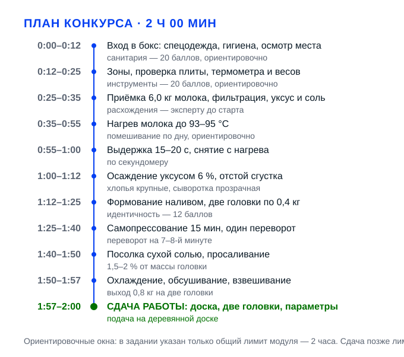
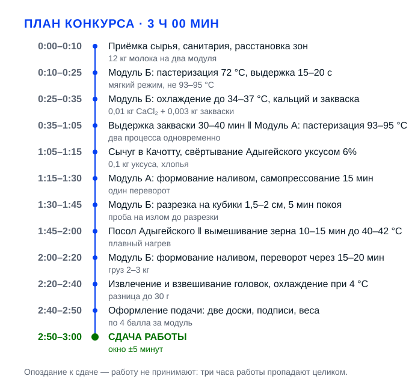
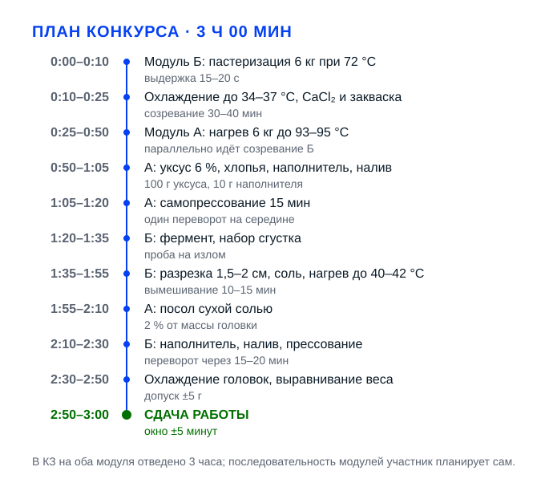

Сыроварение (Р)
Задания ниже — официальные файлы «Абилимпикс» (источник: abilympics-russia.ru), разложенные по категориям. Решения написаны по тексту задания, регламенту и критериям оценки; в них указано, что именно проверяет эксперт.
Школьник
14–16 лет, базовый уровень заданияВыдержка из официального конкурсного задания: страницы, относящиеся к категории «Школьник» (стр. 4–6 источника).
Пошаговое решение
Задание категории «Школьники» одно: за два часа выработать Адыгейский сыр и подать две головки классического сыра на деревянной доске. Сырья по технологической карте — 6,0 кг молока жирностью 3,4 % и 0,1 кг яблочного уксуса 6 %, выход — 0,8 кг, то есть примерно по 0,4 кг на головку. Технология короткая, но точная: молоко пастеризуют при 93–95 °C с выдержкой 15–20 секунд, сворачивают уксусом до хлопьевидного сгустка, формуют наливом, дают самопрессоваться 15 минут с одним переворотом, солят сухой солью и охлаждают. Оценивают сто баллов, и большая часть из них приходится не на сам сыр, а на то, как организована работа: санитария — 20 баллов, владение инструментами — 20, соблюдение последовательности и параметров — 30, идентичность головок — 12, презентация — 10, организация — 4 и ресурсосбережение — 4. Поэтому порядок в боксе и проверенный термометр дают столько же, сколько удачное осаждение.

Задача 1. Подготовить бокс и сырьё к выработкеМодуль А · 44 балла (санитария 20, инструменты 20, организация 4)
Первый отрезок работы уходит не на сыр, а на условия, в которых он получится. Нужно войти в бокс по санитарным правилам, разложить инвентарь по ходу технологического процесса, принять и оценить шесть килограммов молока, отмерить уксус и соль, подготовить две одинаковые формы с марлей. Эти действия приносят 44 балла из 100 и одновременно обеспечивают всё остальное: если молоко окажется скисшим, а марля сухой, никакая аккуратность на последующих операциях уже не спасёт выход 0,8 кг.
Действие 1.1. Войти в бокс по санитарным правилам
Шаг 1.1.1
Надеваем полный комплект: хлопчатобумажные китель и брюки, белый колпак или косынку, закрытую обувь на нескользящей подошве. Китель застёгиваем на все пуговицы, завязки прячем, волосы убираем под колпак целиком, а не только на макушке, потому что именно с затылка волос попадает в молоко. Рукава подворачиваем выше локтя: длинный рукав касается края кастрюли и тянется к горячей поверхности.
Соблюдение требований санитарии и гигиены у школьников — самый весомый блок критериев: 20 баллов из 100, то есть пятая часть итоговой оценки. Эксперт смотрит не на общее впечатление, а на конкретные признаки: чистая ли одежда, застёгнута ли она, убран ли волос, закрыта ли обувь. Молоко — питательная среда, в которой микрофлора размножается быстро, поэтому нарушение гигиены обесценивает даже технологически верную работу.
Отойдите к зеркалу или попросите волонтёра посмотреть со спины: волос не видно ни спереди, ни сзади, китель застёгнут и не топорщится, рукава не спускаются ниже локтя, обувь закрытая и сухая. Заодно проверьте карманы — телефона, ручки и часов там быть не должно, иначе придётся выкладывать их в середине процесса.
Чаще всего колпак надевают на макушку, оставляя затылок открытым: спереди всё аккуратно, а сзади волосы выбиваются, и эксперт фиксирует это при первом подходе. Вторая ошибка — прийти в открытой обуви или в футболке, рассчитывая надеть китель «потом»: время уйдёт из технологического графика, а балл за спецодежду уже потерян.
Эксперт осматривает участника до старта, а затем следит, остаётся ли одежда чистой по ходу работы: брызги молока и сыворотки на груди к середине модуля тоже считаются.
Шаг 1.1.2
Снимаем кольца, браслеты, часы, длинные серьги, ногти коротко подстрижены, без лака и покрытия. Моем руки с мылом до запястий не меньше двадцати секунд, отдельно прорабатывая большие пальцы, промежутки между пальцами и область под ногтями, затем вытираем одноразовым полотенцем и обрабатываем кожным антисептиком. Всё это повторяем после каждого перерыва, после уборки и после того, как поправили колпак.
Гигиена рук — часть тех же 20 баллов за санитарию, и оценивается она в динамике, а не однократно на входе. Под украшением остаются загрязнения, которые обычным мытьём не снимаются, а камень из кольца или звено браслета могут оказаться в сгустке и уйти вместе с ним в головку сыра. Посторонний предмет в продукте, который пробуют эксперты, — это уже не снижение балла, а разбирательство с главным экспертом.
Руки сухие, украшений нет, ногти короткие, полотенце использованное и сразу выброшено, а не положено на стол. Если кольцо снимается тяжело, снимите его заранее, дома, а не в боксе за минуту до старта, когда руки уже вспотели и скользят.
Классическая ошибка — вытереть руки о фартук или о рабочее полотенце: внешне руки сухие, но полотенце становится переносчиком, и это видно. Вторая — помыть руки один раз в начале и считать вопрос закрытым, хотя после взвешивания молока и работы с формами руки нужно мыть снова.
Эксперт смотрит на руки на протяжении всего модуля и отдельно отмечает, меняются ли полотенца и моется ли инвентарь после контакта с сырым молоком. Это видно по ходу дела.
Шаг 1.1.3
Обходим бокс и проверяем санитарное состояние до того, как что-то поставим на стол: поверхности чистые и сухие, раковина свободна, есть мыло, одноразовые полотенца и кожный антисептик, мусорные контейнеры пустые и раздельные. Если на столе остались следы предыдущего участка, пятна или крошки, вытираем сами, не дожидаясь замечания. О любой неисправности — трещине на плите, шатающейся ножке стола, отсутствии воды — сообщаем эксперту сразу.
Уборка до начала работы входит в санитарный блок и в критерий организации работы на 4 балла: считается, что участник отвечает за место с момента входа. Если неисправность обнаружится в момент, когда молоко уже греется, исправлять её будет некогда, а треснувшая поверхность индукционной плиты — это ещё и риск поражения током, который относится к охране труда.
Стол сухой и без крошек, раковина пустая, мыло и полотенца на месте, контейнеры для отходов свободны. Пройдите по боксу взглядом эксперта: если бы вы принимали это место, что отметили бы первым? Всё проверяется за две минуты.
Начать работу на чужом беспорядке, решив, что это не ваша зона. Другая ошибка — заметить неисправность и промолчать: потом претензию не примут, а поломка оборудования в процессе спишется на участника.
Эксперт оценивает санитарное состояние бокса в начале и в конце модуля, и разница между этими двумя картинами для него показательна. Оценивает он и то, как участник вёл себя при обнаружении проблемы.
Действие 1.2. Разложить зоны и проверить оборудование
Шаг 1.2.1
Размечаем рабочую поверхность на четыре зоны строго по ходу процесса: слева приёмка и взвешивание, в центре плита с кастрюлей, справа от неё формование с поддоном и решёткой, дальше посолка и охлаждение. Кастрюля стоит так, чтобы к ней был свободный подход с двух сторон и шнур не тянулся через проход. Всё, что понадобится в первые минуты после осаждения — шумовка, ковш, формы, марля — лежит в пределах вытянутой руки от плиты, а не на дальнем краю стола.
Организация и управление работой — 4 балла, и они ставятся за то, насколько продуман маршрут. Адыгейский сыр делается быстро: от вливания уксуса до формования проходит три-четыре минуты, и в это время искать шумовку по боксу нельзя. Продуманные зоны экономят не меньше десяти минут из двух часов и снимают половину суеты, за которую снижают баллы.
Проверьте себя просто: встаньте у плиты и, не сходя с места, дотянитесь до шумовки, ковша, формы и уксуса. Если до чего-то нужно делать шаг или наклоняться через стол, переставьте. Проход между столом и стеллажом должен оставаться свободным.
Разложить инвентарь как встало и поставить кастрюлю у самого края стола: при помешивании шести литров горячего молока край — это ожог. Вторая ошибка — поставить формы за спиной, чтобы не мешали: в нужный момент вы будете разворачиваться с горячим сгустком в руках.
Эксперт обходит бокс до старта и отмечает, есть ли у участника продуманная последовательность движений или он импровизирует. Отдельно отмечает, свободны ли проходы и не перекрыт ли доступ к раковине.
Шаг 1.2.2
Проверяем оборудование по списку. Индукционную плиту включаем и проверяем, что поверхность целая, а посуда с плоским дном распознаётся; термометр опускаем в кипящую воду и убеждаемся, что он показывает около 100 °C, а не 92 и не 105; весы включаем, тарируем пустой тарой и проверяем на контрольном грузе. Термометр и весы — два прибора, от которых зависит вся технология, поэтому их проверяют до работы, а не в момент, когда нужно принять решение.
Владение рабочими инструментами — 20 баллов, столько же, сколько за санитарию, и это не случайно: без достоверного термометра невозможно выдержать пастеризацию при 93–95 °C, а без весов — получить две одинаковые головки по 0,4 кг. Смещённый на пять градусов термометр означает, что молоко либо недопастеризовано, либо перегрето и сгусток получится крошливым.
Термометр в кипящей воде показывает 98–100 °C с поправкой на высоту площадки; весы с контрольным грузом дают тот же вес при повторном взвешивании; плита нагревает кастрюлю с водой и держит заданную мощность. Всё сомнительное сразу меняем через эксперта, а не подстраиваемся в уме.
Работать с непроверенным термометром: показания выглядят правдоподобно, ошибка вылезает только на дегустации, когда уже ничего не исправить. Вторая ошибка — не тарировать весы и потом делить сгусток на глаз, потеряв 12 баллов за идентичность головок.
Эксперт наблюдает, как участник обращается с приборами: держит ли термометр в центре объёма, не касается ли дна, тарирует ли весы перед каждым взвешиванием.
Шаг 1.2.3
Готовим посуду: кастрюлю не меньше восьми литров с толстым дном, потому что шесть килограммов молока при нагреве поднимаются пеной и в тесной посуде убегут; две одинаковые сырные формы с перфорацией, поддон с решёткой для стока сыворотки, шумовку с длинной ручкой, ковш, мерный стакан, нож и доску. Марлю или лавсановую салфетку складываем в два слоя и пока откладываем сухой — смачивать её будем непосредственно перед формованием.
Владение инструментами и организация оцениваются вместе, и правильная посуда — первое условие: в кастрюле без запаса по объёму молоко при 93 °C обязательно пойдёт через край, а это потеря сырья и риск ожога. Одинаковые формы нужны не для красоты: идентичность головок — отдельный критерий на 12 баллов, и разные формы дают разный диаметр даже при одинаковом весе.
Кастрюля вмещает шесть литров молока и оставляет не меньше трети объёма свободной; формы совпадают по диаметру и высоте, перфорация чистая, без остатков старого сыра; шумовка целая, с жёсткой ручкой. Всё вымыто и стоит на своих зонах.
Взять кастрюлю на глаз, а потом доливать молоко частями — нарушение технологической карты, где указано 6,0 кг сразу. Вторая ошибка — взять разные формы: головки получатся разного диаметра, и 12 баллов за идентичность сгорят при первом же сравнении.
Эксперт проверяет комплектность и чистоту инвентаря при обходе, а также смотрит, пользуется ли участник инструментом по назначению: шумовкой собирают сгусток, а не мешают молоко.
Действие 1.3. Принять и оценить молоко
Шаг 1.3.1
Принимаем молоко по технологической карте: 6,0 кг сырья жирностью 3,4 %. Ставим на весы тару, тарируем, переливаем и смотрим на дисплей, а не на маркировку упаковки. Заодно проверяем температуру — охлаждённое молоко должно быть в пределах 4 ± 2 °C — и целостность пакета: вздутая упаковка, подтёки и повреждённые углы означают, что продукт уже не тот. Все расхождения с картой фиксируем сразу и показываем эксперту до старта.
Точный вес — основа технологического расчёта: из 6,0 кг молока по карте выходит 0,8 кг сыра, и любое отклонение сдвигает и количество уксуса, и массу головок. Приёмка — единственный момент, когда недостающее ещё можно заменить: после старта замена идёт только через главного эксперта и только по уважительной причине.
На весах ровно 6,0 кг с точностью до двадцати граммов, температура в норме, упаковка целая, срок годности в порядке. Если вес отличается на сто граммов и больше — это уже повод подойти к эксперту, а не молча доливать водой.
Начать с нагрева, не взвесив молоко: потом окажется, что его 5,4 кг, а уксус отмерен на шесть, и сгусток перекислит. Вторая ошибка — принять тёплое молоко и не заметить этого: с ним пастеризация пройдёт быстрее, но кислотность уже сдвинута, и хлопья получатся мелкими.
Эксперт фиксирует, взвешивал ли участник сырьё и сверялся ли с картой, и отдельно отмечает реакцию на расхождение. Если расхождение обнаружено и показано, это плюс к организации работы, а не минус.
Шаг 1.3.2
Оцениваем молоко органолептически: цвет белый с лёгким кремовым оттенком, запах чистый и свежий, без кислого и затхлого, консистенция однородная, без комков и хлопьев на стенках пакета. Затем делаем пробу на кипячение: наливаем 20–30 мл в металлическую ложку и держим над паром до закипания. Нормально свежее молоко не свернётся, а если в ложке появились хлопья, значит кислотность повышена и для осаждения уксусом такое сырьё не годится.
Органолептическая оценка сырья прямо входит в требования к квалификации по компетенции и в критерий владения инструментами: участник должен уметь проверить готовность сырья, а не просто вылить его в кастрюлю. Сквашенное молоко свернётся раньше времени и даст рыхлый, зернистый сгусток, из которого не выйдет пластичная головка — а это потеря и по последовательности операций, и по внешнему виду.
Молоко однородное, без посторонних включений, проба в ложке не свернулась, запах и цвет в норме. Если сомнение осталось, лучше перестраховаться и показать молоко эксперту — это займёт минуту, а не полчаса переделки.
Пропустить пробу на кипячение и узнать о повышенной кислотности по мелкому хлопью уже в кастрюле. Вторая ошибка — маскировать кислый запах, решив, что уксус всё равно добавим: получится двойное кислое брожение и творожистый, а не сырный вкус.
Эксперт может сам предложить пробу и смотрит, как участник оценивает сырьё: нюхает ли, смотрит ли на стенки пакета, пробует ли на кипячение. Оценивается и аккуратность: проба не должна идти в общий объём.
Шаг 1.3.3
Переливаем молоко в кастрюлю через марлю, сложенную в два слоя, — так задерживаются механические примеси и случайные частицы, которые в шести литрах не увидеть. Льём по стенке, а не с высоты, чтобы не вспенивать: пена на поверхности мешает увидеть момент образования хлопьев и потом путается в шумовке. После перелива отмечаем уровень на стенке кастрюли или запоминаем его, чтобы контролировать выкипание.
Фильтрация — требование технологии, а не формальность: посторонняя частица, попавшая в головку, стоит участнику критерия идентичности головок и презентации сразу, потому что её видно на разрезе. Отметка уровня помогает заметить, что молоко при нагреве испарилось сильнее обычного, и вовремя убавить мощность.
Марля после перелива чистая или с незначительным осадком, пены на поверхности немного, уровень отмечен. Молоко в кастрюле занимает не больше двух третей высоты — запас на пену есть. Отметка уровня видна на стенке и не смывается при помешивании.
Лить с высоты и взбить пену: она держится до 90 °C, и в этот момент вы не увидите, пошёл ли сгусток. Вторая ошибка — не отметить уровень и потом гадать, почему выход меньше 0,8 кг. Оба нарушения обнаруживаются уже на этапе формования, когда исправлять нечего.
Эксперт смотрит, фильтрует ли участник молоко и не оставляет ли марлю лежать на столе после использования. Ещё он смотрит, куда делась марля после фильтрации: на столе ей места нет.
Действие 1.4. Отмерить уксус и соль, подготовить формы
Шаг 1.4.1
Отмеряем яблочный уксус 6 % — по технологической карте 0,1 кг, то есть 100 граммов на шесть килограммов молока. Наливаем в мерный стакан, ставим рядом с плитой, чтобы в нужную секунду не искать. Уксус должен быть комнатной температуры, а не из холодильника: холодный осадитель резко сбивает температуру молока и замедляет образование хлопьев. Проверяем уровень на просвет, а не на глаз сверху.
Дозировка кислоты — ключевой параметр осаждения: недолив даёт мелкое хлопье и мутную сыворотку, перелив — крошливый сгусток с резким вкусом. Именно соблюдение технологических параметров оценивается в 30 баллов, самой крупной статьёй критериев у школьников, поэтому уксус отмеряется, а не льётся на глаз.
В стакане 100 мл, уровень совпадает с меткой, на бутылке читается концентрация 6 %, а не 9 %. Если на площадке выдали столовый уксус 9 %, разбавлять его нужно до шестипроцентного и согласовать это с экспертом заранее, а не в момент осаждения.
Взять уксус примерно столько из бутылки: передозировка в полтора раза даёт жёсткий, резинистый сгусток и кислый вкус, который уже не исправить посолкой. Вторая ошибка — держать уксус в холодильнике до последней минуты.
Эксперт проверяет, отмерен ли осадитель прибором и стоит ли он в зоне плиты до начала нагрева. Если осадитель разведён из девятипроцентного, эксперт должен узнать об этом до начала работы, а не после подачи.
Шаг 1.4.2
Отвешиваем соль: на выход 0,8 кг при посолке сухим способом идёт 1,5–2 % соли от массы продукта, то есть 12–16 граммов на две головки, примерно по 6–8 граммов на каждую. Берём соль крупного помола, без йода и ароматических добавок, и насыпаем её в сухую баночку с ложкой. Влажная соль слипается и ложится на поверхность головки неровными комками, а это сразу видно при оценке.
Посолка входит в последовательность технологических операций, и точность здесь измеримая: недосол даёт пресный вкус и слабую консистенцию, пересол — грубую корку и потерю баллов за вкус. Расчёт от массы, а не щепотка, нужен ещё и потому, что обе головки должны быть одинаковыми: разное количество соли на них — это уже разный продукт.
На весах 12–16 граммов, соль сухая и рассыпчатая, баночка закрыта и подписана. Проверьте, что соль не йодированная: на упаковке это указано прямо. Заодно проверьте, что баночка сухая: влага превращает соль в камень, и отвешивать её будет нечем.
Взять соль на глаз и посолить одной головке больше: после просаливания это проявится пятнами и разным вкусом, а 12 баллов за идентичность уйдут. Вторая ошибка — использовать мелкую экстра-соль, которая растворяется слишком быстро и даёт резкий верхний слой.
Эксперт смотрит, взвешивается ли соль и учитывается ли при этом фактическая масса головок, а не только карта. Вопрос о том, сколько соли уйдёт на каждую головку, задаётся прямо, и ответ должен быть в граммах.
Шаг 1.4.3
Готовим две одинаковые формы: застилаем каждую марлей или лавсановой салфеткой в два слоя так, чтобы края свисали за борта сантиметров на десять. Марлю смачиваем чистой водой и отжимаем — сухая ткань впитывает сгусток, и часть сыра остаётся на ней. Ставим формы на поддон с решёткой, чтобы сыворотка стекала вниз, а не стояла под головкой. Складки разглаживаем пальцами по дну формы.
Подготовленная форма — условие ровной поверхности и одинакового рисунка: складки марли отпечатываются на головке и видны как дефект. Решётка под формой нужна потому, что в луже сыворотки нижняя корка размокает и получается бледной и рыхлой, а это потеря баллов и за внешний вид, и за идентичность.
Марля лежит без складок и крупных заломов, края распределены равномерно, формы стоят на решётке устойчиво и не качаются. Проведите ладонью по дну формы изнутри — ткань должна лежать ровно, без комков.
Застелить форму как получилось, с натянутой в одну сторону марлей: на головке останутся глубокие полосы, и её придётся либо переделывать, либо отдавать с минусом. Вторая ошибка — поставить форму прямо на поддон без решётки.
Эксперт проверяет подготовку форм в момент формования и потом оценивает поверхность головок: ровная, с мелким сетчатым рисунком или с грубыми заломами.
Задача 2. Пастеризовать молоко и свернуть его уксусомМодуль А · 30 баллов (последовательность операций и параметры)
Сердце модуля — два параметра, от которых зависит всё остальное: молоко нужно довести до 93–95 °C, выдержать при этой температуре 15–20 секунд и свернуть яблочным уксусом 6 % до хлопьевидного сгустка. Здесь ошибка в пять градусов или в двадцать граммов кислоты уже не исправляется на следующих операциях, поэтому весь блок идёт с термометром, секундомером и непрерывным помешиванием. Именно эта последовательность оценивается в 30 баллов — самая крупная статья критериев у школьников.
Действие 2.1. Нагреть молоко до порога пастеризации
Шаг 2.1.1
Ставим кастрюлю с молоком на индукционную плиту и включаем среднюю мощность, а не максимум: при полной мощности молоко у дна перегревается раньше, чем прогреется верхний слой. Мешаем деревянной лопаткой или шумовкой, обязательно проводя по самому дну, каждые одну-две минуты, и снимаем то, что пристало. Движение идёт от центра к стенкам и обратно, а не кругами по поверхности: так тепло распределяется равномерно.
Соблюдение технологических параметров — 30 баллов, и начинается оно с равномерного нагрева: при подгоревшем дне появляется привкус горелого молока, который переходит в сыр и не маскируется ни солью, ни охлаждением. Кроме того, равномерный нагрев позволяет точно поймать момент 93 °C, а не пролететь его на десять градусов, пока датчик лежит на поверхности.
Молоко движется по всей кастрюле, на дне ничего не оседает, лопатка идёт свободно без сопротивления пригоревшего слоя. На слух нагрев ровный, без потрескивания, а на поверхности не появляются тёмные точки.
Включить плиту на максимум и отойти к другому делу: через три минуты у дна уже пригар, и весь шестилитровый объём получает горелый оттенок. Вторая ошибка — мешать только верхний слой, не касаясь дна. Оба нарушения заметны по тёмному слою на дне.
Эксперт подходит к плите в начале нагрева и смотрит на характер помешивания: касается ли лопатка дна и как часто участник возвращается к кастрюле. Смотрит он и на то, не наклоняется ли участник низко над паром.
Шаг 2.1.2
Держим термометр в центре объёма, не касаясь дна и стенок, и следим за ростом температуры: после 80 °C нагрев заметно ускоряется, и именно здесь нужно убавить мощность до минимума, чтобы не проскочить 95 °C. Показания снимаем каждые тридцать-сорок секунд, а ближе к девяноста градусам — непрерывно, не вынимая прибор из молока. Термометр держим за верхнюю часть, чтобы рука не оказалась над паром.
Точность до градуса здесь принципиальна: пастеризация по карте идёт при 93–95 °C, и это верхний, а не нижний режим. Недогрев до 90 °C означает, что часть микрофлоры осталась, а перегрев выше 96 °C даёт кипячёный привкус и слишком плотное, резинистое зерно после осаждения — за это снимают и по параметрам, и по вкусу.
Столбик термометра поднимается плавно, без скачков, и останавливается в диапазоне 93–95 °C, когда вы убавили мощность. Пар идёт, но бурного кипения с пузырями по всей поверхности нет. Термометр при этом остаётся в молоке, а не вынимается для каждого замера.
Передержать на сильном огне и получить 98–100 °C: молоко фактически кипит, часть влаги уходит паром, а выход падает ниже 0,8 кг. Вторая ошибка — измерять температуру у стенки кастрюли, где она на несколько градусов ниже.
Эксперт проверяет, где именно находится датчик, и сверяет ваши показания со своими, если подходит со своим термометром. Если расхождение больше трёх градусов, работу останавливают и меняют прибор.
Шаг 2.1.3
Пока молоко не закипело, снимаем пену: шумовкой аккуратно снимаем верхний слой в отдельную чашку и отставляем её в сторону. Делать это нужно до 90 °C, потому что позже пена становится плотной и мешает видеть образование хлопьев. Заодно проверяем, не пристало ли что-то к дну, и если да, аккуратно снимаем лопаткой, не взбалтывая объём. Пену снимаем одним движением, а не по ложке.
Пена — это денатурированный белок и пузыри воздуха; на ней задерживается часть хлопьев при осаждении, и они не попадают в форму, а значит выход уменьшается. Кроме того, под плотной пеной не видно, как меняется цвет сыворотки — а это главный визуальный признак готовности сгустка.
Поверхность молока чистая, пены почти нет, на дне ничего не пригорело. Снятую пену не выбрасываем в раковину сразу, а ставим в чашку — она пригодится, если понадобится оценить запах и цвет сырья. Чашка с пеной стоит отдельно и не мешает.
Снимать пену в самом конце, когда молоко уже на грани: и пена плотная, и время выдержки тратится на суету. Вторая ошибка — снимать пену рукой или тряпкой, а не шумовкой. Оба нарушения одинаково опасны: одно даёт ожог, второе — посторонний предмет в продукте.
Эксперт смотрит на аккуратность работы с горячим объёмом: не наклоняется ли участник над паром и не держит ли лицо прямо над кастрюлей. Смотрит он и на то, куда девается снятая пена.
Действие 2.2. Выдержать молоко при 93–95 °C
Шаг 2.2.1
Как только термометр показал 93 °C, убавляем мощность до такого уровня, при котором температура держится, а не растёт: на индукционной плите это обычно одна-две ступени из десяти. Держим диапазон 93–95 °C, не выходя за верхнюю границу, и продолжаем медленно мешать, чтобы тепло распределялось равномерно. Если температура пошла выше, снимаем кастрюлю с нагрева на несколько секунд и возвращаем обратно.
Выдержка при заданной температуре и есть собственно пастеризация: при 93–95 °C гибнет вегетативная микрофлора, и молоко становится безопасным и предсказуемым для осаждения. Температурный режим — прямая часть 30 баллов за соблюдение технологических параметров, и отклонение фиксируется по вашим же показаниям, которые эксперт видит на дисплее.
Столбик стоит в границах 93–95 °C не меньше пятнадцати секунд, поверхность чуть парит, но не бурлит. Проверьте по секундомеру и по термометру одновременно — два прибора должны подтвердить режим. Показания фиксируем в заметках, чтобы потом назвать их эксперту.
Держать на грани кипения, считая, что так надёжнее: при 97–98 °C белок денатурирует слишком глубоко, и сгусток получается плотным, а головка потом крошится при нарезке. Вторая ошибка — убавить мощность так сильно, что температура падает до 88 °C, и выдержка не засчитывается.
Эксперт фиксирует момент выхода на режим и то, насколько стабильно участник его удерживает. Если температура уходит выше 96 °C, это фиксируется как нарушение параметра, даже когда сыр получился. Вопрос о том, какой режим держали, задаётся почти всегда.
Шаг 2.2.2
Засекаем выдержку секундомером на телефоне или на часах: по карте это 15–20 секунд при 93–95 °C. Отсчёт начинается в тот момент, когда оба условия выполнены одновременно, а не когда вы включили нагрев. Всё это время продолжаем медленно мешать, чтобы весь объём, а не только верхний слой, прошёл режим. Через двадцать секунд сразу переходим к следующей операции.
Короткая выдержка при высокой температуре — стандартный режим для сыров, которые делают из пастеризованного молока без долгой бактериальной закваски: 15–20 секунд при 93–95 °C достаточно для безопасности и при этом не разрушает сыропригодные свойства белка. Именно этот параметр указан в задании, и его соблюдение проверяется по времени и температуре вместе.
Секундомер остановлен на 15–20 секундах, термометр в это время показывал не ниже 93 °C. Если вы отвлеклись и не уверены в отсчёте, лучше начать отсчёт заново, чем выдать произвольное время. Отсчёт ведём по секундомеру, а не по счёту в голове.
Отсчитывать выдержку на глаз, пока ищешь уксус: реально проходит минута, молоко перегревается, и вместе с ним уходит часть выхода. Вторая ошибка — считать выдержку от момента включения плиты. Оба варианта дают сдвиг режима, и он виден в протоколе.
Эксперт может спросить, сколько секунд длилась выдержка и при какой температуре, и по ответу видит, велась ли работа по параметрам. Отдельно отмечает, был ли секундомер в руках или время бралось на глаз.
Шаг 2.2.3
Снимаем кастрюлю с плиты или выключаем нагрев и даём молоку полминуты успокоиться: температура при этом остаётся около 90 °C, и это рабочая температура осаждения. Проверяем, что уксус, мерный стакан, шумовка и формы стоят на своих местах, и только после этого начинаем вносить кислоту. Между выдержкой и осаждением не должно быть паузы в поиск инвентаря.
Осаждение проводят на горячем молоке, не давая ему остыть ниже 88–90 °C: на тёплом молоке хлопья получаются мелкими и медленно оседают, часть белка остаётся в сыворотке и теряется вместе с ней. Полминуты паузы нужны ещё и для того, чтобы прекратилось движение от помешивания и вы видели, как ведёт себя сгусток.
Термометр показывает 88–92 °C, поверхность спокойная, инвентарь под рукой. Если температура упала ниже 85 °C, верните кастрюлю на нагрев на полминуты и снова доведите до 90 °C. Если кастрюля стоит на выключенной плите, она остывает медленнее, и это нормально.
Дать молоку остыть до 70 °C, пока готовите формы: сгусток встанет мелким, сыворотка останется мутной, а выход будет меньше 0,8 кг. Вторая ошибка — начать осаждение, не прекратив помешивание, и разбить только начавшие формироваться хлопья.
Эксперт смотрит на паузу между операциями: она не должна превращаться в простой, но и спешка с неподготовленным инвентарём видна сразу. Смотрит и на то, не остыло ли молоко, пока искали инвентарь.
Действие 2.3. Свернуть молоко уксусом 6 % и получить хлопья
Шаг 2.3.1
Наклоняем мерный стакан и вливаем 100 граммов яблочного уксуса 6 % тонкой струёй в молоко, одновременно мешая лопаткой в одном направлении — от центра к стенкам. Вливание занимает двадцать-тридцать секунд, не больше: струя должна быть тонкой, чтобы кислота распределялась по объёму, а не падала в одну точку. Уксус льём в молоко, а не молоко в уксус — так кислотность нарастает постепенно и хлопья получаются крупными.
Скорость внесения кислоты определяет структуру сгустка: при быстром вливании в одну точку белок сворачивается мгновенно и мелкими фракциями, которые потом не собираются в пластичную головку. Постепенное нарастание кислотности даёт крупное, упругое хлопье — именно оно и считается правильным признаком готовности в этом модуле.
Струя тонкая и непрерывная, помешивание равномерное, на поверхности появляются первые хлопья уже к концу вливания. В стакане после вливания не остаётся заметного остатка кислоты. Если в стакане осталось больше десяти граммов, значит часть кислоты ушла мимо молока.
Вылить весь стакан разом: молоко мгновенно расслаивается на мутную сыворотку и мелкую крошку, которую шумовкой не собрать. Вторая ошибка — лить уксус в неподвижное молоко и мешать только после, когда хлопья уже слиплись у стенки.
Эксперт наблюдает за самим вливанием: тонкая струя и непрерывное помешивание видны сразу и оцениваются как владение приёмами. Оценивает он и наклон стакана: при вертикальном положении струя срывается в комок.
Шаг 2.3.2
Наблюдаем за образованием хлопьев: они должны появиться в течение десяти-пятнадцати секунд после начала вливания и укрупняться по мере добавления кислоты. Если через полминуты сыворотка остаётся мутной, а хлопья мелкими, добавляем уксус по десять граммов, каждый раз перемешивая и выжидая двадцать секунд. Всего по карте идёт 0,1 кг, и выходить за эту норму нельзя — лучше недолить и получить чуть мягче сгусток, чем перекислить.
Кислота расходуется не только на осаждение, но и на вкус: избыток даёт резкий уксусный оттенок, который в Адыгейском сыре считается дефектом. При этом недостаток оставляет белок в сыворотке, и выход падает. Добавление по десять граммов позволяет найти границу, не перескочив её.
Хлопья крупные, размером от горошины до фасоли, сыворотка между ними светлеет. Добавка прекращена сразу, как только хлопья перестали укрупняться, а общий расход не превысил 100 граммов. Общий расход проверяем по метке на стакане или по весу бутылки.
Доливать уксус, пока сыворотка не станет совсем прозрачной: обычно к этому моменту израсходовано в полтора раза больше нормы, и сыр получается кислым и жёстким. Вторая ошибка — не выжидать двадцать секунд между добавками и решить, что кислота не работает.
Эксперт смотрит на расход осадителя: сколько ушло из стакана и осталось ли что-то в бутылке. Отмечает он и вкус: если пробу сгустка нельзя взять, ориентируются на запах. Перекисленный сгусток пахнет резко, и это заметно ещё до дегустации.
Шаг 2.3.3
Прекращаем помешивание и даём сгустку отстояться три-пять минут: за это время хлопья собираются, а сыворотка отделяется и поднимается кверху. Кастрюлю не трясём и не переставляем, крышкой не накрываем — под крышкой образуется конденсат, который падает в сгусток. В это время спокойно раскладываем марлю по формам и ставим поддон с решёткой под них. Так сгусток не прилипнет к ткани.
Отстой — это операция, а не пауза: именно на нём хлопья слипаются в массу, которую можно наливать в форму целиком, а не вычерпывать по ложке. Если начать формование сразу, сгусток разойдётся на отдельные частицы, головка получится рыхлой, а в сыворотке останется заметная часть белка.
Хлопья держатся вместе, при наклоне кастрюли масса медленно смещается, а не рассыпается. Сыворотка отделилась и занимает заметный объём. Если сыворотка мутная, а хлопья мелкие, значит кислоты не хватило или молоко остыло ниже 88 °C. Тогда возвращаем кастрюлю на нагрев и добавляем уксус по десять граммов.
Мешать всё время отстоя, чтобы сгусток не осел на дно: он разобьётся на мелкие фракции. Вторая ошибка — накрыть кастрюлю крышкой и уйти, оставив конденсат капать в продукт. Третья ошибка — начать формование раньше срока и потом добирать сгусток из мутной сыворотки.
Эксперт отмечает, выдержана ли пауза, и по виду сгустка понимает, работал участник по технологии или торопился. Он же смотрит, не мешает ли участник сгусток в момент отстоя: это видно по мелкой взвеси в сыворотке.
Шаг 2.3.4
Оцениваем готовность сгустка по трём признакам сразу. Первый — цвет сыворотки: она должна быть прозрачной, зеленовато-жёлтой, а не белой и мутной. Второй — размер и плотность хлопьев: крупные, упругие, не расползающиеся при помешивании шумовкой. Третий — поведение при сжатии: берём щепотку сгустка и слегка сжимаем в пальцах в перчатке, масса должна слипаться, а не рассыпаться в кашу.
Умение проверять готовность сгустка прямо прописано в требованиях к квалификации по компетенции и входит в критерий соблюдения технологических параметров. Проверка по трём признакам нужна потому, что каждый из них по отдельности обманывает: сыворотка бывает мутной из-за взбитой пены, а хлопья крупными при неполном осаждении внутри.
Сыворотка прозрачная, хлопья не разваливаются, при сжатии держат форму. Если хотя бы один признак не совпал, дайте ещё минуту отстоя, а не начинайте формование наугад. Пробу берём из середины объёма, а не с поверхности, где хлопья всегда крупнее и суше.
Судить по одному признаку, чаще всего по цвету: подкрашенная пеной сыворотка выглядит мутной, и участник добавляет лишний уксус. Вторая ошибка — проверять готовность голой рукой, без перчатки. Оба нарушения одинаково дорого стоят.
Эксперт подходит именно к этой операции и может попросить показать пробу сгустка на сжатие. Проверку он может попросить повторить, и тогда важно показать не один признак, а все три сразу. Сжатие в пальцах показывает структуру лучше любого описания.
Шаг 2.3.5
Переходим к разделению: шумовкой собираем сгусток с поверхности и перекладываем в подготовленную марлю, а сыворотку сливаем в отдельную чистую ёмкость, не выливая в раковину. Работаем быстро, но без резких движений: сгусток не взбалтываем и не разминаем шумовкой, а подхватываем пластами. Сыворотку оставляем под рукой — она нужна и для охлаждения, и для дальнейшей уборки.
Аккуратное разделение сохраняет структуру хлопьев и даёт ровную головку, а собранная сыворотка — это отдельный пункт ресурсосбережения на 4 балла: в раковину её сливать нельзя, это и потери продукта, и лишняя нагрузка на очистные. Кроме того, в сыворотке остаётся часть белка, которая при правильном осаждении минимальна — по её количеству видно качество работы.
В кастрюле осталась прозрачная сыворотка без плавающих хлопьев, сгусток собран в марлю, ёмкость с сывороткой подписана или хотя бы стоит отдельно от чистой посуды. Если в кастрюле плавает заметное количество хлопьев, их собирают отдельно и добавляют в форму: они ещё годятся в дело.
Вычерпывать сгусток вместе с большей частью сыворотки: в форме окажется много жидкости, самопрессование пойдёт медленнее, а головка будет водянистой. Вторая ошибка — слить сыворотку в раковину, потеряв баллы за ресурсосбережение.
Эксперт смотрит на полноту сбора: сколько хлопьев осталось в кастрюле и куда ушла сыворотка. Смотрит он и на то, не вылита ли сыворотка в раковину: это отдельный пункт ресурсосбережения на 4 балла, и он проверяется именно в этот момент.
Задача 3. Сформовать, отпрессовать, посолить и охладить сырМодуль А · 12 баллов (идентичность головок) + часть 30 за параметры
Из хлопьевидного сгустка нужно получить две одинаковые головки общим весом 0,8 кг: наливом распределить массу по формам, дать ей самопрессоваться ровно 15 минут с одним переворотом, посолить сухой солью и охладить. Здесь решается судьба 12 баллов за идентичность: одинаковый вес, одинаковая форма, одинаковая поверхность у обеих головок — то, что видно на доске без всяких приборов.
Действие 3.1. Сформовать две головки наливом
Шаг 3.1.1
Делим сгусток на две равные части, и делаем это на весах, а не на глаз: ставим на весы ёмкость, тарируем и раскладываем массу так, чтобы разница между частями не превышала десяти граммов. Ориентир — 0,4 кг готовой головки на каждую, то есть весь сгусток идёт строго пополам. Если сгусток собирался в одну марлю, переносим его в две ёмкости поочерёдно, а не отрезаем от общего пласта.
Идентичность головок — отдельный критерий на 12 баллов, и он проверяется сравнением: головки кладут рядом, взвешивают и смотрят на форму. Разница в весе в сорок-пятьдесят граммов видна и на глаз, и на весах, а исправить её после самопрессования уже нельзя — только переделывать модуль, на который у вас два часа.
Части на весах отличаются не больше чем на десять граммов, обе ёмкости с марлей подготовлены, формы стоят рядом. Проверьте весы повторным взвешиванием: если показания скачут, тарируйте заново. Разница фиксируется в заметках.
Делить на глаз, ссылаясь на опыт: разница почти всегда получается в двадцать-тридцать процентов, и одна головка выходит заметно крупнее. Вторая ошибка — взвешивать уже готовые головки после прессования, когда делить поздно.
Эксперт подходит к весам в момент деления и фиксирует, взвешивается ли масса или распределяется произвольно. Отмечает он и то, записаны ли цифры: по ним потом объясняют вес готовых головок.
Шаг 3.1.2
Наливаем сгусток в формы ковшом или шумовкой, распределяя его ровным слоем по всей площади, и слегка подтягиваем марлю за края, чтобы масса легла плотнее. Не трамбуем, не прижимаем ладонью и не разравниваем ложкой с сильным нажимом: сгусток должен лечь сам, а лишняя сыворотка уйдёт через перфорацию. Заполняем обе формы до одинаковой высоты, контролируя это на глаз с одного уровня.
Налив, а не отжим — это способ формования, указанный в задании, и он сохраняет нежную, слоистую структуру Адыгейского сыра. Если трамбовать, часть сыворотки останется внутри, а структура станет плотной и резинистой; если разравнивать с нажимом, на поверхности появятся тёмные плотные участки.
Масса лежит в обеих формах на одной высоте, поверхность ровная, марля не затянута в середину. Через перфорацию уже начинает выступать сыворотка — это нормально и означает, что отток идёт. Если одна форма наполнена выше другой, массу перекладываем сразу.
Набивать форму с горкой: под собственным весом масса осядет неравномерно, и головка получится перекошенной. Вторая ошибка — заполнить одну форму доверху, а во вторую досыпать остатки, из-за чего высота не совпадёт.
Эксперт смотрит на способ укладки: налив виден по ровной, слегка зернистой поверхности, а не по плотному спрессованному слою. Он же смотрит, не осталось ли сгустка на дне кастрюли.
Шаг 3.1.3
Подворачиваем края марли к центру и накрываем массу так, чтобы она была закрыта полностью, но не затянута узлом: марля должна лежать свободно, иначе она врежется в поверхность головки и оставит глубокие складки. Ставим формы на поддон с решёткой, под наклоном не оставляем — поддон должен стоять строго горизонтально. Сразу записываем время начала самопрессования, чтобы не отсчитывать пятнадцать минут по памяти.
Свободно уложенная марля даёт ровный мелкий рисунок на поверхности, а затянутая — рубцы, которые видны при оценке внешнего вида. Горизонтальный поддон нужен для симметрии: на наклонной поверхности сыворотка стекает в одну сторону, и головка получается клином, что сразу бьёт по идентичности.
Марля закрывает массу полностью, узлов и жгутов нет, поддон стоит ровно, время начала прессования записано. Проверьте, что формы не соприкасаются и не мешают друг другу стекать. Если формы стоят на краю, переставляем их в середину стола, где их не заденут.
Завязать марлю тугим узлом сверху: на головке останется вмятина и рубцы, а поверхность придётся либо срезать, либо отдавать с минусом. Вторая ошибка — поставить поддон на край стола, где его легко задеть.
Эксперт фиксирует время начала самопрессования и проверяет, ровно ли стоят формы. Если марля завязана узлом, это видно сразу, и эксперт отмечает нарушение ещё до того, как головка выйдет из формы. Ровная поверхность — следствие свободной укладки, а не удачи.
Шаг 3.1.4
Проверяем симметрию до того, как начнётся отток: смотрим на обе формы с одного уровня и сравниваем высоту массы, диаметр и распределение по краям. Если в одной форме масса заметно выше, аккуратно перекладываем часть сгустка шумовкой в другую, пока высота не совпадёт. Затем накрываем формы чистой салфеткой, чтобы на поверхность ничего не попало, и оставляем в покое.
Симметрия на этом этапе — последняя возможность выровнять головки без потерь: после пятнадцати минут самопрессования масса уже схватится, и перекладывать её будет нельзя. Двенадцать баллов за идентичность набираются именно такими сверками по ходу дела, а не в конце.
Высота массы в формах одинаковая, края заполнены равномерно, диаметр совпадает, формы накрыты и стоят неподвижно. Разница по высоте не больше пяти миллиметров. Смотрим на формы с одной точки, а не обходим их по кругу: так заметнее перекос по высоте. Разницу в диаметре проверяем линейкой, если она есть под рукой.
Оставить одну форму с горкой, а другую недозаполненной, рассчитывая выровнять потом: после прессования разница в весе станет очевидной. Вторая ошибка — трогать массу руками без перчаток. Обе ошибки видны на итоговом взвешивании.
Эксперт сравнивает формы визуально в этот момент и потом сверяет результат на доске. Он может сам подойти и сравнить высоту массы в формах, поэтому выравнивание лучше делать до его подхода. Отдельно отмечается, накрыты ли формы салфеткой.
Действие 3.2. Провести самопрессование 15 минут
Шаг 3.2.1
Оставляем формы под собственным весом массы, без груза и без пресса: по заданию это самопрессование, а не прессование, и дополнительный вес здесь только испортит структуру. Сыр должен отдавать сыворотку медленно, под действием собственной тяжести, пока марля и перфорация работают как фильтр. В это время следим, чтобы поддон не переполнялся сывороткой и она не подступала к самой головке.
Самопрессование 15 минут — параметр, прямо указанный в задании, и он входит в 30 баллов за соблюдение технологии. Медленный отток формирует нежную, слегка слоистую консистенцию, характерную для Адыгейского сыра; под грузом головка становится плотной, почти резиновой и теряет типичный рисунок.
Сыворотка стекает в поддон ровной струйкой, поверхность головки постепенно уплотняется, масса не расползается за края марли. Через три-четыре минуты от начала видно, что объём слегка уменьшился. Пятен сыворотки на поверхности сыра быть не должно.
Поставить сверху разделочную доску или банку с водой, решив, что так быстрее: головка сплющивается, становится жёсткой, и баллы уходят и за параметры, и за текстуру. Вторая ошибка — не следить за поддоном, пока сыворотка не подступит к сыру.
Эксперт проверяет, есть ли на формах груз: его отсутствие — часть правильного выполнения операции. Отмечает он и то, стоит ли поддон ровно и не подтекает ли он на стол: влага под формой — это и санитария, и риск падения.
Шаг 3.2.2
Через семь-восемь минут, то есть на середине срока, делаем единственный переворот. Приподнимаем марлю за свободные края, накрываем ладонью в перчатке и одним движением переворачиваем головку на другую сторону, поддерживая её снизу, чтобы она не развалилась. Укладываем обратно в ту же форму, расправляем марлю и снова ставим поддон ровно. Больше не переворачиваем.
Один переворот указан в задании, и его задача — выровнять влажность по толщине: снизу скапливается сыворотка, и без переворота нижний слой получается влажнее верхнего. Второй и третий перевороты уже вредят: каждый раз головка теряет форму, а на поверхности появляются заломы.
После переворота головка держит форму, не растекается, марля лежит ровно, поддон снова горизонтален. На поверхности нет новых грубых складок. Если при перевороте головка начала разваливаться, значит масса ещё не схватилась: укладываем её обратно и ждём ещё две-три минуты. Больше одного переворота не делаем даже в этом случае.
Переворачивать дважды или трижды, чтобы ускорить отток: головка теряет симметрию, а на боках остаются вмятины. Вторая ошибка — переворачивать голыми руками, без перчатки, и мять при этом поверхность. Оба нарушения фиксируются по времени.
Эксперт отмечает время и число переворотов: один — по заданию, два и больше — нарушение последовательности. Считает он и перевороты: второй и третий видны по свежим заломам на боках головки.
Шаг 3.2.3
Держим общий таймер на пятнадцать минут от начала самопрессования и не сокращаем срок, даже если сыворотка перестала течь раньше. За две-три минуты до конца проверяем, насколько плотная масса: аккуратно нажимаем пальцем в перчатке на поверхность через марлю — должна оставаться небольшая вмятина, которая медленно выравнивается. Если масса продавливается слишком легко, значит отток ещё не закончен.
Пятнадцать минут — это время, за которое при самопрессовании уходит основная часть сыворотки и головка приобретает нужную плотность. Сокращение срока даёт влажный сыр, который потом плохо держит форму и течёт при нарезке; передержка делает поверхность сухой и грубой.
Прошло ровно пятнадцать минут, поверхность упругая, при нажатии остаётся мелкая вмятина, сыворотка из формы уже не капает. Таймер зафиксирован, время окончания записано. Если сыворотка продолжает капать, даём ещё минуту, но не больше двух: пересушенная поверхность потом грубеет.
Снять сыр через восемь-десять минут, потому что он уже выглядит готовым: внутри останется влага, и головка при посолке начнёт выделять сыворотку. Вторая ошибка — передержать полчаса, отвлёкшись на уборку.
Эксперт сверяет время с заданием: 15 минут с одним переворотом проверяются по записи и по вашему таймеру. Он же сверяет вашу запись с общим таймером площадки. Расхождение больше двух минут считается нарушением режима.
Шаг 3.2.4
Вынимаем головку из формы: раскрываем марлю, придерживаем сыр ладонью и переворачиваем форму над поддоном, чтобы головка легла на руку, а не упала. Кладём её на чистую решётку или на доску, снимаем марлю без рывков. Сразу оцениваем результат: форма держится, поверхность ровная, рисунок от марли мелкий и одинаковый на обеих головках, на изломе видна слоистая, слегка волокнистая структура.
Извлечение — момент, когда видно, получилась ли головка: если она расползается или рвётся при переносе, значит отток был недостаточным или сгусток разбили при формовании. Оценка на этом этапе позволяет понять причину и не повторять ошибку, а также даёт материал для объяснения эксперту.
Головка держит форму на ладони, не течёт, поверхность ровная, рисунок сетчатый и одинаковый, вес каждой около 0,4 кг. Обе головки поставьте рядом — они должны выглядеть как пара. Если головки различаются по высоте, это уже заметно, и исправить можно только переформованием.
Тянуть головку за марлю: она рвётся, и сыр падает в поддон с сывороткой. Вторая ошибка — оставить сыр на марле и потом отдирать её от поверхности, снимая верхний слой. Третья ошибка — оставить сыр в форме и заняться уборкой: за десять минут он пересохнет по краям.
Эксперт подходит в момент извлечения и оценивает, как участник обращается с готовой головкой: поддерживает ли её, не мнёт ли. Отмечает он и то, куда участник кладёт головку: на чистую решётку, а не на стол.
Действие 3.3. Посолить сухой солью
Шаг 3.3.1
Взвешиваем каждую головку отдельно и записываем результат: от фактической массы считаем соль из расчёта 1,5–2 %, то есть примерно 6–8 граммов на головку в 0,4 кг. Разницу в весе между головками фиксируем: если она больше пятнадцати граммов, соль всё равно отмеряем на каждую свою, но об этом стоит знать заранее, чтобы успеть выровнять подачу. Соль берём из заранее отвешенной баночки.
Посолка от фактической массы, а не от карты — единственный способ получить одинаковый вкус у двух головок разного веса, и это прямо относится к критерию идентичности на 12 баллов. Недосоленный Адыгейский сыр кажется пресным и быстро портится, пересоленный — теряет нежность и даёт грубую корку.
Весы показывают около 0,4 кг на каждой головке, соль отвешена по расчёту, цифры записаны. Если одна головка вышла на 30 граммов тяжелее, соли на неё идёт на полграмма больше. Записываем и время посолки: от него отсчитывается просаливание.
Солить обе головки одинаково, не глядя на вес: большая окажется недосоленной, меньшая пересоленной, и на дегустации это заметят. Вторая ошибка — взвешивать головки после посолки, когда соль уже искажает массу.
Эксперт смотрит, взвешиваются ли головки перед посолкой и считается ли норма соли от фактической массы. Если соль отмерена от карты, а не от фактической массы, это видно по разнице в весе головок.
Шаг 3.3.2
Натираем головку сухой солью со всех сторон: сначала верхнюю и нижнюю плоскости, затем боковую поверхность, распределяя соль пальцами в перчатке ровным тонким слоем. Движения идём по кругу, без нажима: соль должна лечь на поверхность, а не втереться в мякоть. На каждую головку уходит своя норма, и остаток соли из баночки должен быть минимальным — это признак точного расчёта.
Сухая посолка — способ, указанный в задании, и он даёт более плотную поверхность, чем рассол: соль вытягивает влагу с поверхности, образуя тонкую упругую корку. Равномерное распределение важно потому, что соль проникает в головку с поверхности, и комок на одном боку останется заметным пятном даже после просаливания.
Соль распределена ровно, без комков и пропусков, на поверхности виден тонкий слой кристаллов. Обе головки обработаны одинаково, остаток в баночке не больше грамма. Проверяем на просвет: комков быть не должно, а пропуски видны как сухие матовые участки. Остаток соли возвращаем в баночку, а не сыплем на доску.
Насыпать соль горкой на одну сторону, рассчитывая, что она распределится сама: получится пятно пересола и сухая зона с другой стороны. Вторая ошибка — солить только верхнюю плоскость, забывая боковину.
Эксперт наблюдает за посолкой и потом проверяет поверхность: ровная, без белых комков и без сухих участков. Смотрит он и на руки: соль распределяют пальцами, а не ладонью, иначе она ложится неравномерно.
Шаг 3.3.3
Оставляем головки просаливаться на десять-пятнадцать минут при комнатной температуре, на решётке, чтобы выделившаяся влага стекала вниз. Накрываем чистой салфеткой, но не плёнкой: под плёнкой поверхность отсыревает и соль растворяется неравномерно. Через указанное время аккуратно стряхиваем непрореагировавшие кристаллы и промокаем поверхность сухим полотенцем, не смывая соль водой.
Просаливание — это время, за которое соль проникает в поверхностный слой и формирует вкус; если сразу отправить сыр на охлаждение, соль останется на поверхности и вкус будет неровным. Сток влаги на решётке нужен, чтобы головка не размокла снизу: в луже соляного раствора нижняя плоскость становится мягкой и бледной.
Прошло десять-пятнадцать минут, поверхность слегка увлажнилась, соль впиталась, при промокании полотенце остаётся почти сухим. Головки держат форму, вес не изменился заметно. Если полотенце после промокания мокрое, значит соли было слишком много или сыр не обсох.
Оставить сыр в соли на час, увлёкшись уборкой: поверхность пересолится, станет грубой и морщинистой. Вторая ошибка — смыть соль водой под краном, посчитав, что так чище: вместе с солью уходит и вкус. Оба нарушения видны на корочке.
Эксперт проверяет поверхность после просаливания и может попробовать корочку: она должна быть солёной, но не жгучей. Отмечает он и то, накрыт ли сыр: под плёнкой поверхность отсыревает и соль растворяется.
Действие 3.4. Охладить и проверить выход
Шаг 3.4.1
Охлаждаем головки быстро: опускаем их на две-три минуты в холодную питьевую воду температурой около 10–12 °C или ставим на решётку в холодильник, если он есть в боксе. В воду сыр опускаем целиком, чтобы охлаждение шло равномерно, и не держим дольше пяти минут: долгое вымачивание вымывает соль с поверхности. После воды обязательно обсушиваем на решётке или на полотенце.
Охлаждение останавливает остаточные процессы и делает головку упругой, пригодной для нарезки и подачи — по заданию сыр подают на доске, и тёплый сыр течёт. Резкий перепад температуры через воду даёт чистую, ровную поверхность без размягчения, а постепенное остывание на столе оставляет головку тёплой к моменту сдачи.
Головка на ощупь холодная, поверхность сухая и упругая, при нажатии восстанавливает форму. Вода в ёмкости после охлаждения осталась почти прозрачной — значит, соль не вымылась. Если вода помутнела, охлаждение шло слишком долго или сыр был плохо обсушен.
Оставить сыр остывать на столе до сдачи: к моменту подачи он останется тёплым, а на разрезе поплывёт. Вторая ошибка — держать головку в воде десять-пятнадцать минут, потеряв соль и вкус. Оба нарушения видны на разрезе.
Эксперт оценивает температуру и упругость головки при осмотре перед подачей. Проверяет он и то, не осталась ли головка мокрой: капли на поверхности при подаче выглядят как небрежность. Отдельно спрашивает, при какой температуре охлаждали.
Шаг 3.4.2
Обсушиваем головки и взвешиваем обе: суммарный выход по карте составляет 0,8 кг, то есть примерно по 0,4 кг на головку. Сравниваем цифры с расчётными и записываем их — эти данные понадобятся при сдаче работы, потому что эксперт спросит фактический выход. Если вес заметно ниже, вспоминаем, на каком этапе могли потерять сыворотку или белок. Сравниваем и с расчётом по карте.
Выход 0,8 кг из 6,0 кг молока — контрольная цифра всего модуля: она показывает, насколько полно удалось осадить и собрать белок. Отклонение вниз на 100–150 граммов обычно означает неполное осаждение или потери при сборе сгустка, и это видно по мутной сыворотке.
На весах около 0,8 кг суммарно, разница между головками не больше пятнадцати граммов, поверхности сухие и чистые. Цифры записаны, головки лежат рядом и выглядят как пара. Если вес ниже на 100 граммов и больше, ищем причину в сыворотке: она должна была остаться прозрачной.
Не взвешивать готовый сыр и не знать собственного выхода: на вопрос эксперта нечего ответить, а расхождение с картой выглядит как недоработка. Вторая ошибка — оставить головки мокрыми после охлаждения, чтобы «не потерять вес».
Эксперт сверяет фактический выход с технологической картой и отмечает, назвал ли участник свои цифры. Он может взвесить головки сам, поэтому названные цифры должны совпадать с фактическими до грамма.
Задача 4. Оформить подачу и сдать работуМодуль А · 14 баллов (презентация 10, ресурсосбережение 4)
Финальная часть модуля: выложить две головки на деревянную доску так, чтобы они читались как пара, коротко объяснить эксперту, что и как сделано, и оставить бокс в состоянии, в котором его не стыдно передать. Презентация готового изделия — 10 баллов, ресурсосбережение — 4, и обе оценки ставятся по тому, что видно в последние минуты, поэтому спешка в конце стоит дороже, чем кажется.
Действие 4.1. Оформить подачу на деревянной доске
Шаг 4.1.1
Готовим доску: деревянная, чистая, сухая, без запаха рыбы или специй от прошлых продуктов. Протираем её влажной, а затем сухой салфеткой и даём постоять минуту, чтобы на поверхности не осталось волокон и капель. Доска должна быть больше, чем две головки вместе, с полем по краям не меньше двух сантиметров, иначе композиция выглядит тесной. Ставим доску на ровную поверхность в зоне подачи.
Подача по заданию идёт именно на деревянной доске, и её состояние оценивается вместе с сыром: посторонний запах переходит на продукт, а влага делает поверхность липкой. Презентация — 10 баллов из 100, и первое, что видит эксперт, это не сыр, а посуду, на которой он лежит.
Доска сухая, без пятен, царапин с застрявшими остатками и посторонних запахов, размер позволяет разложить головки с полем по краям. Проведите по ней ладонью: поверхность должна быть гладкой и прохладной.
Взять первую попавшуюся доску, не проверив, чем на ней работали: запах лука или рыбы впитался в дерево и перейдёт на сыр, а это минус за вкус и за презентацию. Вторая ошибка — оставить доску мокрой после мытья.
Эксперт осматривает доску в момент подачи и отмечает её чистоту и уместность. Проверяет он и размер доски: на тесной доске головки стоят вплотную, и композиция сразу теряет вид. Отдельно отмечается, не осталось ли на дереве влаги.
Шаг 4.1.2
Выкладываем две головки симметрично: на одинаковом расстоянии от краёв и друг от друга, ровной стороной вверх — той, где рисунок марли аккуратнее. Между ними оставляем промежуток в два-три сантиметра, чтобы головки не соприкасались и было видно, что их две. Смотрим на доску сверху и с уровня глаз: композиция должна читаться без объяснений, как пара одинаковых предметов.
Идентичность головок — 12 баллов, и подача делает её очевидной: когда две головки лежат рядом на одной доске, разница в размере, высоте и цвете видна сразу. Симметричная раскладка подчёркивает то, что получилось, а небрежная — наоборот, выставляет дефекты вперёд.
Головки на одной линии, расстояния до краёв равные, поверхности ровные, рисунок одинаковый. С расстояния вытянутой руки доска выглядит уравновешенной, без перекоса в одну сторону. Если одна головка выше другой, разворот на ровную сторону это не исправит, но покажет честно.
Положить головки вплотную друг к другу: они сливаются в один бесформенный блок, и разница в весе становится заметнее. Вторая ошибка — выложить одну головку ровной стороной вверх, а вторую вверх неровной.
Эксперт оценивает композицию целиком, а затем каждую головку отдельно, и первое впечатление влияет на второе. Отмечает он и то, насколько ровно выставлены расстояния: перекос в одну сторону виден сразу.
Шаг 4.1.3
Оформление делаем минимальным и уместным: рядом с головками, а не на них, кладём небольшую веточку зелени или несколько горошин перца, если они есть в наборе. Ничего не втыкаем в сыр, не посыпаем поверхность и не закрываем её — классический Адыгейский по заданию подаётся без наполнителя. Край доски протираем насухо, убираем крошки и капли, которые могли остаться от переноса.
Презентация оценивается за читаемость и аккуратность, а не за количество украшений: лишние детали на поверхности сыра в этом модуле прямо противоречат заданию, где наполнитель не предусмотрен. Чистый край доски — простой признак, по которому эксперт отличает оформленную подачу от выложенной наспех.
На поверхности сыра нет ничего лишнего, украшения лежат рядом на доске, край чистый и сухой, крошек нет. Композиция не перегружена: две головки и один аккуратный акцент. Если зелень лежит на сыре, её убираем: классический Адыгейский подаётся без наполнителя, и это прямо указано в задании.
Украсить сыр зеленью и специями сверху, решив, что так наряднее: это нарушение задания и потеря баллов за презентацию. Вторая ошибка — оставить на доске капли сыворотки, которые выглядят как грязная подача.
Эксперт отмечает, соответствует ли оформление заданию: классический сыр без наполнителя, аккуратная доска. Он же смотрит, не пытался ли участник замаскировать дефект головки украшением: это заметно и оценивается в минус.
Шаг 4.1.4
Финальная проверка перед сдачей: обе головки на месте, поверхности сухие, вес тот же, что при взвешивании, время сдачи укладывается в общий лимит модуля. Проверяем, что рядом с доской нет грязной посуды, марли и инвентаря, которые испортят кадр. Если до подачи осталось несколько минут, головки держим в прохладе, а не на тёплой плите, и выносим доску последней.
Последняя сверка нужна потому, что за два часа в боксе всё сдвигается: марля оказывается рядом с доской, на поверхности появляются отпечатки, а время уходит на поиск ложки. Спокойная финальная проверка стоит минуты и сохраняет 10 баллов за презентацию.
Доска с двумя головками готова, вокруг чисто, вес и внешний вид совпадают с записями, до сдачи остаётся запас времени. Пройдите по чек-листу глазами: вес, форма, поверхность, чистота, время. Сверяемся с таймером модуля.
Выносить доску, не убрав рабочую зону: эксперту видно и то, и другое, и беспорядок рядом с подачей читается как небрежность. Вторая ошибка — вынести сыр заранее и дать ему согреться на столе. Оба нарушения видны на общем плане.
Эксперт подходит к доске в момент подачи и оценивает всё сразу: головки, доску, чистоту вокруг. Отмечает он и порядок на столе рядом с доской: грязная марля или нож в кадре снижают впечатление от подачи.
Действие 4.2. Сдать работу и убрать место
Шаг 4.2.1
Сразу после подачи начинаем уборку: марлю складываем и убираем в отходы, формы моем тёплой водой с моющим средством и ставим сушиться перфорацией вверх, шумовку, ковш и лопатку моем и раскладываем на сушку. Кастрюлю освобождаем от остатков сыворотки, моем и переворачиваем на сушку. Стол протираем до сухого состояния, а не до состояния «почти сухо».
Уборка входит в организацию работы и в санитарный блок, и эксперт обходит бокс после сдачи: грязная посуда в раковине и мокрый стол читаются как незавершённая работа. Формы, поставленные сушиться перфорацией вверх, не накапливают воду в отверстиях — это простое правило, которое видно сразу.
Раковина пустая, посуда на сушке, стол сухой, марля и упаковка в отходах. Пройдите по зонам в том же порядке, в котором их размечали в начале, — так ничего не забудется. Если на столе осталась марля или упаковка, убираем их до того, как эксперт подойдёт. Плиту протираем после остывания.
Свалить грязную посуду в раковину и уйти: баллы за санитарию и организацию снимаются, а впечатление от работы портится. Вторая ошибка — вымыть посуду, но оставить её мокрой на столе. Третья ошибка — оставить мокрый пол: это уже вопрос безопасности.
Эксперт осматривает бокс после сдачи работы и фиксирует санитарное состояние. Проверяет он и раковину, и слив: забитый слив с остатками сгустка — отдельное замечание по санитарии. Формы он смотрит на просвет, чтобы убедиться, что перфорация промыта.
Шаг 4.2.2
Собранную сыворотку не выливаем в раковину: переливаем в чистую ёмкость с крышкой, подписываем и оставляем в отведённом месте, либо сдаём по указанию эксперта. Если в боксе предусмотрен сбор пищевых отходов, сливаем туда. Остатки молока и промывные воды утилизируем так же, как сыворотку, а не в общий сток без разбора. Если ёмкости нет, просим её у эксперта до того, как сыворотка остынет: горячую сливать проще.
Содействие сохранению окружающей среды и ресурсосбережение — 4 балла, и они ставятся именно за такие действия: сыворотка — ценный побочный продукт, её слив в раковину и перегрузка очистных, и потеря ресурса. Кроме того, собранная сыворотка показывает, что участник понимает производство целиком, а не только свою головку сыра.
Сыворотка в отдельной ёмкости, крышка закрыта, надпись есть, раковина не забита и не пахнет. Проверьте, что нигде не осталось открытых ёмкостей с жидкостью. Если сыворотка всё же попала в раковину, говорим об этом сразу: скрытая ошибка стоит дороже, чем признанная.
Вылить сыворотку в раковину, потому что так быстрее: 4 балла уходят сразу, и это самая обидная потеря, потому что действие занимает полминуты. Вторая ошибка — оставить сыворотку в кастрюле до конца чемпионата.
Эксперт проверяет, куда утилизирована сыворотка, и отмечает это отдельно в критерии ресурсосбережения. Он же смотрит, не вылиты ли остатки молока в общий сток: это отдельный пункт, который виден по раковине.
Шаг 4.2.3
Разделяем отходы: упаковку от молока и уксуса — в контейнер для пластика, использованную марлю и салфетки — в пищевые или общие отходы по маркировке площадки, бумагу — отдельно, если есть соответствующий контейнер. Плиту выключаем сразу после последнего нагрева, воду не льём непрерывной струёй: набираем в раковину или в таз, чтобы вымыть посуду, и закрываем кран.
Ресурсосбережение оценивается по наблюдаемым действиям: раздельные контейнеры, выключенное оборудование, закрытый кран. Это те же 4 балла, и они даются за привычку, а не за отдельный жест в конце. Заодно выключенная плита — это требование охраны труда, а не только экономии.
Отходы разложены по контейнерам согласно маркировке, плита выключена и остывает, кран закрыт, вода в раковине не течёт. Ни одна ёмкость не оставлена открытой. Проверяем по маркировке на контейнерах, а не по памяти: на разных площадках цвета и надписи отличаются. Если сомневаетесь, спросите у волонтёра.
Ссыпать всё в один пакет «потом разберут»: критерий не набирается, а на площадках с сортировкой это ещё и нарушение. Вторая ошибка — оставить плиту включённой на минимуме, чтобы «быстрее нагреть воду».
Эксперт наблюдает за действиями в конце модуля и отмечает работу с отходами и обращение с оборудованием. Отмечает он и то, выключена ли плита до ухода из бокса: это требование охраны труда, а не только экономии.
Шаг 4.2.4
Сдаём работу эксперту: подводим к доске, называем фактический выход обеих головок, температуру пастеризации, которую выдерживали, количество уксуса и время самопрессования. Говорим коротко и по делу, без оправданий и без рассказов о том, как было трудно. Если эксперт задаёт вопрос о каком-то этапе, отвечаем тем же порядком: что делали, при каком параметре, что получили.
Презентация готового изделия включает не только доску, но и умение объяснить свою работу: по ответам видно, работал участник осознанно или повторял движения. Названные цифры — 93–95 °C, 15–20 секунд, 0,1 кг уксуса, 15 минут самопрессования, 0,8 кг выхода — подтверждают, что технология соблюдена.
Все параметры названы точно и совпадают с тем, что было в работе и записано в заметках. Ответы на вопросы не расходятся с тем, что эксперт видел сам. Если эксперт просит показать разрез, режем головку пополам чистым ножом и показываем структуру: она должна быть слоистой, без крупных пустот. Разрезанную головку возвращаем на доску.
Отвечать общими словами про старание и любовь к делу: эксперту нужны параметры, а не впечатления. Вторая ошибка — назвать вес, которого не было, надеясь, что никто не проверит: доска стоит на весах в любой момент.
Эксперт задаёт два-три вопроса по технологии и по полученному продукту и оценивает точность ответов вместе с подачей. Оценивает он и то, как участник держится: спокойный ответ без оправданий стоит дороже, чем красивая речь.
Студент
учащиеся колледжей и техникумовВыдержка из официального конкурсного задания: страницы, относящиеся к категории «Студент» (стр. 4–6 источника).
Пошаговое решение
На категории «Студенты» вы варите два разных сыра за три часа: Адыгейский кислотно-сычужным способом через яблочный уксус и Качотту на термофильной закваске с сычугом. Модуль А стоит 40 баллов, Модуль Б — 60, и оба сдаются на деревянной доске двумя головками, идентичными по весу и внешнему виду. Главная сложность не в отдельных операциях, а в их совмещении: пока закваска в Качотте работает 30–40 минут, вы успеваете пастеризовать и свернуть молоко для Адыгейского, а пока Адыгейский самопрессуется 15 минут, сгусток Качотты доходит до нужной плотности. Порядок модулей конкурсное задание отдаёт на ваше усмотрение, поэтому выигрывает тот, кто заранее расписал минуты и держит на виду два термометра и два таймера.

Задача 1. Развернуть бокс, принять сырьё и приготовить растворыМодули А–Б · 24 балла
До первого нагрева в боксе должно быть всё, что понадобится через два часа: чистая спецодежда, вымытые формы и дренажные салфетки, проверенные плита, весы и термометры, взвешенное по технологическим картам сырьё и заранее приготовленные растворы хлористого кальция и сычужного фермента. Организация и управление работой дают 8 баллов, санитария и гигиена — 9, ресурсосбережение — 7, и все эти баллы набираются или теряются в первые двадцать минут, задолго до того, как появится первая головка сыра.
Действие 1.1. Войти в бокс и развернуть рабочее место
Шаг 1.1.1
Надеваем китель и брюки из хлопчатобумажной ткани, белый колпак или косынку, закрытую обувь на нескользящей подошве. Волосы убираем под колпак полностью — и надо лбом, и на затылке, потому что в сыроварне волос попадает в продукт именно с задней части головы, когда вы наклоняетесь над сывороткой. Китель застёгиваем на все пуговицы, рукава подворачиваем выше локтя, часы, кольца и браслеты снимаем, ногти коротко стрижены и без лака. Руки моем с мылом до запястий не меньше двадцати секунд и вытираем одноразовым полотенцем.
Санитария и гигиена — это 3 балла в Модуле А и 6 баллов в Модуле Б, то есть 9 баллов из 100, и они снимаются независимо от качества сыра. Молоко — идеальная среда для микрофлоры, поэтому грязные руки, выглядывающие волосы или рабочая обувь не по требованиям читаются экспертом как прямое нарушение технологии, ведь посторонняя микрофлора меняет и вкус, и срок хранения готового продукта.
Отойдите к зеркалу или попросите волонтёра осмотреть вас со спины: волос не видно ни спереди, ни сзади, китель застёгнут и не топорщится, рукава не спускаются ниже локтя, обувь закрытая и сухая. Украшений на руках нет, ногти короткие. Если колпак сидит на макушке, а затылок открыт, поправьте его сразу, а не в середине варки, когда руки заняты.
Типичная ошибка — надеть колпак «на макушку» и считать вопрос закрытым: спереди всё аккуратно, а сзади волосы выбиваются, и эксперт фиксирует это на первом же обходе. Вторая — прийти в открытой обуви или в футболке, рассчитывая переодеться потом: время уйдёт из модулей, а баллы за санитарию уже будут снижены.
Эксперт оценивает внешний вид и гигиену до старта и продолжает следить по ходу работы: пятна на кителе, волосы, выбившиеся из-под колпака, и привычка трогать лицо руками над открытой сывороткой тоже идут в зачёт.
Шаг 1.1.2
Разбиваем стол на три зоны: слева — приёмка и взвешивание, в центре — плита с двумя кастрюлями на 8–10 литров и термометрами, справа — формы, дренажные салфетки, доска для самопрессования и лоток для готовых головок. Формы для Адыгейского и для Качотты ставим отдельно и подписываем маркером, чтобы не перепутать: у них разный диаметр и разная высота перфорации. Ножи, шумовку, мерный стакан, пипетку или шприц для фермента и кухонные весы раскладываем по частоте использования — то, что берут каждые две минуты, лежит под рукой, остальное отодвигаем к краю стола.
Организация и управление работой — 4 балла в каждом модуле, и это те баллы, которые видно с первого взгляда. Два сыра варятся параллельно, поэтому перепутанная форма или форма, оставленная в дальнем углу, стоит не секунд, а минут: пока вы ищете, сгусток в кастрюле перезревает. Чистая сухая поверхность нужна ещё и потому, что капли сыворотки на столе — это скользкий пол и нарушение санитарного состояния рабочего места.
Проверьте, что все три зоны читаются глазами: на столе нет ничего лишнего, каждый инструмент лежит на своём месте, формы промаркированы, полотенца для рук и для стола разные. Под рукой должен быть таймер — не телефон, а отдельный таймер или часы с секундной стрелкой, потому что выдержки по 15–20 секунд и по 30–40 минут нужно отсчитывать точно.
Самая частая ошибка — начать с нагрева молока и только потом искать формы, салфетки и термометр: молоко уже пастеризуется, а вы бегаете по боксу. Вторая — держать инструменты в одной куче: нож, которым резали сгусток, оказывается под доской, и на разрезку уходит лишняя минута, когда сгусток уже начал оседать.
Эксперт проходит по боксу в первые минуты и отмечает, есть ли разделение зон и порядок на столе, а затем смотрит, сохраняется ли эта организация к концу модуля, когда вокруг кастрюль уже сыворотка и мокрая марля.
Шаг 1.1.3
Проверяем оборудование до включения: индукционную плиту осматриваем на трещины на стекле, протираем сухой тряпкой, ставим кастрюли строго по центру конфорки. Термометры сверяем в горячей воде: опускаем оба в одну кастрюлю и смотрим, дают ли они одинаковые показания, — расхождение в два-три градуса испортит всю выдержку при 72 °C. Весы включаем, обнуляем с тарой, проверяем на контрольном грузе или на литровой банке воды: литр должен показать около килограмма. Ножи проверяем на люфт рукояти, доску — на устойчивость, чтобы она не поехала под ножом.
Владение рабочими инструментами — 6 баллов в Модуле А и 12 баллов в Модуле Б, то есть почти пятая часть всей оценки. Термометр с погрешностью ломает самый чувствительный параметр задания: пастеризация при 93–95 °C и охлаждение до 34–37 °C не допускают ошибки в несколько градусов, а неверные весы дают неверную дозировку фермента и хлористого кальция, после чего сгусток просто не встанет.
Оба термометра показывают одинаково, весы обнулены и держат ноль с пустой тарой, плита включается и греет ровно, кастрюля стоит устойчиво и не съезжает. Ручки кастрюль повёрнуты от края стола внутрь — так вы не собьёте кипящее молоко локтем в спешке.
Ошибка новичка — доверять одному термометру, не сверив его: при врёт на три градуса, и вместо 72 °C молоко греется до 75, закваска частично гибнет, и сгусток встаёт на двадцать минут позже. Вторая — не проверить весы после смены тары: дозировка фермента уходит в два раза, и вместо плотного сгустка получается хлопье.
Эксперт смотрит, как участник обращается с приборами: держит ли термометр за корпус, а не за шкалу, обнуляет ли весы перед каждым взвешиванием, не оставляет ли нож на краю стола лезвием к себе.
Действие 1.2. Принять и проверить сырьё по технологическим картам
Шаг 1.2.1
Сверяем полученный набор с двумя технологическими картами сразу. На Модуль А по карте идёт 6,0 кг молока-сырья жирностью 3,4% и 0,1 кг яблочного уксуса 6%, выход 0,8 кг. На Модуль Б — тоже 6,0 кг молока 3,4%, 0,01 кг хлорида кальция в виде 10% раствора, 0,003 кг термофильной бактериальной закваски и 0,002 кг сычужного фермента, выход также 0,8 кг. Итого на две кастрюли нужно 12,0 кг молока и 0,2 кг уксуса, поэтому сразу проверяем, что молока действительно двенадцать килограммов, а не «две упаковки на глаз».
Приёмка — единственный момент, когда недостающее ещё можно получить: после старта замена идёт только через главного эксперта. Кроме того, взвешивание и сверка с картой — прямое требование критерия «Организация и управление работой», а неверная навеска фермента или кальция гарантированно ломает технологический параметр, за который в Модуле Б дают 18 баллов.
Все позиции отмечены в списке, веса сходятся с картами до грамма, упаковки целые, сроки годности в норме. Отдельно проверьте, что уксус именно шестипроцентный: на десяти- или девятипроцентном свертывание пойдёт слишком резко, а на четырёхпроцентном вы не получите хлопьевидного сгустка.
Классика — начать с молока, а на этапе закваски обнаружить, что фермент один пакетик на два модуля. Вторая ошибка — взять уксус «какой дали», не посмотрев концентрацию: сгусток получается либо резиновым, либо рассыпается в мелкую крошку, и головки не собираются.
Эксперт смотрит, работает ли участник по карте: держит ли её на виду, записывает ли фактические навески, сверяет ли выход после формования с заявленными 0,8 кг.
Шаг 1.2.2
Оцениваем молоко до нагрева. Открываем упаковку, нюхаем: запах должен быть чистый, сладковатый, без кислоты и без посторонних нот. Наливаем немного в стакан, смотрим на цвет — ровный белый с кремовым оттенком, без синевы и без хлопьев на стенках. Проверяем температуру: сырьё должно быть холодным, около 4 °C, а не тёплым с дороги. Если есть возможность, капаем молоко на ноготь или в горячую воду: створаживание мелкими хлопьями говорит о повышенной кислотности, такое молоко для Качотты не годится.
Из молока с повышенной кислотностью сгусток садится рыхло и не держит форму, а сыр получается с кислым привкусом — это минус по вкусу и по внешнему виду головок, где в сумме разыгрывается 20 баллов за идентичность. Кислотность важна и для Адыгейского: там кислоту вы задаёте сами уксусом, и лишняя кислота сырья делает сгусток излишне плотным.
Молоко холодное, пахнет чисто, однородное по цвету, без сгустков и пены на стенках упаковки. Если при сливе в кастрюлю на дне остаются хлопья или плёнка — это признак начинающегося скисания, и об этом нужно сказать эксперту до старта.
Самое опасное — пустить в работу тёплое или подкисшее молоко «на вид нормальное»: внешне оно выглядит хорошо, а сгусток потом не режется на чистые кубики, а тянется и мажется. Вторая ошибка — промолчать о сомнении: замену после старта не дадут, и весь модуль придётся вытягивать на плохом сырье.
Эксперт наблюдает, нюхает ли участник сырьё и говорит ли вслух о его качестве: по положению о конкурсе оценка качества сырья входит в профессиональные навыки, а не только в результат.
Шаг 1.2.3
Развешиваем молоко по кастрюлям: ровно 6,0 кг в одну и 6,0 кг в другую, каждую кастрюлю подписываем — «А» и «Б». Взвешиваем на весах с тарой, а не мерным стаканом, потому что плотность молока 1,027–1,032 и объём даст ошибку в сто-двести граммов. Уксус 0,1 кг отмеряем на весах в отдельный стакан, фермент 0,002 кг и кальций 0,01 кг — на лабораторных весах с точностью до 0,01 г, если они есть, иначе делим навеску на всю партию и работаем по инструкции производителя.
Весовое, а не объёмное дозирование — это и есть «владение рабочими инструментами»: 12 баллов в Модуле Б начисляются за правильную работу с весами и мерной посудой. Отклонение по молоку в двести граммов уводит выход от заявленных 0,8 кг, а выход проверяют взвешиванием головок, и расхождение между головками стоит баллов по идентичности.
На весах поочерёдно стоит кастрюля с молоком, и обе показывают 6,0 кг плюс-минус двадцать граммов. Навески фермента и кальция лежат в отдельных подписанных ёмкостях, уксус отмерен, ничего не рассыпано на столе.
Ошибка — лить молоко «по уровню» в кастрюлю, доверяя рискам на стенке: риски врут на сто-триста граммов, и головки выходят разного веса. Вторая — отвешивать фермент на кухонных весах с шагом 1 г: навеска 2 г превращается в «один-два грамма», и сгусток встаёт непредсказуемо.
Эксперт подходит к весам в момент взвешивания и смотрит, обнулена ли тара, записаны ли фактические навески и совпадают ли они с технологической картой.
Действие 1.3. Приготовить растворы хлористого кальция и фермента
Шаг 1.3.1
Готовим 10% раствор хлористого кальция: навеску 0,01 кг, то есть 10 г, растворяем в 90 мл кипячёной воды, охлаждённой до комнатной температуры, и перемешиваем до полного исчезновения крупинок. Раствор должен получиться прозрачным, без осадка на дне стакана. Готовим его заранее, потому что вносить кальций придётся в молоко при 34–37 °C, и в этот момент у вас не будет ни секунды на растворение — раствор добавляют тонкой струйкой при перемешивании, чтобы он распределился по всему объёму.
Хлористый кальций возвращает в молоко ионы кальция, которые частично связаны после пастеризации, и без него сгусток Качотты получается дряблым и плохо отдаёт сыворотку. Это прямо влияет на 18 баллов за последовательность и параметры и на 12 баллов за идентичность головок: из дряблого сгустка две одинаковые головки не собрать.
Раствор прозрачный, без мути и осадка, объём около 100 мл, на стакане написано «CaCl₂ 10%». Проверьте на вкус каплю — она должна быть солоновато-горькой, без кислого привкуса: кислый привкус означает, что посуда была плохо вымыта.
Частая ошибка — сыпать сухой кальций прямо в молоко: крупинки оседают на дне, локально пересаливают сыр и дают точечное уплотнение в головке. Вторая — взять воду из-под крана: хлор и посторонняя микрофлора портят вкус, а на санитарию это отдельная статья.
Эксперт проверяет, приготовлен ли раствор до внесения и подписан ли он: методика приготовления растворов прямо названа в требованиях к квалификации категории «Студенты».
Шаг 1.3.2
Растворяем сычужный фермент: навеску 0,002 кг, то есть 2 г, растворяем в 100 мл кипячёной воды температурой 30–35 °C, размешиваем круговыми движениями, не взбивая, и оставляем на 20–30 минут до внесения. Раствор готовим непосредственно перед использованием и не храним дольше часа: активность фермента падает. Вносить будем из расчёта на 6 кг молока, поэтому весь объём раствора идёт в кастрюлю «Б» целиком, а не «на глазок».
Сычужный фермент — самый чувствительный компонент задания. В горячей воде выше 40 °C он частично инактивируется, в холодной растворяется медленно и даёт неравномерное свёртывание. Ровно распределённый по объёму фермент даёт сгусток, который режется на чистые кубики 1,5–2 см, а это уже первые баллы за последовательность и параметры в Модуле Б.
Раствор однородный, слегка желтоватый, без комков и пены. На стакане надпись с навеской и временем приготовления. Если видите нерастворённые крупинки, процедите через марлю — они всё равно не сработают.
Ошибка — растворить фермент в горячей воде «чтобы быстрее»: часть активности теряется, и молоко стоит без сгустка сорок минут вместо тридцати. Вторая — сыпать порошок в молоко сухим: комки обволакиваются казеином и работают вполсилы.
Эксперт обращает внимание на температуру воды и на то, размешан ли раствор: работа с ферментом — показатель профессиональной аккуратности. Отдельно он отмечает, подписан ли стакан и не готовится ли раствор «на глазок» в общей посуде: перепутанные растворы на площадке — частая причина срыва сгустка.
Шаг 1.3.3
Готовим термофильную закваску: навеску 0,003 кг, то есть 3 г, вносим в молоко, нагретое до 34–37 °C, а не в холодное, и оставляем на 30–40 минут. Если закваска прямого внесения в пакетике, высыпаем её в кастрюлю, предварительно сняв с поверхности молока пену шумовкой, и размешиваем пятнадцать-двадцать медленных движений снизу вверх, чтобы порошок не остался на стенках. Кастрюлю накрываем крышкой и ставим в тёплое место, не на горячую плиту.
Термофильная закваска задаёт кислотность будущего сыра и работает вместе с ферментом: без выдержки 30–40 минут сгусток будет вялым, а вкус — пресным. Это этап, на котором 18 баллов за последовательность операций в Модуле Б либо набираются, либо теряются, потому что выдержку нельзя ни сократить, ни растянуть без последствий.
Порошок полностью распределён, на стенках кастрюли сухих крупинок нет, крышка закрыта, таймер поставлен на 30–40 минут. Молоко за это время не должно остыть ниже 32 °C: потрогайте стенку кастрюли — она должна оставаться тёплой.
Самая частая ошибка — внести закваску в молоко температурой 42–45 °C, «чтобы быстрее заработала»: часть культур гибнет, кислотность не набирается, и сгусток потом плохо отделяет сыворотку. Вторая — не перемешать, и порошок остаётся плёнкой на дне.
Эксперт смотрит на таймер и на термометр в момент внесения закваски: выдержка 30–40 минут при 34–37 °C — обязательный параметр задания. Ему также важно видеть, что кастрюля закрыта крышкой и стоит в тепле, а не на горячей конфорке: закваска не любит ни перегрева, ни сквозняка.
Задача 2. Сварить Адыгейский сыр: пастеризация, свёртывание уксусом, формование, посолМодуль А · 26 баллов
Адыгейский сыр в этом задании варится не сычугом, а кислотой: молоко нагревается до 93–95 °C, выдерживается 15–20 секунд и сворачивается яблочным уксусом 6%, после чего хлопьевидный сгусток наливается в формы, самопрессуется 15 минут с одним переворотом, солится сухой солью и охлаждается. На выходе нужны две головки по 0,8 кг суммарно, идентичные по весу и внешнему виду, на деревянной доске. Модуль стоит 40 баллов, из них 12 — за соблюдение последовательности и параметров, 8 — за идентичность головок, и именно здесь чаще всего теряют баллы на температуре.
Действие 2.1. Пастеризовать молоко при 93–95 °C с выдержкой 15–20 секунд
Шаг 2.1.1
Ставим кастрюлю «А» с 6,0 кг молока на плиту, включаем средний нагрев и опускаем термометр так, чтобы его датчик был в молоке, но не касался дна. Греем при постоянном помешивании шумовкой снизу вверх: молоко пригорает к тонкому дну за секунды, и привкус горелого уже не убрать. Крышкой не закрываем, иначе не увидите момент подъёма пены, а от 80 °C начинаем следить за шкалой непрерывно, потому что от 80 до 95 градусов молоко идёт за две-три минуты.
Пастеризация при 93–95 °C — это не только обеззараживание, но и подготовка белка: при такой температуре кальций связывается, и уксус даёт крупный, хорошо отделяющийся хлопьевидный сгусток. Нарушение режима — прямой минус по критерию «Соблюдение последовательности технологических операций и технологических параметров», а он в Модуле А весит 12 баллов.
Термометр показывает 93–95 °C, молоко ровно пахнет, пена поднялась и не убегает, на стенках нет тёмного налёта. Если появился запах горелого, немедленно снимите кастрюлю с плиты и перелейте молоко в чистую — пригоревшее молоко в сыр не годится.
Самая частая ошибка — греть на максимальном огне без помешивания: на дне образуется пригар, молоко пригорает, и весь Адыгейский идёт с горьким привкусом, что снимает баллы и за вкус, и за презентацию. Вторая — довести до кипения «для надёжности»: при 100 °C белок денатурирует слишком глубоко, и сгусток получается крошливым.
Эксперт подходит к кастрюле в момент выхода на режим и смотрит на шкалу термометра: 93–95 °C фиксируются визуально, а не с ваших слов. Он же смотрит, помешивает ли участник молоко и не образовался ли на дне пригар: по цвету дна кастрюли это видно раньше, чем по запаху.
Шаг 2.1.2
Как только термометр показал 93 °C, начинаем отсчёт выдержки 15–20 секунд по секундомеру и держим нагрев так, чтобы температура не падала ниже 93 и не уходила выше 95. Секунды считаем спокойно, вслух или по таймеру, не отвлекаясь на другие дела: двадцать секунд — это короткий отрезок, но именно он отделяет пастеризацию от простого нагрева. По окончании сразу снимаем кастрюлю с плиты или выключаем конфорку.
Выдержка 15–20 секунд при 93–95 °C — параметр, прописанный в конкурсном задании дословно, и он проверяется вместе с температурой. Формально мгновенный нагрев без выдержки не даёт нужного эффекта на белок, а передержка ведёт к излишней денатурации и потере выхода, который по карте должен составить 0,8 кг из 6,0 кг молока.
Температура в момент выдержки держится в коридоре 93–95 °C, таймер отсчитал не меньше пятнадцати секунд. После снятия с плиты молоко не кипит бурно, а лишь слегка парит — бурное кипение означает, что вы ушли выше 95 °C.
Типичная ошибка — «подержать подольше, чтобы наверняка»: молоко перегревается, выход падает, и из 6 кг получается не 0,8 кг сыра, а меньше, что сразу видно при взвешивании головок. Вторая — не засечь время вообще и ориентироваться на глаз.
Эксперт проверяет, есть ли у участника таймер и следит ли он за выдержкой, а также сравнивает фактическую температуру с заявленными 93–95 °C. Если таймера нет, а выдержка отсчитывается «в уме», это фиксируется как слабое владение параметрами, даже когда температура выдержана точно.
Шаг 2.1.3
Сразу после выдержки готовим рабочую зону под свёртывание: ставим рядом стакан с 0,1 кг яблочного уксуса 6%, шумовку, формы с дренажными отверстиями и лоток, куда будет стекать сыворотка. Формы заранее застилаем влажной марлей или дренажной салфеткой в один слой, края свисают равномерно, чтобы потом одним движением натянуть их на сгусток. Термометр оставляем в кастрюле: он понадобится, чтобы убедиться, что температура не упала ниже 90 °C к моменту внесения кислоты.
Свёртывание идёт быстро, и в эти секунды руки должны быть свободны: пока вы ищете марлю, сгусток оседает на дно и остывает, а тёплый сгусток формуется лучше холодного. Подготовленная зона — это баллы по организации работы (4 балла) и по владению инструментами (6 баллов), которые начисляются за осмысленную последовательность действий.
Марля в формах лежит ровно, без складок, свисающие края одинаковой длины, формы стоят на поддоне, шумовка и уксус под рукой, термометр в молоке. На столе нет лишнего, что можно опрокинуть локтем в горячее молоко.
Ошибка — начать лить уксус, а потом искать формы: сгусток уже отделился, и вы перекладываете его мокрыми руками в мокрую форму, теряя сыворотку и часть выхода. Вторая — застелить форму в два-три слоя марли: сыворотка уходит медленно, самопрессование затягивается, и головка остаётся влажной.
Эксперт отмечает, готова ли оснастка до начала свёртывания: разложенные формы и марля — видимый признак того, что участник думает на шаг вперёд. Наблюдает он и за тем, не трогают ли марлю мокрыми руками и меняется ли она между модулями: санитарные требования в Модуле А стоят 3 балла.
Действие 2.2. Свернуть молоко яблочным уксусом 6% и получить хлопьевидный сгусток
Шаг 2.2.1
Вносим 0,1 кг яблочного уксуса 6% тонкой струйкой, непрерывно перемешивая молоко шумовкой медленными круговыми движениями от центра к стенкам. Льём не сразу весь стакан, а примерно половину, смотрим на реакцию и добавляем остаток по мере появления хлопьев. Молоко должно быть горячим, 90–95 °C: на остывшем молоке сгусток получается мелким и плохо формуется.
Кислота сдвигает pH и осаждает казеин — именно так получается хлопьевидный сгусток, который по заданию формуется наливом. Скорость внесения и температура определяют размер хлопьев: при быстром вливании в холодное молоко хлопья получаются пылевидными, сыр уходит в сыворотку, и выход падает ниже 0,8 кг.
В кастрюле появились крупные хлопья размером с горошину и больше, сыворотка между ними прозрачная, слегка зеленоватая. Хлопья не размазываются шумовкой, а держат форму. Если сыворотка мутная и белая — кислоты мало, добавьте ещё двадцать-тридцать миллилитров.
Ошибка новичка — вылить весь уксус сразу: сгусток получается резиновым и слишком плотным, головка потом плохо солится и отдаёт сыворотку. Вторая крайность — лить по каплям и не довести до полного осаждения: часть белка остаётся в сыворотке, и выход оказывается на сто-двести граммов меньше карты.
Эксперт смотрит на характер струи и на то, перемешивает ли участник молоко во время внесения кислоты: свёртывание «наливом без помешивания» даёт комки и неравномерный сгусток.
Шаг 2.2.2
После внесения кислоты оставляем кастрюлю на пять-семь минут в покое, чтобы хлопья поднялись и уплотнились, а сыворотка отделилась. Кастрюлю не мешаем и не трясём: любое движение разрушает формирующиеся агрегаты белка. За это время проверяем готовность форм и наливаем в лоток немного горячей воды, чтобы сыворотка не остывала слишком быстро, пока сгусток стекает.
Пяти-семи минут покоя хватает, чтобы сгусток набрал плотность, при которой он держится на шумовке, а не проваливается сквозь неё. Это и есть тот момент, который в задании назван «получением хлопьевидного сгустка», и от него зависит, соберёте ли вы головку без потерь и получите ли заявленные 0,8 кг выхода.
Хлопья собрались в верхней трети кастрюли, сыворотка внизу прозрачная. Зачерпните шумовкой: сгусток лежит на сетке плотным слоем, а не растекается. Если хлопья всё ещё мелкие и плавают в мути, верните кастрюлю на слабый огонь на две-три минуты.
Частая ошибка — сразу после уксуса начинать вычерпывать сгусток: он ещё рыхлый, и половина уходит в сыворотку. Вторая — продолжать перемешивать «чтобы лучше свернулось»: хлопья дробятся, и вместо плотной головки получается творожистая масса.
Эксперт оценивает, умеет ли участник ждать: выдержка сгустка перед формованием — часть технологической последовательности, за которую в Модуле А дают 12 баллов.
Шаг 2.2.3
Проверяем сгусток на готовность рукой в перчатке: берём щепотку хлопьев, слегка сжимаем — они должны слипаться в комок и не разваливаться, а сыворотка с них стекать прозрачными каплями. Одновременно смотрим на цвет сыворотки: зеленовато-жёлтая — норма, белёсая и мутная — белок не осаждён полностью. Если сгусток готов, снимаем кастрюлю с огня и переходим к формованию, не давая ему остыть ниже 70 °C.
Проба на слипание — единственный надёжный способ поймать момент, когда сгусток держит форму, но ещё не пересох. Недодержанный сгусток теряется в сыворотке, передержанный становится крутым и даёт грубую, резинистую головку — а внешний вид и консистенция входят в оценку презентации и идентичности.
Комок из хлопьев держится в руке, сыворотка прозрачная, температура в кастрюле не ниже 70 °C. Если сгусток рвётся между пальцами, подождите ещё две минуты; если тянется как жвачка — вы перекислили и головка будет жёсткой.
Ошибка — определять готовность только по времени, не проверяя руками: разное молоко сворачивается по-разному, и десять минут на одном сырье дают другой результат на другом. Вторая — формовать остывший сгусток: он не слипается, и головка рассыпается при перевороте.
Эксперт подходит именно на этой пробе и смотрит, проверяет ли участник сгусток пальцами и понимает ли, что означает мутная сыворотка. Ему важно, чтобы проба делалась рукой в перчатке, а не голой ладонью, — это отдельный пункт санитарного блока.
Действие 2.3. Сформовать сгусток наливом и провести самопрессование 15 минут
Шаг 2.3.1
Наливаем сгусток в подготовленные формы вместе с небольшим количеством сыворотки: шумовкой перекладываем хлопья, а остаток сыворотки доливаем из ковша, чтобы форма заполнилась равномерно и головка получилась без пустот. Форму наполняем не до самого края, а на два-три сантиметра ниже борта: при самопрессовании объём уменьшится, и поднявшаяся шапка сгустка испортит форму головки. Края марли заворачиваем на сгусток ровным конвертом.
Формование наливом — операция из технологической карты, и она определяет геометрию головки, а значит и 8 баллов за идентичность в Модуле А. Ровная заливка даёт одинаковую высоту и одинаковый диаметр двух головок, а небрежная — впадины, наплывы и разный вес после прессования.
Сгусток распределён по форме ровным слоем, поверхность без бугров и провалов, марля натянута без складок, борта чистые. Две формы заполнены на одинаковую высоту — это первое, что обеспечивает идентичность будущих головок.
Самая частая ошибка — налить форму до края: под весом сыворотки сгусток поднимается, марля сползает, и головка выходит с рваной кромкой. Вторая — заливать только хлопья, без сыворотки: между ними остаются воздушные полости, и на разрезе видно крупные поры.
Эксперт смотрит на равномерность заливки и на то, одинаково ли заполнены обе формы: идентичность головок закладывается именно здесь, а не при подаче. Отмечает он и то, не переливает ли участник форму через край: поднявшаяся шапка сгустка читается как дефект формы.
Шаг 2.3.2
Ставим формы на поддон под небольшим наклоном, сверху кладём доску и груз весом примерно в два-три раза меньше массы головки, то есть около одного-полутора килограммов на форму. Засекаем 15 минут. Первые пять минут не трогаем, даём сыворотке выйти свободно, затем проверяем, не перекосило ли доску, и при необходимости выравниваем. Через 7–8 минут от начала, то есть на середине самопрессования, делаем единственный переворот.
Самопрессование 15 минут с одним переворотом — точный параметр задания, и он обеспечивает равномерную плотность головки по высоте. Без переворота нижняя часть получается плотнее верхней, и на разрезе видно разницу, а это минус за идентичность и за внешний вид.
Из формы активно стекает сыворотка, объём сгустка заметно уменьшился, головка держит форму при наклоне поддона. Через пятнадцать минут на поверхности не должно быть лужиц сыворотки — только влажный след.
Типичная ошибка — поставить тяжёлый груз «чтобы плотнее»: головка становится плоской и жёсткой, теряет характерную для Адыгейского высокую форму. Вторая — забыть про переворот: верх головки остаётся рыхлым, и при посоле соль уходит в него неравномерно.
Эксперт фиксирует время самопрессования и наличие переворота: 15 минут и один переворот прописаны в задании дословно, и отклонение видно по секундомеру.
Шаг 2.3.3
Через 15 минут снимаем груз и доску, разворачиваем марлю и аккуратно переворачиваем головку на ладонь, поддерживая её целиком, а не за край, иначе она надломится. Перекладываем на доску для остывания и сразу ставим вторую форму под тот же режим, чтобы обе головки прошли одинаковую выдержку. Форму и марлю промываем в тёплой воде и отжимаем — они понадобятся, если придётся переформовать головку.
Извлечение без надлома — это и есть «владение рабочими инструментами», 6 баллов в Модуле А. Надломленная головка видна на подаче как трещина и снимает баллы и за идентичность, и за презентацию, а исправить её уже нельзя: сросшийся сгусток держится хуже целого.
Головка целая, без трещин и заломов, держит форму, поверхность ровная, вес каждой головки около 400 граммов при выходе 0,8 кг на две штуки. Разница между головками не больше двадцати-тридцати граммов.
Ошибка — вытаскивать головку за угол марли: она складывается и ломается по линии сгиба. Вторая — оставить вторую форму недопрессованной, увлёкшись первой: головки выходят разного веса, и 8 баллов за идентичность теряются почти целиком.
Эксперт осматривает головки сразу после извлечения: целостность кромки и отсутствие трещин он отмечает до того, как сыр уйдёт на посол. Он же смотрит, не оставили ли вторую головку в форме недопрессованной и промыта ли марля после съёма.
Действие 2.4. Посолить сухой солью, просолить, охладить и уравнять головки
Шаг 2.4.1
Солим сухой солью: натираем головку со всех сторон солью среднего помола, расходуя примерно 8–10 граммов на головку в 400 граммов, то есть 2–2,5% от массы. Соль наносим рукой в перчатке ровным слоем, не втирая в поверхность, и отдельно проходим боковую кромку, где соль держится хуже всего. Обе головки солим одинаково, отвешивая соль на весах, а не «щепоткой на глаз».
Посол сухой солью — операция из карты задания, и она влияет на вкус, на консистенцию и на срок хранения. Недосоленный Адыгейский пресный и быстро портится, пересоленный — отдаёт горечью и теряет молочный вкус, а вкус оценивается в блоке презентации и общих профессиональных навыков.
Соль лежит ровным слоем, без проплешин, на всей поверхности головки, включая кромку. Обе головки посолены одинаково, соль отвешена, а не взята горстью. На доске не остаётся лишней соли, которая стягивает влагу из сыра.
Частая ошибка — посыпать соль «с высоты», как солят мясо: часть уходит мимо, часть ложится комками, и головка просаливается пятнами. Вторая — солить только верх: низ остаётся пресным, и на дегустации это чувствуется сразу.
Эксперт смотрит на равномерность посола и на то, отвешивает ли участник соль: посол входит в последовательность технологических операций Модуля А. Ему видно и то, не сыплется ли соль мимо доски: рассыпанная соль на столе — нарушение чистоты рабочего места.
Шаг 2.4.2
Оставляем головки просаливаться на доске при комнатной температуре на 25–35 минут, накрыв чистым полотном или перевёрнутой формой, чтобы не подсохла поверхность. За это время соль втягивает влагу, на поверхности появляется характерная влажная корочка, а лишняя сыворотка стекает на поддон. Полотно не должно касаться сыра: оно закрывает от пыли, но не давит.
Просаливание — время, за которое соль проникает в поверхностный слой и заодно подсушивает головку. Именно этот этап даёт ту самую плотную, слегка влажную поверхность, по которой оценивают внешний вид Адыгейского сыра, а заодно освобождает вам руки для работы с Качоттой.
Поверхность головки влажная, но не мокрая, соль растворилась и впиталась, на поддоне собралась небольшая лужица сыворотки. При нажатии пальцем головка пружинит и не выделяет сыворотку струйкой. Обе головки сохнут одинаково: если на одной уже образовалась корочка, накройте её полотном и сравните вес — разница не должна превышать тридцати граммов.
Ошибка — оставить сыр сохнуть на сквозняке без покрытия: поверхность грубеет и трескается, а трещины на подаче выглядят как брак. Вторая — передержать под грузом вместе с солью: головка становится слишком плотной и сухой.
Эксперт проверяет головки в момент, когда они уже просолились: влажность поверхности и отсутствие трещин он отмечает до охлаждения. Отмечает он и то, накрыты ли головки полотном и не лежит ли оно прямо на поверхности сыра.
Шаг 2.4.3
Охлаждаем головки: убираем в холодильник при 4 °C не меньше чем на 30–40 минут, каждую отдельно, на чистой доске или в контейнере с дренажной решёткой. Перед подачей взвешиваем обе головки на одних и тех же весах и записываем результат: если разница больше тридцати граммов, подравниваем — либо срезаем лишнее с более тяжёлой, либо переформоваваем из остатков сгустка, если он ещё есть. Охлаждённые головки держат форму лучше и режутся ровнее.
Идентичность головок по весу и внешнему виду — отдельный критерий на 8 баллов в Модуле А, и проверяется он именно взвешиванием и сравнением. Охлаждение нужно и технологически: тёплый сыр размягчается на доске, теряет форму и выглядит на подаче неряшливо.
Обе головки холодные, одинакового диаметра и высоты, вес отличается не больше чем на тридцать граммов, поверхность без трещин и вмятин. На весах видно фактический вес каждой — запишите его, чтобы на подаче не гадать.
Самая частая ошибка — подать тёплый сыр: он расплывается на доске, и разница между головками становится очевидной. Вторая — не взвешивать вообще: разница в пятьдесят-семьдесят граммов видна на глаз и стоит почти всех 8 баллов за идентичность.
Эксперт взвешивает головки на поверенных весах при приёмке работы и сравнивает их между собой: расхождение по массе — прямой минус по критерию идентичности.
Задача 3. Подготовить молоко для Качотты: пастеризация 72 °C, охлаждение, закваска и сычугМодуль Б · 18 баллов
Качотта начинается с мягкой пастеризации при 72 °C с выдержкой 15–20 секунд — именно мягкой, потому что при 93–95 °C, как для Адыгейского, белок теряет способность к сычужному свёртыванию. Дальше молоко охлаждается до 34–37 °C, получает 10% раствор хлористого кальция и термофильную закваску, выстаивается 30–40 минут, и только потом вносится сычужный фермент с повторной выдержкой 30–40 минут. Эта задача — про терпение и точность: здесь разыгрывается 18 баллов за последовательность операций и технологические параметры Модуля Б.
Действие 3.1. Пастеризовать молоко при 72 °C и охладить до 34–37 °C
Шаг 3.1.1
Ставим кастрюлю «Б» с 6,0 кг молока на плиту и греем при помешивании до 72 °C, контролируя шкалу термометра непрерывно после 60 °C. Нагрев держим умеренным: от 60 до 72 градусов молоко проходит за четыре-пять минут, и за это время успеваете и помешать, и посмотреть на шкалу. Как только увидели 72 °C, отмечаем время и выдерживаем 15–20 секунд, не давая температуре подняться выше 74 °C.
72 °C с выдержкой 15–20 секунд — режим, при котором гибнет патогенная микрофлора, но сохраняются сывороточные белки и способность казеина к сычужному свёртыванию. Перегрев до 80–90 °C необратимо ухудшает свёртываемость, и сгусток потом стоит в два раза дольше или не встаёт вовсе, а параметр 72 °C проверяется экспертом по термометру.
Термометр показал 72 °C, выдержка отсчитана по таймеру, молоко не кипит и не пенится. Стенки кастрюли чистые, без пригара, запах остался молочным, без варёного оттенка — варёный запах говорит о перегреве.
Ошибка — пастеризовать Качотту вместе с Адыгейским при 93–95 °C, чтобы «не греть дважды»: сгусток после такого молока получается рыхлым, зерно мажется, и весь Модуль Б разваливается. Вторая — не заметить перелёт до 80 °C и промолчать: параметр уже нарушен, и 18 баллов за последовательность частично потеряны.
Эксперт смотрит на шкалу в момент пастеризации и на таймер: режим 72 °C и выдержка 15–20 секунд прописаны в задании, и подменять его высокотемпературным нельзя.
Шаг 3.1.2
Охлаждаем молоко до 34–37 °C. Быстрее всего это делается на водяной бане: ставим кастрюлю в таз или раковину с холодной водой, не поднимая уровень выше борта кастрюли, и медленно помешиваем, чтобы температура выравнивалась по объёму. Воду в тазу меняем два-три раза по мере нагрева. Опускаемся до 36 °C и дальше держим коридор 34–37 °C — это температура внесения закваски и фермента.
При 34–37 °C термофильные культуры работают с нужной скоростью, а сычужный фермент даёт плотный сгусток за 30–40 минут. Если внести закваску в молоко при 42–45 °C, часть культур погибнет, а при 25–28 °C брожение пойдёт вяло, и сгусток не встанет в отведённое время — а время в конкурсе ограничено тремя часами.
Термометр в толще молока показывает 34–37 °C, на ощупь молоко тёплое, но не горячее — как вода для купания ребёнка. Кастрюля стоит на столе, а не на плите, плита выключена, конденсата на крышке нет. Подержите термометр в молоке минуту, не вынимая: за это время шкала выровняется, и вы увидите истинную температуру в толще, а не у стенки кастрюли.
Частая ошибка — остудить до 30 °C и внести закваску «на всякий случай, чтобы не перегреть»: фермент при такой температуре работает медленно, сгусток встаёт через час, и график двух модулей рушится. Вторая — не перемешивать при охлаждении: у стенок молоко холодное, в центре горячее, и параметр фактически не выдержан.
Эксперт проверяет температуру прямо перед внесением закваски: коридор 34–37 °C — один из ключевых измеримых параметров Модуля Б. Он обращает внимание и на способ охлаждения: водяная баня с помешиванием читается как осознанная работа с параметром, а не как ожидание.
Шаг 3.1.3
Пока молоко остывает, готовим площадку под выдержку: снимаем шумовкой пену с поверхности, протираем борта кастрюли чистой салфеткой, ставим рядом стакан с раствором кальция, навеску закваски, таймер и термометр в держателе. Кастрюлю накрываем крышкой, чтобы не оседала пыль и не уходило тепло. На этом же этапе проверяем, что формы для Качотты и дренажная салфетка готовы: до них очередь дойдёт только через полтора часа.
Пена на поверхности — это денатурированный белок и воздух, которые мешают равномерному распределению закваски и потом попадают в зерно. Аккуратно подготовленная кастрюля даёт ровный сгусток и чистую сыворотку, а это видно и в готовой головке, и в оценке за владение инструментами (12 баллов в Модуле Б).
Поверхность молока чистая, без пены и плёнки, борта сухие, крышка под рукой, таймер и термометр на месте. Формы для Качотты вымыты и просушены, салфетка лежит рядом. Пену снимаем шумовкой с отверстиями, а не ложкой: ложка тянет за собой молоко, и вместе с пеной вы уносите часть жира, который потом недосчитаетесь в выходе.
Ошибка — оставить пену и вносить закваску прямо в неё: порошок ложится на пену и не смачивается, часть культур не активируется. Вторая — не подготовить формы заранее и искать их в момент, когда зерно уже готово к формованию.
Эксперт отмечает чистоту поверхности молока и готовность оснастки: это часть оценки организации работы и владения инструментами. В этот же момент он смотрит, снята ли пена и протёрты ли борта кастрюли после пастеризации.
Действие 3.2. Внести раствор хлористого кальция и термофильную закваску, выдержать 30–40 минут
Шаг 3.2.1
Вносим 0,01 кг хлорида кальция в виде приготовленного 10% раствора: тонкой струйкой по всей поверхности молока при температуре 34–37 °C, одновременно перемешивая шумовкой десять-пятнадцать медленных движений снизу вверх. Не взбиваем и не образуем воронку: цель — равномерно распределить соль по объёму, а не аэрировать молоко. После внесения даём молоку минуту постоять.
Ионы кальция восстанавливают кальциевые мостики между молекулами казеина, разрушенные при пастеризации, и без них сгусток получается дряблым, а зерно при обработке разваливается в пыль. Дозировка 0,01 кг 10% раствора на 6,0 кг молока — это ровно то, что стоит в технологической карте, и отклонение в сторону увеличения даёт жёсткий, резинистый сыр.
Раствор полностью ушёл в молоко, на поверхности нет маслянистых пятен, температура осталась в коридоре 34–37 °C. Перемешали равномерно — на дне не осталось плотного слоя соли. Если на поверхности всё-таки остались маслянистые пятна, перемешайте ещё пять движений: это нерастворённый кальций, и он даст точечные уплотнения в зерне.
Самая частая ошибка — вылить кальций в одном месте и не перемешать: в этом месте зерно получается пересушенным, а в остальном объёме сгусток остаётся мягким. Вторая — добавить кальций «на глаз», без весов: передозировка делает Качотту резиновой.
Эксперт следит за техникой внесения: струйка по поверхности при перемешивании — признак того, что участник понимает, зачем нужен кальций. Ему важно видеть, что кальций внесён до закваски, а не после фермента: порядок этих двух операций в задании зафиксирован.
Шаг 3.2.2
Вносим 0,003 кг термофильной бактериальной закваски: высыпаем порошок ровным слоем по поверхности молока и оставляем на две-три минуты, чтобы он напитался влагой и не образовал комков, затем размешиваем пятнадцать-двадцать движений снизу вверх. Кастрюлю накрываем крышкой и ставим таймер на 30–40 минут, поддерживая температуру 34–37 °C — при остывании кастрюлю можно укутать полотенцем, но не ставить на плиту.
Термофильная закваска подкисляет молоко и готовит белок к действию фермента: без этой выдержки сгусток получается вялым и плохо отделяет сыворотку, а вкус — плоским. Выдержка 30–40 минут при 34–37 °C прямо прописана в задании, и это одна из двух длинных пауз, вокруг которых строится весь ваш график.
Порошок распределён, комков на поверхности и на стенках нет, крышка закрыта, таймер идёт. К концу выдержки молоко слегка густеет и пахнет кисловато-сливочно — это нормальный признак начавшейся работы культур.
Ошибка — высыпать закваску в холодное молоко и сразу добавлять фермент, сократив выдержку: кислотность не набирается, сгусток выходит слабым, а зерно при вымешивании мнётся. Вторая — передержать 60–70 минут: кислотность уходит выше нормы, и сыр получается с кислым привкусом.
Эксперт сверяет время выдержки по таймеру участника и по своим часам: 30–40 минут — обязательный параметр, а не рекомендация. Отмечает он и то, что закваска отвешена на весах, а не высыпана «на глаз» из пакетика: навеска 0,003 кг — параметр карты.
Шаг 3.2.3
Используем эти 30–40 минут как рабочее окно, а не как паузу: именно сейчас варится Адыгейский — греется до 93–95 °C, свёртывается уксусом и формуется. Держим два таймера: один на закваску, второй на операции Модуля А. Перед окончанием выдержки возвращаемся к кастрюле «Б», проверяем температуру и готовим фермент к внесению, чтобы не потерять минуту на поиск стакана.
Конкурсное задание прямо разрешает планировать последовательность модулей самостоятельно, и выигрыш здесь — это минуты. Если стоять над кастрюлей с закваской все сорок минут, на Адыгейский останется вдвое меньше времени, а его пастеризация, свёртывание, формование и пятнадцать минут самопрессования никуда не денутся.
К моменту возврата к кастрюле «Б» Адыгейский уже свернут или разлит по формам, оба таймера идут, температура в кастрюле не упала ниже 34 °C. План на листе или в голове сходится с фактическим временем.
Классическая ошибка — «подождать здесь, чтобы не отвлекаться»: сорок минут простоя съедают половину Модуля А, и Адыгейский приходится догонять в спешке, теряя на температуре и на самопрессовании. Вторая — наоборот, уйти в Модуль А и забыть про закваску: она перекисает.
Эксперт оценивает именно планирование: видит ли он, что участник использует паузы, а не простаивает, и держит ли оба процесса под контролем одновременно.
Действие 3.3. Внести сычужный фермент, выдержать и проверить сгусток на излом
Шаг 3.3.1
Проверяем температуру — она должна остаться в коридоре 34–37 °C, при необходимости подогреваем на слабом огне или подливаем немного горячей воды по стенке. Вливаем приготовленный раствор фермента (навеска 0,002 кг на 100 мл воды) тонкой струйкой по всей поверхности и размешиваем ровно тридцать секунд — не больше, иначе сгусток начнёт формироваться раньше времени. После этого кастрюлю не трогаем: ставим крышку и таймер на 30–40 минут.
Сычужный фермент расщепляет каппа-казеин, и молоко коагулирует в плотный сгусток, который режется на чистые кубики. Лишнее перемешивание после внесения разрывает формирующиеся связи, и сгусток получается слоистым, с рыхлыми участками, которые потом дают потери белка в сыворотку.
Фермент распределён, молоко стоит неподвижно, крышка закрыта, таймер идёт. Через 10–12 минут у стенки кастрюли должен появиться заметный сгусток: наклоните кастрюлю чуть-чуть — поверхность не должна течь, как молоко.
Ошибка — размешивать две-три минуты «чтобы точно разошлось»: сгусток встаёт неровно, с прослойками сыворотки, и при разрезке рассыпается. Вторая — влить фермент в молоко холоднее 30 °C и удивляться, что через сорок минут ничего не произошло.
Эксперт смотрит на продолжительность перемешивания после внесения фермента: тридцать секунд и полный покой — правильная техника. Ему также видно, не трогает ли участник кастрюлю после внесения фермента: любое покачивание сгустка во время схватывания фиксируется.
Шаг 3.3.2
Проверяем готовность сгустка на излом: через 30 минут после внесения фермента вводим в сгусток указательный палец в перчатке или тыльную сторону ножа под углом примерно 45 градусов и приподнимаем пласт. Готовый сгусток отходит от стенки целым пластом, излом чистый, с ровными краями и прозрачной сывороткой в разломе. Если края излома рваные и тянутся — подождите ещё пять-десять минут и проверьте снова.
Проба на излом — единственный достоверный способ поймать момент, когда сгусток держит нож, но ещё не перезрел. Ранняя разрезка даёт потери белка и мелкое зерно, поздняя — плотный, но пересохший сгусток, который плохо отдаёт сыворотку и даёт жёсткую головку. Обе ошибки снимают баллы за последовательность и за идентичность.
Пласт поднимается целиком, разлом чистый, края ровные, сыворотка в разломе прозрачная и зеленоватая. Сгусток не прилипает к пальцу плёнкой. Температура в кастрюле не ниже 34 °C. Если излом чистый, но пласт слегка провисает, подождите ещё три-четыре минуты: для разрезки нужен сгусток, который держит форму без поддержки пальцем.
Частая ошибка — резать по часам, не проверяя излом: разное молоко и разная активность фермента дают разброс до пятнадцати минут. Вторая — проверять сгусток, перемешивая его ложкой: вы разрушаете пласт и уже не поймёте, был он готов или нет.
Эксперт наблюдает за пробой на излом: в требованиях к квалификации категории «Студенты» умение проверять готовность сгустка названо отдельно. Он смотрит, под каким углом вводится нож и поднимается ли пласт целиком, а не разрывается на куски.
Шаг 3.3.3
Если сгусток не готов через 40 минут, не паникуем и не льём фермент повторно: проверяем температуру (не упала ли ниже 32 °C), проверяем, не разбавлен ли фермент лишней водой, и даём ещё 10 минут. Если сгусток встал раньше 30 минут, сразу переходим к разрезке — передержка хуже недодержки по последствиям для зерна. Все отклонения от графика проговариваем вслух и записываем фактическое время.
Ведение учёта времени и параметров — часть профессиональных навыков, которые в требованиях к категории «Студенты» описаны как ведение учётной документации и контроль технологических режимов. Повторное внесение фермента — грубая ошибка: сгусток получается горьким и слишком плотным.
Записано фактическое время внесения фермента и время готовности сгустка, разница укладывается в 30–40 минут или обоснованно больше. Никаких следов повторного внесения фермента нет, кастрюля не перемешивалась после первой постановки.
Ошибка новичка — добавить фермент «ещё немного» через сорок минут: вкус становится горьким, а сгусток — резиновым, и оба критерия по вкусу и текстуре проваливаются. Вторая — начать разрезку слишком рано и потерять белок в сыворотке.
Эксперт смотрит на записи и на реакцию участника на отклонение: спокойный разбор параметров ценится выше, чем суетливое исправление «на глаз». Он также проверяет, записаны ли фактические температуры и время: без записей восстановить ход процесса невозможно.
Задача 4. Обработать зерно Качотты: разрезка, посол с нагревом, формование и самопрессованиеМодуль Б · 24 балла
Самый плотный по технике участок Модуля Б: сгусток режется на кубики 1,5–2 см, пять минут стоит для отделения сыворотки, затем солится и вымешивается 10–15 минут с постепенным нагревом до 40–42 °C, формуется наливом, самопрессуется с переворотом через 15–20 минут и извлекается из формы. Здесь разыгрывается 12 баллов за владение инструментами и 12 за идентичность головок, и почти все потери происходят из-за спешки на разрезке и из-за слишком быстрого нагрева.
Действие 4.1. Разрезать сгусток на кубики 1,5–2 см и дать сыворотке отделиться
Шаг 4.1.1
Берём длинный нож с тонким прямым лезвием и режем сгусток сначала на полосы через 1,5–2 см, держа нож вертикально и опуская его до дна кастрюли одним движением, без пиления. Затем поворачиваем кастрюлю на 90 градусов и режем поперёк такими же полосами, после чего наклоняем нож под углом 45 градусов и проходим в двух направлениях, разбивая пласт на кубики той же величины. Нож вынимаем строго вертикально, иначе кубики сминаются.
Размер кубика 1,5–2 см задан в конкурсном задании и определяет скорость отдачи сыворотки: мелкое зерно сохнет слишком быстро и даёт сухую головку, крупное не успевает отдать влагу и оставляет сыр мягким и нестабильным. Ровная разрезка — это и есть 12 баллов за владение рабочими инструментами в Модуле Б, потому что именно здесь видно, умеете ли вы держать нож.
Кубики одинаковые на глаз, сторона укладывается в 1,5–2 см, края ровные, а не рваные. Проверьте линейкой три-четыре кубика из разных участков кастрюли: разброс больше половины сантиметра означает, что вы резали неровно.
Самая частая ошибка — резать ножом «как получится», с наклоном и пилящими движениями: половина зерна превращается в мелкую крошку, которая уходит в сыворотку, и выход падает ниже 0,8 кг. Вторая — резать только в одном направлении и получить полосы, а не кубики: такие полосы при вымешивании слипаются в комья.
Эксперт подходит к кастрюле именно на разрезке и оценивает постановку ножа, вертикальность движений и однородность кубиков: это самый наглядный показатель владения инструментом.
Шаг 4.1.2
После разрезки оставляем зерно в покое ровно на 5 минут, не перемешивая и не подогревая. За это время кубики уплотняются по поверхности, выделяется первая порция сыворотки, и зерно перестаёт слипаться. Кастрюлю держим на выключенной плите, накрыв крышкой, чтобы температура не упала ниже 34 °C. Таймер ставим сразу после последнего движения ножом. Крышку не открываем: каждый съём крышки сбрасывает два-три градуса, а для последующего нагрева это лишние минуты.
Пять минут покоя — параметр из задания, и он нужен технологически: свежая поверхность кубика должна окрепнуть, иначе при первом же перемешивании зерно сомнётся и слипнется. Без этой паузы получается не отдельное зерно, а сплошная масса, и головка выходит с крупными полостями.
В кастрюле видны отдельные кубики, между ними прозрачная сыворотка, зерно не слипается при лёгком покачивании кастрюли. Прошло не меньше пяти и не больше семи-восьми минут. Заодно посмотрите на нож: на лезвии не должно оставаться прилипших комков зерна, иначе следующий проход порвёт кубики.
Ошибка — начать мешать сразу после разрезки: зерно мнётся, слипается в комки, и вместо чистых кубиков получается каша, из которой головку не собрать. Вторая — передержать двадцать минут: зерно подсыхает и становится жёстким.
Эксперт фиксирует паузу после разрезки по часам: пять минут покоя — часть последовательности, за которую в Модуле Б дают 18 баллов. Отмечает он и то, не подогревает ли участник кастрюлю в эти пять минут: нагрев во время паузы ускоряет синерезис раньше времени.
Шаг 4.1.3
Оцениваем качество зерна и сыворотки перед следующей операцией: сыворотка должна быть зеленовато-жёлтой и прозрачной, а не белой и мутной. Если муть есть, значит часть белка потеряна — обычно из-за ранней разрезки или слишком мелкого зерна. Пробуем зерно на ощупь: оно упругое, пружинит под пальцем, но ещё мягкое внутри, как творожное. Заодно отлейте в стакан немного сыворотки и посмотрите на неё на свет: так муть видна гораздо лучше, чем в кастрюле.
Прозрачная сыворотка — индикатор того, что белок остался в зерне, а не ушёл в отходы. Это прямо влияет на выход и на ресурсосбережение, за которое в Модуле Б дают 4 балла: потери белка с сывороткой — это и есть нерациональный расход сырья, который эксперт видит по мутной сыворотке.
Сыворотка прозрачная, зеленоватая, зерно упругое и однородное по размеру. Если на дне собралась белковая пыль, аккуратно слейте сыворотку, не поднимая осадок, и продолжайте работу. Отдельно посчитайте, сколько примерно зерна на дне: если слой белковой пыли заметный, это повод в следующий раз резать крупнее и не тянуть с разрезкой.
Ошибка — не обращать внимания на мутную сыворотку и идти дальше: потери белка уже произошли, головка выйдет легче карты, а разница между двумя головками станет заметной. Вторая — сливать сыворотку слишком рано, до отделения зерна: вместе с ней уходит и часть зерна.
Эксперт смотрит на цвет сыворотки в момент слива: прозрачность — видимый признак правильной разрезки и нормального выхода. Он же смотрит, не сливают ли сыворотку вместе с зерном и не поднимают ли при этом осадок со дна.
Действие 4.2. Посолить зерно и вымешать 10–15 минут с нагревом до 40–42 °C
Шаг 4.2.1
Вносим соль из расчёта примерно 2% от массы будущего сыра, то есть около 16 граммов на выход 0,8 кг, рассыпая её по поверхности зерна и сразу перемешивая. Соль берём мелкого помола, чтобы она растворилась в сыворотке, а не осела крупинками в зерне. Перемешиваем шумовкой медленными движениями снизу вверх, не раздавливая кубики о дно. Соль вносим до включения нагрева, а не в горячую массу: в горячей сыворотке она растворяется мгновенно и распределяется неравномерно.
Посол в зерне — особенность Качотты: соль вносится до формования и распределяется по всей массе, а не только по поверхности. Ровный посол обеспечивает и вкус, и стабильность головки, а передозировка делает сыр жёстким и замедляет набор нужной температуры при вымешивании.
Соль растворилась в сыворотке, крупинок на дне нет, зерно равномерно покрыто солёной сывороткой. Пробуете сыворотку на вкус — она должна быть заметно солоноватой, но не резкой. Проверьте, не осела ли соль на дно кастрюли: если да, перемешайте ещё пять-шесть движений, иначе нижний слой зерна будет пересолен.
Частая ошибка — сыпать соль горстью «на глаз»: в одном участке сыр пересолен, в другом пресный, и на дегустации это читается сразу. Вторая — солить после формования, спутав Качотту с Адыгейским: параметр нарушен, вкус другой.
Эксперт смотрит, отвешивает ли участник соль и в какой момент её вносит: посол в зерне — обязательная операция Модуля Б. Ему важно увидеть, что соль вносится до нагрева, а не после: порядок операций в Модуле Б оценивают по факту.
Шаг 4.2.2
Ставим кастрюлю на слабый нагрев и вымешиваем зерно 10–15 минут, постепенно поднимая температуру массы с 34–37 °C до 40–42 °C. Греем медленно, примерно на один градус в минуту, непрерывно перемешивая: зерно не должно лежать на дне, иначе оно пригорит и слипнется. Термометр держим в толще зерна и проверяем температуру каждые две минуты, а не один раз в конце.
Нагрев до 40–42 °C при вымешивании — это синерезис: зерно сжимается, отдаёт лишнюю сыворотку и становится плотным, упругим, готовым к формованию. Температура и длительность 10–15 минут прописаны в задании, и они определяют, будет ли головка держать форму или расползётся на доске.
Термометр показывает 40–42 °C, зерно заметно уменьшилось в объёме, стало плотным и слегка поскрипывает на зубах, при сжатии в горсти не слипается в комок, а рассыпается. Сыворотки стало больше, она прозрачная.
Самая грубая ошибка — греть на сильном огне: нижний слой пригорает, зерно темнеет, и в сыре появляется горелый привкус. Вторая — не догреть до 40 °C: зерно остаётся мягким, головка потом «плывёт» и теряет форму при перевороте.
Эксперт проверяет температуру массы и характер нагрева: плавный подъём до 40–42 °C за 10–15 минут — измеримый параметр, по которому видно соблюдение технологии.
Шаг 4.2.3
Заканчиваем вымешивание пробой на горсть: набираем зерно в руку в перчатке, слегка сжимаем и разжимаем — готовое зерно пружинит и не слипается в монолитный ком, а рассыпается отдельными кусочками. Если зерно ещё липнет к пальцам, даём две-три минуты вымешивания без добавления нагрева. После этого сразу переходим к формованию, не давая зерну остыть.
Проба на горсть — тот же принцип, что проба сгустка на излом: она показывает фактическую готовность, а не расчётную. Перегретое зерно становится сухим и жёстким, недогретое — липким и влажным, и в обоих случаях идентичность двух головок обеспечить трудно.
Зерно пружинит, не липнет к пальцам, при разжимании рассыпается. Температура держится в районе 40–42 °C, сыворотка прозрачная, на дне нет белкового осадка. Сравните цвет зерна с тем, что было после разрезки: оно должно стать заметно белее и плотнее, а объём — уменьшиться примерно на четверть.
Ошибка — формовать липкое зерно: головка получается влажной, при самопрессовании выделяет мутную сыворотку и оседает неровно. Вторая — пересушить зерно и получить жёсткую, крошливую головку с трещинами по кромке.
Эксперт смотрит на пробу на горсть и на состояние зерна перед формованием: по нему видно, понимает ли участник, что именно он делает с белком. Он также смотрит, не остыло ли зерно, пока шла проба: формуется оно горячим, при 40–42 °C.
Действие 4.3. Сформовать наливом, самопрессовать с переворотом и извлечь сыр
Шаг 4.3.1
Формуем наливом: перекладываем зерно вместе с небольшим количеством сыворотки в подготовленную форму шумовкой или ковшом, заполняя её равномерно по всей площади и не утрамбовывая. Форму берём того же диаметра, что и для второй головки, и наполняем обе на одинаковую высоту. Края дренажной салфетки заворачиваем наверх ровно, без натяжения, чтобы сыворотка уходила свободно.
Наливное формование задаёт геометрию головки и распределение зерна: при равномерной заливке головка получается одинаковой высоты по всей площади, а при засыпании в одно место — с перекосом. Идентичность головок по весу и внешнему виду оценивается в 12 баллов в Модуле Б.
Форма заполнена ровно, поверхность горизонтальная, обе формы наполнены на одинаковую высоту, салфетка не топорщится. Зерно не выпирает выше борта. Проверьте, не осталось ли зерна на дне кастрюли: его нужно перенести в форму, иначе выход окажется меньше карты и головки разойдутся по весу.
Ошибка — утрамбовывать зерно рукой: оно слипается, и внутри головки остаются полости, которые видны на разрезе. Вторая — налить одну форму полнее другой: вес разойдётся на пятьдесят и больше граммов, и идентичность потеряна.
Эксперт сравнивает формы до прессования: одинаковый уровень заливки — первый признак того, что головки будут идентичны. Отмечает он и то, завёрнута ли салфетка ровно: перекошенная салфетка даёт наплыв на кромке головки.
Шаг 4.3.2
Ставим формы на поддон, сверху кладём доску и груз примерно вдвое-втрое тяжелее головки, то есть два-три килограмма, и засекаем время. Через 15–20 минут снимаем груз, аккуратно переворачиваем головку в форме или перекладываем на доску и возвращаем под груз ещё на 15–20 минут. Переворот делаем один раз и обязательно в указанный интервал. Груз ставим строго по центру формы, иначе головка получится с перекосом, а сыворотка будет уходить только с одной стороны.
Самопрессование с переворотом через 15–20 минут обеспечивает равномерную плотность по высоте головки и ровную корочку с двух сторон. Без переворота верхний слой остаётся рыхлым, и на разрезе видна разница в структуре, что снимает баллы и за идентичность, и за внешний вид.
Сыворотка активно стекает в первые минуты, затем поток прекращается. После переворота головка держит форму, на поверхности нет вмятин от салфетки. Время между постановкой и переворотом уложилось в 15–20 минут.
Частая ошибка — поставить груз и уйти на двадцать минут к Адыгейскому, забыв про переворот: головка получается с плотным низом и рыхлым верхом. Вторая — переворачивать слишком рано, через пять минут: сыр ломается.
Эксперт фиксирует время переворота: 15–20 минут — параметр из задания, и он проверяется по часам, а не на глаз. Ему видно и то, одинаковый ли груз стоит на обеих формах: разный вес даёт разную плотность головок.
Шаг 4.3.3
Извлекаем сыр из формы: снимаем груз и доску, разворачиваем салфетку, накрываем форму доской и переворачиваем одним плавным движением, поддерживая головку второй рукой. Ставим на ровную поверхность и сразу взвешиваем обе головки, записывая результат. Если головка вышла тяжелее — не подрезаем сразу, а даём ей ещё пять минут под грузом на сухой салфетке.
Извлечение без надлома и взвешивание — финальная точка технологического блока: 12 баллов за идентичность начисляются по фактической массе головок, а выход по карте должен составить 0,8 кг на две штуки. Точное знание веса позволяет выровнять головки до подачи, а не после замечания эксперта.
Головки целые, без трещин, одинакового диаметра и высоты, вес каждой около 400 граммов, разница не больше тридцати граммов. Корочка ровная, без вмятин и наплывов, салфетка снялась без обрывков. Положите головки рядом и посмотрите на них с торца: высота и диаметр должны совпадать, а корочка быть одинаково сухой с обеих сторон.
Ошибка — вытряхивать головку из формы, перевернув её над столом: сыр падает и раскалывается. Вторая — не взвешивать и подать головки с разницей в сто граммов: идентичность теряется почти полностью, а исправить уже нечем.
Эксперт присутствует при извлечении и взвешивании: целостность головки и её фактическая масса фиксируются до подачи на доску. Он же проверяет, записан ли вес каждой головки до подачи, а не восстановлен по памяти на столе экспертизы.
Задача 5. Оформить подачу на деревянных досках, показать идентичность и сдать боксМодули А–Б · 8 баллов
Финальная часть стоит всего 8 баллов напрямую — по 4 за презентацию каждого модуля, но именно она показывает всё, что наработано за три часа: две пары одинаковых головок на деревянных досках, чистые кромки, ровные веса, аккуратные подписи и убранное рабочее место. Ошибки на этом этапе не отменяют уже полученные баллы за технологию, зато легко снимают баллы за идентичность и организацию, если головки поставить неряшливо или перепутать доски.
Действие 5.1. Подготовить доски и выложить головки
Шаг 5.1.1
Берём две деревянные доски, вымытые и насухо вытертые, и ставим их рядом на стол подачи. Доску протираем именно насухо: капли воды под головкой выглядят как потёк и портят впечатление от подачи. Если на доске есть тёмные пятна от предыдущих проб, просим заменить доску заранее, а не в момент сдачи, когда эксперт уже стоит рядом. Доски ставим на расстоянии ладони друг от друга, чтобы при переносе они не столкнулись кромками.
Подача по заданию — головки на деревянной доске, и чистая сухая доска входит в 4 балла за презентацию каждого модуля. Кроме того, деревянная доска — часть санитарных требований: на влажной поверхности размножается микрофлора, и эксперт отмечает это как нарушение гигиены, за которое в Модуле Б дают 6 баллов.
Доски чистые, сухие, без сколов и заусенцев, одинакового размера, стоят ровно и не качаются. На столе вокруг нет крошек, капель сыворотки и лишнего инвентаря. Проведите по доске ладонью: она должна быть не только сухой, но и без шероховатостей, которые цепляются за салфетку.
Ошибка — выложить сыр на мокрую доску: под головкой собирается лужица, и подача выглядит небрежно. Вторая — взять доску со сколом на кромке: он читается как брак и снимает балл за презентацию. Третья ошибка — поставить доски вплотную к краю стола: при переносе они легко соскальзывают, и головки падают.
Эксперт осматривает доски до выкладки: чистоту, сухость и одинаковый размер он оценивает как часть подачи. Ему видно и то, вытерта ли доска насухо: влажные разводы под головкой он отмечает как небрежность подачи.
Шаг 5.1.2
Выкладываем на первую доску две головки Адыгейского, на вторую — две головки Качотты, ставя их симметрично, на равном расстоянии от краёв и друг от друга. Головки берём двумя руками снизу, а не за кромку, чтобы не оставить вмятины от пальцев. Рядом с каждой доской кладём небольшую карточку с названием сыра, датой и весом каждой головки, написанную разборчиво.
Симметричная выкладка и подписи — это то, что делает идентичность головок очевидной для эксперта без линейки: две головки рядом визуально сравниваются мгновенно, и если одна больше, это видно сразу. Подпись с весом показывает, что участник контролировал выход, а не получил его случайно.
Головки стоят ровно, не касаются друг друга, расстояние до края доски одинаковое с обеих сторон. Подписи читаются, вес на карточке совпадает с фактическим взвешиванием. На досках нет крошек и капель. Отойдите на шаг и посмотрите на стол целиком: композиция должна читаться как две пары, а не как четыре отдельных куска.
Частая ошибка — поставить головки вплотную друг к другу: они сливаются в один блок, и сравнить их сложнее. Вторая — перепутать доски и положить Адыгейский туда, где ждут Качотту, — эксперт в этом случае может неверно идентифицировать образцы.
Эксперт подходит к столу подачи и первым делом смотрит на расстановку и подписи: они должны считываться без ваших объяснений. Отмечает он и то, не касаются ли головки друг друга и одинаково ли расстояние до края доски.
Шаг 5.1.3
Проверяем кромку каждой головки пальцем в перчатке: она должна быть ровной, без заусенцев и наплывов. Если на Качотте остался след от салфетки, аккуратно протираем поверхность сухой чистой салфеткой одним движением, не растирая. Адыгейский не трогаем руками лишний раз: на нём остаются отпечатки, которые видны на светлом фоне. Кромку проверяем по всему периметру, а не в одном месте: наплыв чаще всего остаётся там, где салфетка была завёрнута слабее.
Ровная кромка и чистая поверхность — то, что эксперт оценивает в первую очередь в презентации, а отпечатки пальцев на светлом Адыгейском читаются как небрежность. Это дешёвые баллы: две минуты работы дают сохранение 4 баллов за презентацию модуля. Плюс к этому аккуратная поверхность влияет на оценку идентичности: две головки, одинаково чистые и ровные, эксперт воспринимает как одну работу, а не как две разные попытки.
Поверхность головок ровная, без отпечатков и разводов, кромка целая. Посмотрите на доску под углом к свету — именно так видны мелкие вмятины и следы пальцев. Проверьте и низ головки: на нём не должно быть прилипших волокон салфетки, они видны, когда сыр поднимают для осмотра.
Ошибка — тереть головку салфеткой «до блеска»: поверхность подсыхает и трескается, особенно у Адыгейского. Вторая — оставить на Качотте глубокий след от марли: он выглядит как деформация головки. Третья — поправлять головку на доске в последний момент, когда эксперт уже начал осмотр: это выглядит как спешка и портит впечатление.
Эксперт осматривает поверхность головок на свет: отпечатки, разводы и вмятины он фиксирует именно на этом этапе. Он также смотрит, не осталось ли на светлом Адыгейском следов от пальцев и марли.
Действие 5.2. Сдать работу, объяснить технологию и убрать бокс
Шаг 5.2.1
Сдаём работу в отведённое окно, называя модуль и фактический вес каждой головки: «Модуль А, Адыгейский, две головки по 405 и 398 граммов; Модуль Б, Качотта, 402 и 396 граммов». Если помощь волонтёра нужна для переноса, просим её заранее, а не в момент сдачи, и идём рядом, чтобы доски не наклонили. При сдаче держим руки свободными: карточки, нож и полотенце остаются на рабочем столе.
Опоздание к сдаче — работа не принимается, и это единственное правило, которое обнуляет результат целиком, а не частично. Точное называние весов показывает, что выход 0,8 кг по каждой технологической карте достигнут и головки идентичны, а это 20 баллов за идентичность в двух модулях.
Обе доски на столе подачи, время сдачи в пределах окна, вес назван точно по записям, головки не сместились при переносе. Эксперт принял работу и отметил время. Назовите вес спокойно и без пауз: сбивчивые цифры эксперт воспринимает как отсутствие контроля над выходом.
Самая дорогая ошибка — доделывать «последний штрих» и опоздать на две минуты: работу не принимают вообще, и три часа работы пропадают. Вторая — нести доски самостоятельно в одиночку и уронить головку по дороге.
Эксперт фиксирует время сдачи и принимает работу: после окна он уже не имеет права оценивать образцы, как бы хорошо они ни выглядели. Ему важно слышать точные веса, а не «примерно по четыреста граммов»: именно по ним он сверяет идентичность.
Шаг 5.2.2
Коротко объясняем технологию, если эксперт спрашивает: для Адыгейского называем 93–95 °C с выдержкой 15–20 секунд, яблочный уксус 6% в количестве 0,1 кг, самопрессование 15 минут с одним переворотом и посол сухой солью; для Качотты — 72 °C, охлаждение до 34–37 °C, кальций и термофильную закваску с выдержкой 30–40 минут, фермент и вторую выдержку 30–40 минут, кубики 1,5–2 см, вымешивание 10–15 минут до 40–42 °C и переворот через 15–20 минут. Говорим по делу, называя цифры, а не пересказывая весь процесс.
Понимание собственной технологии — часть профессиональных навыков, которые оценивают у категории «Студенты»: в требованиях к квалификации отдельно названы знание технологических процессов и умение проверять готовность сгустка и зерна. Точные цифры в ответе показывают, что режимы соблюдались осознанно, а не случайно.
В ответе прозвучали ключевые параметры обоих модулей и хотя бы одно обоснование: почему для Качотты нельзя 93–95 °C или зачем нужен хлористый кальций. Ответ занял меньше минуты и не перешёл в оправдания.
Ошибка — путаться в цифрах и говорить «примерно 70–90 градусов»: сразу видно, что режимы не контролировались. Вторая — начать оправдываться за отклонения, которых никто не заметил. Третья — уйти в подробный пересказ всего процесса на пять минут: эксперт оценивает понимание, а не объём речи.
Эксперт задаёт один-два вопроса по параметрам: его интересует, понимает ли участник, почему именно такие температуры и выдержки. Он также отмечает, называет ли участник параметры своими словами, а не зачитывает их с листа.
Шаг 5.2.3
Убираем бокс до состояния, в котором его не стыдно показать: кастрюли вымыты и стоят на сушке, шумовки и ножи вымыты и убраны, формы промыты и поставлены вертикально, марля и салфетки в отведённое место, стол протёрт насухо, пол без луж сыворотки. Остатки сыворотки сливаем в предусмотренную ёмкость, а не в раковину, если так требуют правила площадки, и не выливаем на пол.
Уборка и обращение с отходами входят в ресурсосбережение — 3 балла в Модуле А и 4 в Модуле Б, и это те баллы, которые теряют чаще всего, потому что их никто не планирует. Слитая в раковину сыворотка при большом объёме создаёт плёнку и запах, а мокрый пол — риск падения для следующего участника.
Стол сухой и пустой, кастрюли и инвентарь на местах, пол без капель, мусор разделён по контейнерам, сыворотка слита туда, куда указано. Пройдите по боксу глазами эксперта: если бы вы сами принимали здесь зачёт, что бы отметили?
Ошибка — оставить кастрюли с остатками сгустка «отмокать»: через полчаса они прилипают намертво, и уборка занимает втрое больше времени. Вторая — вылить сыворотку на пол или в неположенное место, что фиксируется как нарушение санитарных требований и экологических норм.
Эксперт проходит по боксу после сдачи и оценивает чистоту, раздельный сбор и обращение с сывороткой: ресурсосбережение — отдельный критерий в каждом модуле.
Специалист
работающие профессионалыВыдержка из официального конкурсного задания: страницы, относящиеся к категории «Специалист» (стр. 4–10 источника).
Пошаговое решение
Категория «Специалисты» в сыроварении отличается от студенческой одной строкой, которая меняет всю работу: оба сыра готовятся с наполнителем. Нужно выработать две головки Адыгейского с наполнителем (модуль А, 40 баллов) и две головки Качотты с наполнителем (модуль Б, 60 баллов), причём головки в каждом модуле должны быть идентичны по весу и внешнему виду, а подаются они на деревянной доске. Сырья по карте: 6,0 кг молока 3,4 % на модуль, 0,1 кг яблочного уксуса 6 %, 0,01 кг хлорида кальция 10 %, 0,003 кг термофильной закваски, 0,002 кг сычужного фермента и по 0,01 кг наполнителя, выход — 0,8 кг на модуль. На оба модуля отведено три часа, и последовательность участник планирует сам, поэтому выигрывает не тот, кто быстрее греет молоко, а тот, кто ставит Качотту первой и заполняет её длинные паузы Адыгейским. Дальше — пятьдесят один шаг от приёмки молока до доклада эксперту.

Задача 1. Организовать бокс, принять сырьё и спланировать три часаМодули А и Б · организация 4+4, санитария 3+6, ресурсосбережение 2+3
Первый час уходит не на сыр, а на то, чтобы бокс стал производством: чистая спецодежда, 12 килограммов молока 3,4 % (по 6,0 на модуль), взвешенные уксус, хлорид кальция, закваска, фермент и наполнитель, проверенные термометры и весы. Сюда же входит план: на два сыра отведено три часа, последовательность модулей участник выбирает сам, и выигрывает тот, кто ставит Качотту первой, а Адыгейский делает в её длинных паузах. Организация и санитария стоят 4+4 и 3+6 баллов, ресурсосбережение — 2+3, и все эти баллы набираются до первой стружки уксуса.
Действие 1.1. Войти в бокс по форме и без рисков
Шаг 1.1.1
Надеваем китель и брюки из хлопчатобумажной ткани, белый колпак или косынку, закрытую обувь на нескользящей подошве. Колпак садится так, чтобы волосы были убраны и спереди, и на затылке, а рукава кителя подвёрнуты выше локтя: у сырной ванны они всё равно намокнут и начнут липнуть к рукам в самый неподходящий момент. Часы, кольца, браслеты и длинные серьги снимаем до входа в бокс, ногти стрижём коротко и без покрытия.
Спецодежда и санитария — два отдельных критерия: 3 балла в модуле А и 6 баллов в модуле Б, то есть почти десятая часть всех ста очков достаётся до включения нагрева. Эксперт смотрит не на опрятность в целом, а на конкретные признаки: убраны ли волосы, застёгнут ли китель, закрыта ли обувь. В сыроварении ставка выше, чем в горячем цехе: молоко стоит открытым по сорок минут, и всё, что попало в ванну в начале, останется в головке сыра.
Проверьте себя у зеркала или попросите волонтёра посмотреть со спины: волос не видно ни спереди, ни сзади, китель застёгнут на все пуговицы, обувь закрытая и сухая. Руки свободны от украшений, ногти короткие. Рукава не спускаются ниже локтя — иначе они повиснут над ванной с молоком.
Самая частая ошибка — колпак «на макушку»: спереди всё аккуратно, а на затылке волосы выбиваются, и видно это как раз при наклоне над кастрюлей. Вторая — открытая обувь в расчёте на то, что у ванны не прольётся: сыворотка на полу появляется через полчаса, и балл за санитарию уходит вместе с риском поскользнуться.
Эксперт фиксирует форму до старта, а дальше следит, остаётся ли китель чистым: брызги молока и сыворотки на груди к середине конкурса тоже считаются нарушением.
Шаг 1.1.2
Моем руки с мылом до запястий не меньше двадцати секунд, вытираем одноразовым полотенцем и повторяем это после каждой операции, где трогали что-то кроме чистого инвентаря: после переноса пустых вёдер, после слива сыворотки, после того как поправили колпак. Особое внимание большим пальцам и промежуткам между пальцами — там остаётся больше всего загрязнений, а именно этой рукой вы будете проверять сгусток на излом.
Санитария в модуле Б стоит 6 баллов — больше, чем презентация и организация вместе. Логика простая: молоко после пастеризации остывает до 34–37 °C, это идеальная температура для размножения микрофлоры, и немытые руки или грязная шумовка сводят на нет всю пастеризацию. На конкурсе это оценивают не «на глаз», а по факту: эксперт подходит к рабочему месту несколько раз за смену и смотрит, что происходит с руками и инвентарём.
Руки сухие, полотенце использованное и сразу выброшено, а не положено на стол рядом с формами. Проверить себя легко по правилу «сырое и грязное — потом чистое»: если вы только что держали ручку ведра с сывороткой, перед контактом со сгустком руки надо мыть, даже если внешне они чистые.
Классическая ошибка — протереть руки о фартук: визуально они сухие, но ткань становится переносчиком, и эксперт это видит. Вторая — помыть руки один раз в начале и считать вопрос закрытым: оценивается процесс, а не стартовое состояние.
Эксперт смотрит на руки в течение всей варки, а не только на входе, и отдельно отмечает, моется ли инвентарь после контакта с сывороткой и отходами. В протокол идёт и то, когда участник меняет полотенце: одно и то же, мокрое к середине, — минус по санитарии.
Шаг 1.1.3
Раскладываем инструмент по зонам так, чтобы к каждому предмету тянуться, а не искать его. У правой руки — шумовка с длинной ручкой, нож для разрезки сгустка, лира или длинный нож с ровным лезвием, мерный стакан, пипетка или шприц для фермента. В центре — термометр с ценой деления 1 °C и весы до 5 килограммов с точностью 1 грамм. Отдельно, на сухой салфетке, — формы, марля в два слоя, соль в закрытой банке и ёмкость для наполнителя.
Владение рабочими инструментами — 6 баллов в модуле А и 12 баллов в модуле Б, причём в модуле Б это второй по весу критерий после последовательности операций. Оценивают не наличие инструмента, а работу с ним: держите ли вы термометр за ручку, а не за шкалу, не кладёте ли нож поперёк разделочной поверхности, пользуетесь ли весами вместо «на глаз».
Проверьте три вещи: всё нужное лежит в пределах вытянутой руки, ничего не стоит на краю стола, и на рабочей поверхности нет лишнего — упаковок, тряпок, телефона. Свободного места должно хватать, чтобы поставить горячую кастрюлю и рядом форму с оттоком сыворотки.
Забить стол всем сразу, включая то, что понадобится через два часа: в тесноте вы опрокинете стакан с ферментом или смахнёте форму с сыром. Вторая ошибка — работать без весов, «по опыту»: тогда две головки гарантированно разойдутся по весу, а идентичность стоит 8 и 12 баллов.
Эксперт обходит бокс в первые минуты и оценивает, насколько место организовано под задачу, а не под удобство. Ему видно, тянется ли участник к инструменту не глядя и не ищет ли весы, когда молоко уже греется.
Действие 1.2. Принять 12 кг молока и весь набор материалов
Шаг 1.2.1
Получаем молоко по технологической карте: 6,0 килограмма на модуль А и 6,0 килограмма на модуль Б, жирность 3,4 %. Сразу проверяем каждую ёмкость: температура не выше 6 °C, запах чистый, без кислого и хлебного оттенка, цвет ровный кремово-белый без синевы. Полезная быстрая проба — налить 50 миллилитров в ложку и прокипятить: если молоко свернётся хлопьями, кислотность повышена и для Адыгейского оно не годится.
Приёмка — единственный момент, когда недостающее ещё можно заменить: после старта обмен идёт только через главного эксперта. Молоко с повышенной кислотностью сворачивается раньше времени и даёт мелкое, «пыльное» зерно, а в Качотте — рыхлый сгусток, который рвётся при разрезке. Шесть литров на модуль — это ровно та цифра из карты, от которой считается выход 0,8 килограмма, поэтому недолив в пол-литра сразу уводит вес головок вниз.
Все позиции отмечены, расхождения названы вслух и записаны: чего нет, сколько нет, в каком виде. Если сомневаетесь в весе — поставьте ёмкость на весы сразу, они уже собраны. Температуру проверяем термометром, а не ладонью: ладонь ошибается на пять градусов.
Начать с нагрева, не проверив молоко, — потом в середине варки выясняется, что один бидон уже «подкис», и сгусток идёт мелкими хлопьями, а времени на замену нет. Вторая ошибка — увидеть, что молока меньше шести литров, и промолчать, рассчитывая «дотянуть водой»: разбавленное молоко даёт другой выход и другую консистенцию.
Приёмку эксперт наблюдает и отдельно отмечает, сверялся ли участник с картой или брал ёмкости наугад: это входит в критерий организации работы. Если ёмкости стоят без подписи, он попросит показать, где молоко модуля А, а где модуля Б.
Шаг 1.2.2
Раскладываем вспомогательные материалы по модулям и проверяем количество: яблочный уксус 6 % — 100 граммов (0,1 кг) на модуль А; хлорид кальция 10 % — 10 граммов, термофильная закваска — 3 грамма, сычужный фермент — 2 грамма на модуль Б; наполнитель — по 10 граммов на каждый модуль; соль мелкая, не йодированная. Каждую сыпучую позицию ставим на весы отдельно и подписываем ёмкость, чтобы не перепутать фермент с закваской.
Ошибка в дозировке — самая дорогая из возможных: закваска 3 грамма и фермент 2 грамма отвечают за кислотность и плотность сгустка, а хлорид кальция — за упругость зерна. Слишком много фермента даёт резиновый сгусток, слишком мало — «слабый», который разваливается на кубики. Всё это попадает в критерий соблюдения технологических параметров, а он стоит 12 баллов в модуле А и 17 в модуле Б.
Проверьте по списку: четыре подписанные ёмкости с сыпучими материалами, уксус отмерен, соль взвешена, наполнитель разделён на две порции по модулям. Упаковки не валяются на столе — пустая тара сразу уходит в отходы, иначе на мокрой поверхности она размокает и пачкает формы.
Высыпать фермент «на глаз» из пакетика — половина уйдёт мимо, и сгусток не встанет за сорок минут. Вторая ошибка — держать закваску и фермент в одной таре без подписи: перепутать их легко, а последствия необратимы, потому что фермент вносится позже и в другую температуру.
Эксперт может попросить показать, где что лежит, и сверить вес с картой: точность дозировки фиксируется в протоколе. Пустые упаковки на столе он тоже отмечает: они пачкают формы и путают дозировку.
Шаг 1.2.3
Готовим наполнитель заранее, потому что в момент формования на него не будет времени. Сухие травы заливаем 50 миллилитрами горячей сыворотки или воды на две-три минуты, отжимаем и рубим; орехи подсушиваем на сухой сковороде две минуты и режем на кусочки 3–4 миллиметра; чеснок пропускаем через пресс и обсушиваем на салфетке. Готовую массу делим на четыре равные порции: по 5 граммов на каждую головку, две порции для модуля А и две для модуля Б.
Наполнитель в этом задании — не украшение, а часть рецептуры: по карте его 10 граммов на модуль, и он вносится при формовании, а не посыпается сверху. Деление на равные порции напрямую работает на критерий идентичности головок — 8 баллов в модуле А и 12 в модуле Б: если в одной головке видно зелень, а в другой нет, головки уже не идентичны, как бы аккуратно они ни выглядели.
Проверьте четыре вещи: порции одинаковые по весу (весы показывают 5,0 ± 0,2 грамма), наполнитель не мокрый, иначе он отдаст влагу в сгусток и даст закисание, кусочки одного размера, а вся масса пахнет ровно и не «пылит» сушёной зеленью. Каждую порцию накройте и подпишите номером головки.
Запарить травы и не отжать — лишняя вода попадёт в сырное зерно, и в головке появятся водянистые карманы, а по краю пойдёт закисание. Вторая ошибка — резать орехи «как получится»: крупные куски не распределятся равномерно и при нарезке головки дадут разный рисунок.
Эксперт смотрит на подготовку наполнителя в начале работы и на равномерность его распределения потом, при разрезе готовой головки. Ему важно увидеть на весах, что порции отвешены, а не отсыпаны горстью.
Действие 1.3. Разложить три часа на два модуля
Шаг 1.3.1
Ставим Качотту первой: у неё две длинные паузы по 30–40 минут — созревание после закваски и набор сгустка после фермента, и именно в эти окна удобно делать Адыгейский. Порядок такой: 0:00 — 6 килограммов молока для модуля Б на нагрев до 72 °C; 0:10–0:25 — охлаждение до 34–37 °C, хлорид кальция и закваска; в 0:25 ставим вторую кастрюлю с 6 килограммами для модуля А и греем до 93–95 °C, пока модуль Б созревает.
Организация и управление работой — 4 балла в каждом модуле, и эти баллы дают именно за спланированный ход, а не за скорость рук. Последовательная варка физически не проходит в три часа: одна Качотта с двумя паузами занимает около двух часов, Адыгейский — ещё час с небольшим, и в сумме получается за три с половиной. Параллельная схема укладывается в лимит с запасом двадцать минут.
На плане должно быть не меньше пяти отметок: 72 °C для Б, 34–37 °C для Б, 93–95 °C для А, две выдержки по 30–40 минут и точка сдачи. Если отметок меньше или между ними нет окон по десять минут, план недоделан — переписывайте, пока не сошлось.
Начать с Адыгейского, потому что «он быстрый», и к моменту, когда пора резать сгусток Качотты, обнаружить, что молоко для неё ещё холодное. Вторая ошибка — варить оба сыра в одной кастрюле по очереди: мойка, нагрев и охлаждение съедают сорок минут, которых нет.
Эксперт спрашивает план в первые десять минут и потом сверяет с ним фактические действия: расхождение без причины читается как потеря управления процессом.
Шаг 1.3.2
Кладём на стол часы и записываем время старта каждого этапа, а не держим его в голове: 0:00 — пастеризация Б, 0:25 — закваска, 0:50 — уксус в А, 1:05 — фермент в Б. Между этапами оставляем буфер пять-семь минут на перелив сыворотки, мытьё термометра и перестановку формы. Пятнадцать минут самопрессования Адыгейского не считаем отдыхом: в это окно режется сгусток Качотты и ставится нагрев зерна.
Буфер — это то, что отличает план от расписания: любая операция с молоком занимает больше времени, чем кажется, особенно первая. Организация работы и соблюдение последовательности оцениваются вместе, и срыв одного этапа без запаса тянет за собой нарушение параметров следующего: например, передержанный сгусток Качотты даёт зерно, которое не набирает нужную упругость при 40–42 °C.
Проверьте: каждая длинная пауза занята конкретным делом второго модуля, у сдачи есть минимум десять минут свободных, и ни один этап не начинается «когда освобожусь». Если в плане есть провал длиннее десяти минут — это резерв, а не пустота, и он должен быть подписан.
Работать без часов и определять время «по ощущениям»: на конкурсе ощущения сбиваются за первый час. Вторая ошибка — заполнить буфер уборкой в дальнем углу бокса и не услышать, как сгусток перестоял. Опаздывать к точке сдачи из-за лишней паузы в середине работы.
Эксперт отмечает, называет ли участник время операций и держится ли своих же отметок: это прямой признак управляемости процесса. Записи, лежащие у плиты, он считает плюсом, а восстановленное по памяти время — сомнительным.
Действие 1.4. Снять риски и не выбросить ресурс
Шаг 1.4.1
Сыворотку сливаем в отдельную ёмкость на 6–8 литров: она нужна для запаривания наполнителя, для посола и для мытья форм, а после конкурса её сдают как побочный продукт. Воду открываем короткими порциями под конкретную задачу, кастрюли моем сразу после слива, пока стенки тёплые, — так уходит втрое меньше воды. Отходы делим на три ёмкости: марля и салфетки, пищевые остатки, упаковка.
Содействие сохранению окружающей среды и ресурсосбережение — 2 балла в модуле А и 3 балла в модуле Б. Критерий небольшой по весу, но снимается он легко и заметно: вылитая в раковину сыворотка, вода, льющаяся через край, и перемешанный мусор видны без всяких измерений. При этом сыворотка — рабочий ресурс: на ней замешивают наполнитель и разводят соль, и это экономит время.
Проверьте три вещи: ёмкость с сывороткой стоит подписанной и не переполняется, раковина свободна и в ней нет пищевых остатков, три контейнера для отходов стоят раздельно. Пол у слива сухой — это одновременно и ресурсосбережение, и безопасность.
Сливать сыворотку в раковину «чтобы не мешала»: баллы за экологию снимаются, а если поток пойдёт по полу, добавится нарушение по охране труда. Вторая ошибка — держать сыворотку в той же кастрюле, где варился сыр: она мешает следующему нагреву и остывает слишком долго.
Эксперт обходит бокс в середине и в конце работы и смотрит именно на ёмкости и раковину, а не на слова участника о бережливости. Ему важно, подписана ли ёмкость с сывороткой и не переполнена ли она к середине работы.
Шаг 1.4.2
Снимаем тепловые риски до первого нагрева: рукавицы лежат рядом с плитой, ручки кастрюль повёрнуты внутрь, чтобы их не задеть бедром. Молоко при 93–95 °C — почти кипяток, а полная кастрюля весит больше шести килограммов, поэтому переносим её вдвоём с волонтёром или на тележке. Пол протираем сразу: сыворотка даёт плёнку, на которой подошва скользит как по льду.
Соблюдение требований охраны труда и санитарии в протоколе идёт отдельными строками, и любое нарушение фиксируется немедленно, вплоть до остановки работы. Практическая сторона важнее баллов: ожог кипящим молоком на площади предплечья означает конец конкурса, а не потерю двух баллов. Кроме того, при ожоге участник теряет двадцать-тридцать минут на помощь, которых в трёхчасовом лимите просто нет.
Проверьте перед нагревом: рукавицы на месте и сухие, ручки кастрюль не выступают за край плиты, на полу у рабочей зоны нет лужиц, обувь сухая. Если пролили — вытрите насухо сразу, а не «пусть подсохнет».
Наклоняться над кастрюлей с молоком при 93 °C, чтобы посмотреть, «всё ли растворилось»: первое же движение шумовкой выбрасывает брызги в лицо. Вторая ошибка — тащить полную кастрюлю через бокс одному, ладонями за горячие стенки.
Эксперт и технический эксперт площадки следят за безопасностью постоянно и останавливают работу при явном нарушении, не дожидаясь конца модуля. Он смотрит на положение ручек кастрюль и на сухость пола у плиты.
Шаг 1.4.3
Проверяем оба термометра до старта: в стакане с ледяной крошкой должно быть 0 ± 1 °C, в кипящей воде в условиях Уфы — примерно 99 °C. Поправку записываем на бумажке: если прибор врёт на два градуса вверх, вы пастеризуете молоко при фактических 70 °C вместо 72 и не узнаете об этом. Весы проверяем контрольным весом — литровой бутылкой воды: расхождение больше пяти граммов — повод позвать технического эксперта.
Соблюдение технологических параметров — 12 баллов в модуле А и 17 в модуле Б, и почти все эти баллы привязаны к температуре: 93–95 °C для Адыгейского, 72 °C для Качотты, 34–37 °C при внесении закваски, 40–42 °C при постановке зерна. Вращающий термометр превращает каждую из этих цифр в формальность, которую невозможно проверить. Эксперт сверяет показания своим прибором, и расхождение фиксируется.
Оба термометра дают одинаковые показания в двух точках, поправка записана, весы показывают контрольный вес с точностью до 5 граммов. Погружной термометр опускаем в центр массы, не касаясь дна и стенки: у дна температура выше на три-четыре градуса.
Работать одним термометром без проверки и верить шкале на глаз: у дешёвых приборов погрешность до трёх градусов, а на границах режима это решающая разница. Вторая ошибка — измерять у стенки кастрюли, где молоко холоднее, и считать, что до 93 °C ещё греться и греться.
Эксперт может попросить показать проверку термометра и сравнить свои измерения с вашими записями: это часть оценки владения инструментом. Ему важно увидеть, что поправка термометра записана на бумажке, а не названа вслух.
Задача 2. Модуль А: Адыгейский сыр с наполнителемМодуль А · 40 баллов · две головки по 0,4 кг
Модуль А — это шесть килограммов молока 3,4 %, сто граммов яблочного уксуса 6 %, десять граммов наполнителя и выход 0,8 килограмма, то есть две головки примерно по 400 граммов. Технология короткая, но у неё две жёсткие точки: молоко должно дойти до 93–95 °C с выдержкой 15–20 секунд, а сгусток обязан получиться хлопьевидным, а не творожным. Дальше идут формование наливом с внесением наполнителя, самопрессование 15 минут с одним переворотом, посол сухой солью и охлаждение.
Действие 2.1. Пастеризовать 6 кг молока при 93–95 °C
Шаг 2.1.1
Переливаем 6,0 килограмма молока в кастрюлю на 8–10 литров с толстым дном и ставим на средний огонь. Греем до 85–90 °C, всё время помешивая шумовкой по дну: движения медленные, восьмёркой, чтобы молоко не пригорало к центру, где жар сильнее всего. Крышкой не закрываем — под крышкой у стенок образуется конденсат, он стекает в молоко и сбивает показания термометра.
Пригоревшее молоко отдаёт в сыр горелый привкус, и убрать его потом невозможно: частицы пригара остаются в сгустке и видны в головке тёмными точками. Одновременно это работа на критерий соблюдения технологических параметров — 12 баллов в модуле А, потому что нагрев до 93–95 °C должен быть плавным, а не рывком на максимальном огне, иначе у дна уже кипит, а сверху ещё 80 °C.
Шесть литров на среднем огне идут до 85 °C примерно за пятнадцать-восемнадцать минут. Проверьте, что на дне ничего не осело: проведите шумовкой по центру — она должна идти легко, без шершавого сопротивления. Если слышен запах пригара, немедленно снимаем с огня и переливаем в чистую кастрюлю, не дожидаясь 93 °C.
Поставить на максимальный огонь «чтобы быстрее»: у дна молоко пригорает за пять минут, а сверху ещё холодное, и весь модуль идёт с горьким привкусом. Вторая ошибка — мешать только по краям, не задевая центр, где оседает белок.
Эксперт подходит к плите в начале нагрева и смотрит на огонь, на характер помешивания и на то, не пригорает ли молоко. Шершавое сопротивление шумовки у дна он фиксирует раньше, чем появится запах гари.
Шаг 2.1.2
Доводим до 93–95 °C и держим 15–20 секунд, не давая закипеть. Кипение начинается при 99–100 °C, запас всего четыре-пять градусов, поэтому у границы огонь сбавляем до минимума и следим за поверхностью: крупные пузыри и «шапка» означают, что режим пройден. Выдержку отсчитываем по часам: пятнадцать секунд — это трижды обвести шумовкой по кругу. Если пена поднимается к самому краю, снимаем кастрюлю на десять секунд.
Выдержка 15–20 секунд при 93–95 °C — это и есть пастеризация по конкурсному заданию, и она прописана отдельной строкой в последовательности операций. Недостаточная выдержка означает, что часть микрофлоры выжила, а в сыре без созревания ей некуда деться. Перегрев до кипения тоже плох: белки денатурируют глубже, хлопья получаются мелкими, и выход падает ниже 0,8 килограмма.
Термометр показывает 93–95 °C в центре массы, поверхность блестит, но не бурлит, пузырей нет. Запишите фактическую температуру и время начала выдержки на бумажке: эксперт спрашивает эти цифры, и по ним видно, ведёте ли вы процесс.
Держать 93–95 °C «минут пять, чтобы наверняка»: молоко перегревается, хлопья мельчают, сыр получается сухим и крошливым. Вторая ошибка — снять с огня сразу после появления первых пузырей, не выдержав положенные пятнадцать секунд.
Эксперт фиксирует температуру и выдержку своим термометром и сверяет с картой: это ключевая точка модуля А. Расхождение на два градуса он записывает в протокол отдельной строкой, даже если сыр получился.
Шаг 2.1.3
Измеряем температуру правильно: термометр опускаем в центр кастрюли на глубину примерно половины столба молока, держим десять-пятнадцать секунд до стабилизации столбика и не касаемся дна и стенок. Перед каждым измерением термометр ополаскиваем горячей водой и вытираем насухо, иначе капля холодной воды сбивает показание на два-три градуса. Показания записываем, а не запоминаем.
Ведение записей — часть критерия организации и управления работой: 4 балла. Практически же запись нужна вам самому, потому что через час вы не вспомните, была ли выдержка пятнадцать секунд или сорок. Кроме того, по записям видно, совпадает ли ваш режим с картой, а расхождение по температуре пастеризации — самая частая причина снижения баллов за последовательность.
Три цифры на бумаге: температура до нагрева, температура пастеризации с временем выдержки и время начала свертывания. Если хотя бы одной нет, восстановить ход процесса для эксперта будет нечем. Если хотя бы одной цифры нет, восстановить ход процесса для эксперта будет нечем.
Мерить один раз в начале и потом «ориентироваться по пару»: пар появляется задолго до 93 °C, и по нему легко уйти в перегрев. Вторая ошибка — держать термометр за шкалу пальцами у самого наконечника, получая показание, искажённое теплом руки.
Эксперт может попросить показать записи и сравнить со своими измерениями в момент, когда подходит к плите. Ему важно, ведутся ли записи по ходу работы, а не восстанавливаются в конце.
Действие 2.2. Свернуть молоко уксусом 6 % и получить хлопья
Шаг 2.2.1
Снимаем кастрюлю с огня, но не даём молоку остыть: свертывание идёт при 93–95 °C. Отмеряем 100 граммов яблочного уксуса 6 % — это 0,1 килограмма по технологической карте, примерно половина стандартного стакана. Вливаем тонкой струёй, непрерывно помешивая шумовкой в одном направлении и медленно, чтобы струя не била в одно место. Вся порция уходит за двадцать-тридцать секунд, после чего мешаем ещё полминуты и останавливаемся.
Уксус — единственный агент свертывания в этом модуле, и от способа внесения зависит структура сгустка. Если вылить всю порцию сразу в одну точку, там образуется плотный комок, а рядом молоко останется жидким: белок свернётся неравномерно, и часть его уйдёт в сыворотку, уменьшив выход. Кислотность — параметр из перечня технологических, и он входит в 12 баллов модуля А.
Молоко мутнеет и начинает расслаиваться уже на последних миллилитрах уксуса: видно, как отделяются мелкие хлопья и между ними показывается зеленоватая сыворотка. Если через тридцать секунд после внесения всей порции расслоения нет, значит уксус слабый или молоко разбавлено — долейте 10–15 граммов уксуса и перемешайте.
Лить уксус в кипящее молоко, не сняв кастрюлю с огня: бурное перемешивание вместе с паром выбрасывает брызги, а хлопья получаются слишком мелкими. Вторая ошибка — мешать быстро и в разные стороны, разбивая только что образовавшиеся хлопья.
Эксперт смотрит на способ внесения кислоты и на то, отмерен ли объём: «на глаз» здесь не работает, потому что уксусы разной крепости. Мерный стакан на столе он считает признаком того, что процесс вёлся осознанно.
Шаг 2.2.2
Оставляем кастрюлю в покое на три-пять минут, накрыв полотенцем, чтобы не остывало быстрее нужного. За это время хлопья собираются в более крупные конгломераты и поднимаются к поверхности, а сыворотка светлеет и уходит вниз. Ни в коем случае не мешаем в этой паузе: каждое движение разбивает то, что уже собралось. Через пять минут аккуратно сдвигаем шумовку по поверхности, чтобы оценить, насколько масса связана.
Пауза нужна для укрупнения хлопьев, а от их размера зависит, сколько белка останется в сыре, а сколько уйдёт в сыворотку. Мелкие хлопья проходят через марлю и теряются — это прямой недобор веса против 0,8 килограмма из карты, а вес головок входит в критерий идентичности на 8 баллов. Крупные хлопья держат форму, легко формуются и дают ровную, плотную головку.
Сыворотка зеленовато-прозрачная, хлопья лежат слоем, при наклоне кастрюли масса движется единым пластом, а не расходится мутью. Если сыворотка белая и мутная, значит часть белка ещё в растворе: подождите ещё две-три минуты, при необходимости добавьте 5 граммов уксуса.
Мешать в паузе «чтобы лучше свернулось»: хлопья дробятся, и в марле остаётся мелкая каша, которая плохо отдаёт сыворотку. Вторая ошибка — сливать сыворотку сразу после внесения уксуса, не дав массе осесть, и терять белок с первыми литрами.
Эксперт подходит в паузе и смотрит на состояние сгустка и сыворотки — это визуальная точка контроля, которую трудно подделать. Массу, которая шевелится от лишнего движения шумовкой, он относит к нарушению паузы.
Шаг 2.2.3
Берём пробу: зачерпываем шумовкой немного массы и сжимаем в кулаке над кастрюлей. Правильный сгусток держит форму комка, сыворотка из него вытекает прозрачная, а не белая, и после разжатия комок не расползается. Второй признак — вкус сыворотки: она должна быть заметно кисловатой, но не жгучей. Если есть лакмусовые полоски, ориентируемся на pH 5,2–5,3.
Проба на сжатие заменяет прибор там, где его нет, и показывает главное: достаточно ли кислоты для полного выделения белка. Недокисленный сгусток при формовании отдаёт мутную сыворотку и даёт мягкую, «плавающую» головку, которая потом разваливается при нарезке. Перекисленный — крошится и пахнет уксусом, что снимает баллы за вкус в презентации.
Комок в кулаке держится, сыворотка прозрачная, запах чистый кисломолочный без резкой уксусной ноты. Если после сжатия в ладони остаётся творожная каша, а не плотный комок, масса недосвернулась — верните кастрюлю на минимальный огонь на две минуты и добавьте 5 граммов уксуса.
Определять готовность «по времени, ведь пять минут прошло»: у разного молока кислотность разная, и время здесь вторично по отношению к пробе. Вторая ошибка — пробовать горячую сыворотку большим глотком и обжигаться, теряя минуты на аптечку.
Эксперт наблюдает за пробой и может попросить повторить её при себе: именно так проверяется понимание процесса, а не заученная последовательность. Вопрос он задаёт один — про цвет сыворотки, и по ответу видно, смотрел ли на неё участник.
Действие 2.3. Внести наполнитель и сформовать наливом
Шаг 2.3.1
Вносим наполнитель в сгусток до налива в формы, а не после: две порции по 5 граммов распределяем по массе, аккуратно перемешивая шумовкой снизу вверх, три-четыре движения на каждую порцию. Перемешивание должно быть коротким — как только наполнитель разошёлся равномерно, останавливаемся. Если наполнитель крупный, например орехи или вяленые томаты, лучше укладывать слоями: треть сгустка, половина порции, ещё треть, остаток порции, верхний слой.
В конкурсном задании наполнитель вносится именно при формовании, и это отличает модуль А специалистов от классического Адыгейского у студентов. Равномерность распределения — условие идентичности головок на 8 баллов: если в одной головке зелень видна на срезе пятнами, а в другой собрана в одном месте, головки уже разные. Кроме того, ровно распределённый наполнитель не создаёт зон с повышенной влажностью, где начинается закисание.
Перемешали и посмотрели на шумовку: наполнитель должен быть виден по всей массе примерно одинаково, без комков и без «чистых» участков. Взвесьте порции наполнителя перед внесением — 5,0 грамма на головку, отклонение не больше 0,2 грамма.
Высыпать весь наполнитель в середину и перемешать двумя движениями: в центре образуется плотный комок, а к краям масса уходит чистой. Вторая ошибка — вносить наполнитель уже в форму, посыпая поверхность: внутри головки его не будет вовсе, и на разрезе это видно сразу.
Эксперт проверяет распределение наполнителя потом, на разрезе готовой головки, и сопоставляет две головки между собой. Чистые от специй участки на шумовке он читает как признак короткого перемешивания.
Шаг 2.3.2
Готовим две одинаковые формы — диаметром 12–14 сантиметров, с перфорацией или щелями для оттока. Застилаем каждую марлей в два слоя, смоченной в тёплой сыворотке и отжатой: сухая марля прилипает к сгустку и рвёт поверхность при съёме, а мокрая ложится ровно. Края марли выпускаем за борта на 5–7 сантиметров, чтобы потом было за что поднять. Формы ставим на поддон с бортиком — сыворотки будет не меньше трёх литров.
Подготовленная форма — это разница между ровной головкой и головкой с рубцами от складок марли. Внешний вид входит в презентацию (5 баллов) и в идентичность (8 баллов), а грубые складки на боку не исправятся ни посолом, ни охлаждением. Поддон нужен ещё и потому, что сыворотка на полу — это нарушение по охране труда и лишняя уборка в конце.
Марля лежит без крупных складок, свисает равномерно со всех сторон, форма стоит устойчиво и не качается. Проверьте, что обе формы одинакового диаметра и высоты: разные формы дадут разную высоту головки при равном весе.
Забыть смочить марлю: сухая ткань забирает влагу из поверхностного слоя, и на головке появляется сетчатый отпечаток, который выглядит как брак. Вторая ошибка — поставить форму прямо на стол без поддона и получить лужу под ней к середине самопрессования.
Эксперт осматривает формы до налива и потом оценивает поверхность головок: отпечатки марли и подтёки видны невооружённым глазом. Он проверяет, смочена ли марля и одинаковы ли формы по диаметру.
Шаг 2.3.3
Наливаем сгусток шумовкой или половником, порциями по 3–4 черпака, распределяя по всей площади формы, а не в одну точку: так наполнитель не оседает вниз и головка получается однородной по высоте. Сначала заполняем обе формы до половины, затем добираем до верха — это единственный способ сделать головки одинаковыми. Ориентир по весу: 400 граммов сгустка в каждую форму, потому что выход по карте — 0,8 килограмма на две головки.
Формование наливом — операция из перечня конкурсного задания, и последовательность здесь оценивается буквально: сначала подготовка формы, потом налив, потом самопрессование. Заполнение «до половины и добор» даёт равную плотность по высоте и одинаковый вес головок — это прямая работа на 8 баллов за идентичность. Если наливать по одной форме до конца, вторая получится из остатков с другим соотношением сгустка и сыворотки.
Головки в формах стоят на одном уровне, поверхность ровная, марля не подвёрнута внутрь. Взвесьте формы до и после, если сомневаетесь: разница покажет фактическую массу сгустка в каждой. Допустимое расхождение на этом этапе — не больше 10 граммов, потому что дальше вес будет только выравниваться за счёт оттока.
Наливать всю массу в одну форму, а потом делить готовую головку ножом: разрез даёт рваную поверхность и разный вес половин. Вторая ошибка — лить с высоты, сбивая сгусток в кашу и разбрызгивая сыворотку вокруг.
Эксперт смотрит на технику налива и на то, как распределяется масса: равномерность по высоте видна уже в форме. Отдельно он отмечает высоту, с которой льётся сгусток, — с высоты структура сбивается.
Шаг 2.3.4
Разравниваем поверхность лопаткой или тыльной стороной ложки, подгибаем края марли наверх внахлёст, как конверт, и слегка прижимаем ладонью, чтобы сгусток схватился единым пластом. Первые две-три минуты отток идёт интенсивно, поэтому формы не трогаем и не переносим: любое смещение сейчас ломает только начавшуюся связку между хлопьями. Поддон должен стоять ровно, иначе сыворотка уйдёт в одну сторону и головка перекосится.
Первичный отток убирает примерно треть сыворотки, и от него зависит, сколько влаги останется в головке. Если сразу положить груз, сыворотка уходит слишком быстро, и головка получается сухой, крошливой. Критерий соблюдения последовательности (12 баллов) включает и порядок операций, и выдержку пауз: самопрессование начинается после того, как сгусток схватился, а не сразу после налива.
Через три минуты на поддоне заметная лужа сыворотки, поверхность головки уплотнилась и не «дышит» при наклоне формы. Марля плотно облегает массу, без воздушных пузырей под тканью. Под тканью не должно быть воздушных карманов — они станут впадинами на головке.
Переносить форму сразу после налива: сгусток ещё не связан, и внутри образуется полость, которая потом станет впадиной на головке. Вторая ошибка — положить груз с первых секунд, выжав сыворотку вместе с растворимым белком.
Эксперт проверяет, выдержана ли пауза перед самопрессованием: это одна из контрольных точек модуля А. Груз, положенный раньше срока, он фиксирует как нарушение последовательности операций.
Действие 2.4. Провести самопрессование 15 минут с одним переворотом
Шаг 2.4.1
Ставим формы на поддон и оставляем под самопрессованием ровно на 15 минут: собственный вес сгустка плюс небольшой груз 0,5–1 килограмм, распределённый по всей площади — например, вторая форма с водой или разделочная доска с грузом. Отсчитываем по часам от момента налива. В это время не трогаем формы и не проверяем «как там»: каждое поднятие марли нарушает отток и оставляет на поверхности рубцы.
Самопрессование 15 минут — цифра из конкурсного задания, и она же стоит в критерии соблюдения технологических параметров. Пятнадцать минут дают головке плотность, достаточную, чтобы она держала форму при нарезке, но не превращают её в сухой брусок. Передержка на десять минут сверху уводит вес вниз от 0,8 килограмма, а недодержка даёт головку, которая расплывается на доске при подаче.
Через пятнадцать минут на поддоне собирается 1,5–2 литра сыворотки, головка уменьшилась в высоте примерно на треть и держит форму без марли. Нажмите пальцем на бок через ткань: остаётся лёгкая вмятина, которая медленно выравнивается — это признак нормальной влажности.
Держать под грузом полчаса «чтобы точно спрессовалось»: головка становится сухой и ломкой, а вес уходит ниже нормы. Вторая ошибка — положить груз на одну сторону, получив перекошенную головку с утолщённым краем.
Эксперт засекает время самопрессования и проверяет плотность головки на ощупь: 15 минут — контрольная цифра модуля. Передержку он видит по сухому, ломкому краю ещё до взвешивания.
Шаг 2.4.2
Через семь-восемь минут после начала, то есть на середине срока, делаем единственный переворот: приподнимаем марлю за свободные края, переворачиваем головку на другую сторону, расправляем ткань и ставим форму обратно, снова под тот же груз. Движение плавное, головку поддерживаем второй рукой снизу, чтобы она не выпала. После переворота досчитываем оставшиеся семь минут и больше не трогаем.
Переворот нужен для равномерного оттока: снизу скапливается сыворотка, и без переворота нижняя сторона получается более влажной и бледной, а верхняя — суше. Конкурсное задание прямо говорит про одно переворачивание, и лишние перевороты считаются нарушением последовательности. Именно один переворот даёт симметричную головку с одинаковой плотностью по обеим плоскостям.
После переворота обе стороны головки на ощупь одинаково плотные, поверхность без вмятин и разрывов, марля не впилась в сгусток. Сыворотки на поддоне после второй половины срока выделяется заметно меньше — это признак того, что отток идёт правильно.
Переворачивать три-четыре раза «для симметрии»: поверхность рвётся, на головке появляются трещины, а на разрезе — слоистость. Вторая ошибка — перевернуть, не поправив марлю, и получить глубокие складки на лицевой стороне.
Эксперт считает перевороты и смотрит на поверхность после съёма марли: количество переворотов — измеримый параметр. Трещины и слоистость на срезе он связывает именно с лишними переворотами.
Действие 2.5. Посолить сухой солью и охладить
Шаг 2.5.1
Снимаем марлю, ставим головку на сухую доску и солим сухой солью из расчёта 2 % от массы: на головку 400 граммов это 8 граммов соли, распределённых по верхней плоскости, нижней и обоим бокам. Соль берём мелкую, не йодированную, растираем ладонью или ложкой по поверхности тонким ровным слоем, не втирая в мякоть. Вторую головку солим такой же навеской, взвешенной отдельно, а не «на глаз по первой».
Посол сухой солью — операция из последовательности модуля А, и она входит в 12 баллов за технологические параметры. Дозировка 2 % — это не вкусовая прихоть: при меньшем количестве сыр плохо хранится и остаётся пресным, при большем поверхность грубеет и появляется солёная корка. Одинаковая навеска на обе головки напрямую влияет на идентичность: головки с разным посолом отличаются и на вид, и на вкус.
Соль видна ровным тонким слоем, без горок и проплешин, навеска проверена на весах: 8,0 ± 0,5 грамма на головку. Поверхность головки сухая — если она блестит от сыворотки, промокните салфеткой, иначе соль растворится в лужице и распределится неравномерно.
Солить «щепоткой» без весов: одна головка получается заметно солонее, и на дегустации это читается как нестабильность. Вторая ошибка — втирать соль в горячую головку сразу после съёма марли: поверхностный слой размягчается и покрывается тёмными пятнами.
Эксперт смотрит на способ посола и может проверить вкус края головки: солёность должна быть ровной, без резких зон. Он смотрит, взвешена ли соль на каждую головку отдельно.
Шаг 2.5.2
Оставляем головки просаливаться 30–40 минут при комнатной температуре, перевернув один раз через 15–20 минут, чтобы соль с нижней стороны не собиралась в лужу. Затем убираем в холод на 4–6 °C не меньше чем на 20 минут: в конкурсном графике это последнее окно перед подачей. Головки кладём на решётку, а не на доску, накрываем чистой салфеткой — так они не сохнут и не запотевают.
Просаливание и охлаждение завершают модуль А: без охлаждения головка остаётся тёплой, режется неровно и «мажется» под ножом, а на подаче выглядит влажной. Охлаждённая головка держит форму и даёт ровный срез, что оценивается в презентации на 5 баллов. Кроме того, при 4–6 °C останавливается рост микрофлоры, и сыр доживает до дегустации без закисания.
Через 40 минут соль впиталась, поверхность стала слегка влажной, но не липкой; после холода головка на ощупь прохладная по всей толщине, при надавливании пружинит. Проверьте температуру внутри холодильника термометром: 4–6 °C, а не «холодно».
Оставить головки на столе «досаливаться» до подачи: к дегустации они станут слишком солёными по краю и пресными внутри. Вторая ошибка — убрать в холод непросоленными, потому что соль при 4 °C работает втрое медленнее.
Эксперт проверяет время просаливания и температуру охлаждения, а на дегустации оценивает равномерность посола по краю и центру. Тёплую головку он отмечает сразу: она режется неровно и выглядит влажной.
Задача 3. Модуль Б: Качотта с наполнителемМодуль Б · 60 баллов · 0,01 кг CaCl₂, 0,003 кг закваски
Модуль Б весит больше модуля А — 60 баллов против 40, и это оправдано: здесь шесть управляемых параметров подряд. Молоко пастеризуется при 72 °C, охлаждается до 34–37 °C, получает 10 граммов хлорида кальция 10 % и 3 грамма термофильной закваски, выстаивается 30–40 минут, затем принимает 2 грамма фермента и снова стоит 30–40 минут. Дальше сгусток режется на кубики 1,5–2 сантиметра, зерно вымешивается с солью до 40–42 °C, наполнитель вносится уже в зерно, а головка формуется наливом и переворачивается через 15–20 минут.
Действие 3.1. Пастеризовать при 72 °C, охладить и внести CaCl₂ с закваской
Шаг 3.1.1
Ставим 6,0 килограмма молока на средний огонь и доводим до 72 °C, помешивая шумовкой по дну. У 72 °C есть важное свойство: до этой температуры молоко идёт медленно, а дальше нагрев ускоряется, поэтому у 68–70 °C огонь сбавляем и подходим к отметке осторожно. Держим 15–20 секунд, отсчитывая по часам, и сразу снимаем кастрюлю с плиты: перегрев выше 75 °C меняет свойства сывороточных белков и ухудшает сычужную свёртываемость.
72 °C с выдержкой 15–20 секунд — это режим пастеризации из конкурсного задания, и он отличается от режима модуля А на двадцать с лишним градусов не случайно: для сычужного сыра нужна мягкая пастеризация, при которой кальций остаётся в растворимой форме и сгусток получается плотным. Перегрев до 80 °C даёт сгусток, который рвётся при разрезке, и зерно уходит в сыворотку — прямой недобор выхода против 0,8 килограмма.
Термометр в центре массы показывает 72 ± 1 °C, поверхность ровная, без пузырей и без плёнки. Запишите время выдержки: пятнадцать-двадцать секунд — это примерно столько, сколько нужно, чтобы дважды обвести шумовкой по кругу.
Греть до 78–80 °C «чтобы уж точно пастеризовать»: сгусток потом не держит разрез, зерно мнётся и теряет форму. Вторая ошибка — не сбавить огонь у 70 °C и проскочить режим на пять градусов за десять секунд.
Эксперт фиксирует температуру пастеризации своим прибором: это первая контрольная точка модуля Б, который весит 60 баллов. Плёнку на поверхности он считает признаком перегрева, а не нормального хода.
Шаг 3.1.2
Охлаждаем до 34–37 °C быстро и без риска: ставим кастрюлю в раковину или в большой таз с холодной водой и льдом, уровень воды — по высоте молока снаружи, и мешаем шумовкой, снимая тепло от стенок. Шесть литров с 72 до 36 °C уходят за десять-двенадцать минут при смене воды один раз. Ниже 34 °C не опускаемся: при 30 °C закваска работает вяло, а при 40 °C часть культур угнетается.
Температура внесения закваски 34–37 °C — параметр из карты, и он определяет скорость созревания: при правильной температуре 30–40 минут дают нужную кислотность, при пониженной те же сорок минут дают половину эффекта, и сгусток получается дряблым. Слишком быстрое охлаждение без помешивания даёт разницу температур по высоте кастрюли в пять градусов, и тогда часть молока сквашивается быстрее.
Термометр показывает 34–37 °C в центре и у стенки с разницей не больше 1 °C. Проверьте рукой снаружи: кастрюля тёплая, но не горячая. Если вода в тазу нагрелась — смените её, иначе охлаждение встанет.
Ждать, пока остынет само: шесть литров на воздухе идут до 36 °C почти час, а весь модуль занимает два. Вторая ошибка — охладить до 30 °C «с запасом» и потом удивляться, что сгусток не встал за сорок минут.
Эксперт измеряет температуру перед внесением закваски и сверяет с диапазоном 34–37 °C: расхождение на три градуса — уже нарушение параметра. Он смотрит, перемешивается ли молоко при охлаждении, а не просто стоит в тазу.
Шаг 3.1.3
Готовим закваску сразу после охлаждения: 3,0 грамма термофильной закваски высыпаем в 100 миллилитров молока температурой 30–35 °C, размешиваем до исчезновения комков и оставляем на 5–10 минут. За это время культура выходит из состояния покоя и начинает работать сразу после внесения. Комки недопустимы: в ванне они не растворятся и осядут на дно белым налётом.
Активация закваски — приём, который экономит десять-пятнадцать минут из тех самых 30–40 минут созревания. При 3 граммах на 6 литров дозировка небольшая, и сухой порошок, брошенный в ванну, частью останется в комках. Кроме того, работа с закваской входит в критерий владения инструментами — 12 баллов в модуле Б: оценивается, отмерен ли вес, в чём растворено, чистый ли инструмент.
Смесь однородная, без комков, температура 30–35 °C, вес проверен на весах: 3,0 ± 0,1 грамма. Понюхайте: запах чистый кисломолочный, без дрожжевого оттенка — последний означает, что закваска испорчена.
Бросить сухую закваску прямо в ванну: часть осядет на дно и не сработает, созревание растянется, а сгусток получится неоднородным. Вторая ошибка — растворить закваску в воде вместо молока: вода меняет состав и тормозит культуру.
Эксперт смотрит на подготовку закваски в начале и на её однородность: это видимая часть работы с инструментом. Комки в кружке он замечает сразу и относит их к нарушению дозировки.
Шаг 3.1.4
Вносим хлорид кальция: 10 граммов раствора 10 % разводим в 100 миллилитрах чистой воды комнатной температуры и выливаем в молоко тонкой струёй при помешивании. Через минуту вносим активированную закваску, перемешиваем двумя-тремя медленными кругами, накрываем кастрюлю крышкой и оставляем на 30–40 минут при 34–37 °C. Кастрюлю держим в тёплом месте или укутываем полотенцем, чтобы температура не упала ниже 33 °C.
Хлорид кальция восстанавливает кальций, потерянный при пастеризации, и без него сгусток получается мягким, а зерно при нагреве разваливается. Дозировка 10 граммов раствора на 6 литров — из технологической карты, и превышение даёт жёсткий, резиновый сгусток. Созревание 30–40 минут нужно, чтобы культура подкислила молоко до нужного уровня: без этого ферменту не за что взяться, и сгусток не встанет.
Через тридцать минут молоко слегка густеет, на поверхности появляется едва заметная шапка, кислотность растёт. Проверьте температуру: она не должна упасть ниже 33 °C. Если через сорок минут никаких изменений нет — закваска не сработала, и это надо сказать эксперту сразу, а не ждать ещё полчаса.
Вносить хлорид кальция одновременно с ферментом, пропустив созревание: сгусток встанет, но будет хрупким и без вкуса. Вторая ошибка — оставить кастрюлю открытой в прохладном боксе: за сорок минут молоко остывает на четыре градуса, и фермент работает вдвое медленнее.
Эксперт проверяет, выдержаны ли 30–40 минут и не упала ли температура: обе цифры фиксируются в протоколе. Снятую на паузе крышку он тоже отмечает: без неё молоко остывает быстрее нормы.
Действие 3.2. Внести фермент и получить сгусток
Шаг 3.2.1
Готовим раствор фермента за 10–15 минут до внесения: 2,0 грамма препарата растворяем в 50–100 миллилитрах воды температурой 30–35 °C, размешиваем без пены и оставляем постоять. Вода должна быть чистой, без хлора, и ни в коем случае не солёной: соль инактивирует фермент, и сгусток не встанет вообще. Раствор используем целиком, в один приём, потому что при хранении он теряет активность.
Фермент — самый чувствительный компонент модуля: 2 грамма по карте, и ошибка в дозировке видна сразу. Недобор даёт сгусток, который не держит разрез и уходит в сыворотку, перебор — резиновое зерно, которое не набирает влагу и даёт сухой сыр. Соблюдение технологических параметров в модуле Б весит 17 баллов, и работа с ферментом — центральная часть этого критерия.
Раствор однородный, без комков и пены, приготовлен не раньше чем за пятнадцать минут до внесения. Температура воды проверена термометром: выше 40 °C фермент теряет активность, и это необратимо. Раствор годен не больше пятнадцати минут: дальше его активность падает.
Растворять фермент в горячей воде «чтобы лучше разошёлся»: выше 45 °C белок денатурирует, и сгусток не встанет совсем — модуль Б придётся начинать заново, а времени на это нет. Вторая ошибка — готовить раствор в солёной воде или в той же кружке, где была соль.
Эксперт смотрит на приготовление раствора: температура воды и способ размешивания видны сразу и оцениваются в критерии владения инструментами. Пену в кружке он читает как признак слишком резкого размешивания.
Шаг 3.2.2
Вливаем раствор фермента в молоко при температуре 34–37 °C, перемешиваем 30–60 секунд медленными круговыми движениями, затем останавливаем вращение и больше не мешаем. Засекаем время и отмечаем точку флокуляции — момент, когда на поверхности шумовки или на стенке кастрюли появляются первые хлопья. Умножаем время до флокуляции на 3–4 и получаем общее время свёртывания, которое должно уложиться в 30–40 минут.
Метод флокуляции — единственный способ не гадать с готовностью сгустка, потому что активность фермента у разных партий разная. Если ждать «полчаса по часам», при слабом ферменте сгусток будет недодержан, а при сильном — пересижен, и оба варианта дают зерно низкого качества. В конкурсном задании прямо указано оставить на 30–40 минут, и флокуляция позволяет попасть в этот интервал осознанно.
Через 30–40 минут сгусток плотный, при наклоне кастрюли масса не смещается. Сыворотка на поверхности начинает отделяться по краям. Если прошло сорок минут, а масса ещё жидкая — проверьте температуру: возможно, она упала ниже 32 °C.
Мешать всё время свёртывания «чтобы фермент разошёлся»: сгусток не образуется, потому что связи белка постоянно разрушаются. Вторая ошибка — определить флокуляцию на глаз через десять минут и потом держать сгусток вдвое дольше нужного.
Эксперт спрашивает время флокуляции и общее время: умение считать мультипликатор — признак профессионального уровня в этой компетенции. Ответ «примерно полчаса» он фиксирует как отсутствие контроля над процессом.
Шаг 3.2.3
Проверяем сгусток на излом: вводим нож или палец под углом примерно 45 градусов и приподнимаем пласт. Правильный сгусток даёт чистый разлом с ровными краями, а в разрезе показывается прозрачная зеленоватая сыворотка. Если на лезвии остаётся творожная масса, а края разлома рваные, сгусток ещё не готов — ждём ещё пять минут, сохраняя температуру. Пробу берём в двух местах — у центра и у стенки кастрюли.
Проба на излом — операция из последовательности конкурсного задания, и она определяет всё дальнейшее: из недодержанного сгустка при разрезке получается «пыль», которая уходит в сыворотку и уносит с собой выход. Из пересиженного — зерно, которое плохо отдаёт влагу и не набирает упругость при 40–42 °C. Каждый из этих исходов стоит баллов сразу по двум критериям: последовательность и идентичность головок.
Разлом чистый, края ровные, в разрезе видна прозрачная сыворотка, пласт держится на лезвии. Проверьте в двух местах — у центра и у стенки: разница в готовности между ними бывает заметной, если кастрюля стояла близко к источнику тепла.
Резать сразу, не проверив пробу: чаще всего сгусток оказывается недодержанным, и половина зерна уходит в сыворотку. Вторая ошибка — проверять сгусток, наклоняя кастрюлю и разрывая пласт, после чего его уже не разрезать ровно.
Эксперт может попросить показать пробу на излом при себе: это ключевая точка модуля Б, и её видно целиком. Он смотрит и на место разлома — у стенки картина бывает другой, чем в центре.
Действие 3.3. Разрезать сгусток и поставить зерно при 40–42 °C
Шаг 3.3.1
Режем сгусток длинным ножом с ровным лезвием или лирой. Сначала проходим сеткой вертикальных разрезов через 1,5–2 сантиметра в одном направлении, затем поперёк с тем же шагом, а потом наклонными движениями под углом около 45 градусов, чтобы разделить пласт по высоте. Нож ведём от стенки к центру, не отрывая лезвия от массы, и стараемся не рвать кубики. На разрезку шестилитровой ванны уходит три-четыре минуты.
Размер кубика 1,5–2 сантиметра задан в конкурсном задании и определяет скорость отделения сыворотки: мелкое зерно отдаёт влагу быстро и даёт сухой сыр, крупное не успевает отдать её за 10–15 минут и даёт сыр с «карманами» влаги внутри. Ровный кубик — залог того, что зерно прогреется равномерно и головка будет одинаковой по всей толщине.
Кубики ровные, одного размера, пласт разделён по всей глубине, на дне не осталось цельного слоя. Проверьте линейкой или на глаз по ножу: ширина кубика должна быть примерно равна толщине двух пальцев. Если попадаются крупные куски — пройдите по ним ножом ещё раз.
Резать «как получится», с шагом в три-четыре сантиметра: крупные куски не отдадут влагу, и головка получится с влажным центром, который на разрезе выглядит как тёмное пятно. Вторая ошибка — резать в одном направлении и не пройти по высоте, оставив на дне целый пласт.
Эксперт смотрит на разрезку целиком и потом проверяет однородность зерна на ощупь и на вид: размер кубика — измеримый параметр. Он проверяет размер кубика линейкой на выбор, в двух-трёх местах ванны.
Шаг 3.3.2
После разрезки оставляем зерно в покое на пять минут: за это время кубики оседают, выделяется первая порция сыворотки, а поверхность разрезов «затягивается», и зерно меньше крошится при вымешивании. Кастрюлю не трогаем и не мешаем. Через пять минут аккуратно проверяем: кубики должны держать форму при лёгком нажатии шумовкой и не распадаться на крупинки.
Пауза пять минут прописана в конкурсном задании отдельным пунктом, и она не декоративная: именно за это время поверхность зерна уплотняется настолько, чтобы выдержать последующее вымешивание с нагревом. Если начать мешать сразу, свежие разрезы крошатся, и в сыворотке оказывается до трети белка — это видно по её цвету, и это прямой недобор против выхода 0,8 килограмма.
Зерно осело, сыворотка отделилась и стала зеленоватой, кубики держат форму. Возьмите один кубик шумовкой и подержите на весу: он должен держаться, а не расползаться между прутьями. Если зерно расползается, значит сгусток был недодержан и разрезку начали рано.
Начать вымешивание сразу после разрезки, не выдержав паузу: зерно крошится, сыворотка мутнеет, и часть белка теряется безвозвратно. Вторая ошибка — перемешать зерно в паузе «чтобы не слиплось», получив тот же результат.
Эксперт засекает паузу и смотрит на цвет сыворотки: мутная сыворотка — признак потери белка, и это фиксируется. Начатое раньше срока вымешивание он узнаёт по обилию мелкой крошки в массе.
Шаг 3.3.3
Вносим соль из расчёта 2 % от ожидаемого выхода: на 0,8 килограмма это 16 граммов, растворённых в половине стакана сыворотки, либо сухой солью прямо в зерно. Начинаем медленно вымешивать шумовкой и одновременно поднимать температуру: нагрев включаем на минимум и ведём массу до 40–42 °C за 10–15 минут, всё время помешивая, чтобы зерно прогревалось равномерно и не пригорало ко дну.
Вымешивание с нагревом до 40–42 °C — самая ответственная операция модуля Б: в ней зерно уплотняется, отдаёт лишнюю влагу и становится упругим. Медленный подъём температуры обязателен: при быстром нагреве наружные слои зерна схватываются, а внутри остаётся влага, и головка потом «плачет» сывороткой. Дозировка соли 2 % даёт ровный вкус и одновременно работает как консервант.
Зерно на ощупь упругое, при сжатии в кулаке слипается в комок, но не липнет к пальцам; температура массы 40–42 °C, проверенная термометром в центре. Сыворотки стало меньше, она прозрачная. Попробуйте зерно на вкус: соль должна чувствоваться, но не перебивать сливочный вкус.
Греть на сильном огне и доводить до 45 °C: зерно становится жёстким, как резина, и теряет способность слипаться в головку. Вторая ошибка — сыпать соль в самом конце, когда зерно уже уплотнилось: она не распределится, и в головке будут солёные и пресные зоны.
Эксперт измеряет температуру массы в конце вымешивания и оценивает упругость зерна: 40–42 °C — контрольная цифра, которая проверяется прибором. Время вымешивания он тоже засекает: 10–15 минут — граница, за которой зерно начинает сохнуть.
Действие 3.4. Отделить сыворотку, внести наполнитель и сформовать
Шаг 3.4.1
Сливаем большую часть сыворотки, пока не покажется поверхность сырного зерна: наклоняем кастрюлю и осторожно отводим сыворотку ковшом или через дуршлаг, придерживая зерно шумовкой. Оставляем столько жидкости, чтобы зерно было влажным, но не плавало, — примерно стакан на всю массу. Слитую сыворотку не выливаем, а переливаем в общую ёмкость: она ещё понадобится для наполнителя и для уборки.
Удаление сыворотки — отдельный пункт последовательности, и он нужен по двум причинам. Во-первых, наполнитель, внесённый в жидкую массу, распределяется неравномерно: специи всплывают или оседают. Во-вторых, при наливе в форму вместе с зерном уходит лишняя сыворотка, и головка получается водянистой. Прозрачная сыворотка и открытая поверхность зерна — признак того, что процесс идёт правильно.
Поверхность зерна показалась, сыворотка стоит ниже уровня зерна на два-три сантиметра, зерно влажное и блестящее, но не плавает. Проверьте, что в кастрюле не осталось «озера» на дне: наклоняя кастрюлю, вы должны видеть зерно, а не жидкость.
Сливать всю сыворотку досуха: зерно подсыхает, наполнитель не прилипает, и головка получается крошливой. Вторая ошибка — оставить зерно плавать, тогда при наливе в форму уйдёт лишняя влага, и сыр будет «плакать» на доске.
Эксперт смотрит на момент слива и на состояние зерна: это точка, где видно, работает участник по технологии или по интуиции. Слитую до конца сыворотку он узнаёт по сухому, крошливому зерну.
Шаг 3.4.2
Вносим наполнитель в зерно: две порции по 5 граммов, распределённые по массе. Высыпаем первую половину, перемешиваем шумовкой три-четыре движения снизу вверх, затем вторую и снова перемешиваем. Если наполнитель крупный, добавляем его в два приёма с промежутком, чтобы кусочки не собрались в одном месте. Перемешивание короткое: зерно уже упругое, и долгое движение его мнёт.
В модуле Б наполнитель вносится именно в зерно, после удаления сыворотки, и это отличается от модуля А, где он шёл в сгусток. Равномерность здесь важнее, чем в Адыгейском: головка Качотты имеет рисунок, и по нему сразу видно, перемешано ли зерно. Идентичность головок стоит в модуле Б 12 баллов — самую большую сумму среди «мягких» критериев, и разное количество наполнителя в двух головках читается как разный продукт.
Наполнитель виден по всей массе примерно одинаково, зерно не раздавлено, комков специй нет. Взвесьте порции до внесения: 5,0 ± 0,2 грамма на головку, то есть 10 граммов на модуль по карте. Комки специй означают, что наполнитель вносили в слишком влажное зерно.
Высыпать весь наполнитель сразу и перемешать одним движением: часть зерна останется чистой, а часть соберёт специи в ком. Вторая ошибка — вносить наполнитель до удаления сыворотки: он смоется вместе с жидкостью и распределится пятнами.
Эксперт проверяет распределение наполнителя на разрезе обеих головок и сравнивает их между собой. Разное количество специй в двух головках он трактует как нарушение идентичности, а не как случайность.
Шаг 3.4.3
Формуем наливом: форму с марлей в два слоя ставим на поддон и перекладываем зерно шумовкой порциями, распределяя по всей площади, а не сваливая в центр. Заполняем сразу две формы, причём по одной схеме: сначала обе до половины, затем обе до верха. Ориентир по весу — примерно 400 граммов зерна в каждую форму, потому что выход по карте 0,8 килограмма. Сверху подгибаем марлю конвертом.
Формование наливом сохраняет структуру зерна: если зерно мять руками в комок, рисунок головки получается неоднородным, а внутри остаются полости. Порядок «обе до половины, потом обе до верха» — единственный способ получить одинаковую плотность и вес, а идентичность головок в модуле Б стоит 12 баллов. Кроме того, ровная закладка обеспечивает равномерное самопрессование.
Головки в формах одинаковой высоты, поверхность ровная, марля не подвёрнута внутрь. Проверьте вес форм до и после закладки: расхождение по массе зерна не должно превышать 10 граммов. Сыворотка на поддоне прозрачная, без белых хлопьев.
Свалить всё зерно в одну форму и разрезать готовую головку пополам: половинки получатся разного веса и с разным рисунком. Вторая ошибка — утрамбовать зерно руками, выдавив из него влагу и получив плотный, «резиновый» сыр.
Эксперт осматривает формы сразу после налива и оценивает однородность закладки: по ней видно, как будет выглядеть головка. Утрамбованное руками зерно он узнаёт по плотной, стеклянной поверхности.
Действие 3.5. Самопрессовать, перевернуть через 15–20 минут, извлечь
Шаг 3.5.1
Ставим на форму груз 1–1,5 килограмма, распределённый по площади, и оставляем на 20–25 минут. Через 15–20 минут обязательно переворачиваем: снимаем груз, поднимаем марлю за края, переворачиваем головку на другую сторону и возвращаем груз. Второй переворот не нужен — после него головка уже держит форму, и достаточно дать ей постоять ещё пять-семь минут под грузом.
Переворот через 15–20 минут — прямое требование конкурсного задания, и он нужен для равномерного оттока: без него нижняя плоскость остаётся влажной, а верхняя пересыхает, и головка получается несимметричной. Симметрия важна дважды: по критерию идентичности (12 баллов) и по презентации (6 баллов), где головку осматривают со всех сторон.
На поддоне за первые пятнадцать минут собирается около литра сыворотки, головка осела примерно на треть и держит форму без марли. После переворота обе плоскости на ощупь одинаково плотные, след от марли ровный, без глубоких складок.
Держать под грузом час «чтобы лучше спрессовалось»: головка становится сухой и грубой, а вес уходит вниз от нормы. Вторая ошибка — перевернуть слишком рано, через пять минут: зерно ещё не связано, и головка разваливается на марле.
Эксперт засекает время переворота и проверяет плотность обеих плоскостей: 15–20 минут — контрольная цифра модуля Б. Слишком ранний переворот он видит по разошедшейся марле и сколам на боку.
Шаг 3.5.2
Снимаем груз, разворачиваем марлю и вынимаем головку. Даём ей полежать на решётке 5–10 минут, чтобы стекла поверхностная влага, затем убираем в холод на 4–6 °C не меньше чем на 15–20 минут — до подачи. На верхнюю плоскость каждой головки кладём бумажную этикетку с номером модуля, временем изготовления и массой: две головки должны быть подписаны одинаково и различаться только номером.
Извлечение из формы и охлаждение завершают модуль Б. Охлаждённая Качотта режется ровно и держит рисунок, а тёплая мажется под ножом и выглядит влажной на доске — это минус в презентации, которая стоит 6 баллов. Маркировка нужна не для красоты: эксперт сверяет вес и время по этикетке, и подписанные головки читаются как осознанная работа, а не как случайный результат.
Головка вышла из формы целой, без трещин и сколов, вес на весах — в пределах 395–405 граммов, поверхность сухая и прохладная. Рисунок на разрезе равномерный, наполнитель распределён по всей толщине. Обе головки одинаковы по высоте и диаметру.
Вынимать головку за марлю, не поддержав снизу: она выскальзывает и падает, на угле или на краю формы остаётся вмятина. Вторая ошибка — подать тёплую головку сразу из-под груза: она «поплывёт» на доске и потеряет форму к моменту осмотра.
Эксперт осматривает головки после извлечения и сверяет маркировку: аккуратность и читаемость этикетки входят в презентацию. Он сверяет вес на весах и читает этикетку: подписаны ли обе головки.
Задача 4. Свести головки к идентичности, подать и сдать работуМодули А и Б · идентичность 8+12, презентация 5+6, уборка и сдача
Последняя четверть работы — это баллы, которые уже не набрать варкой. Идентичность головок стоит 8 баллов в модуле А и 12 в модуле Б: две головки одного сыра должны совпадать по весу, высоте, цвету и рисунку, а лежать на деревянной доске так, чтобы это было видно без пояснений. Презентация добавляет 5 и 6 баллов, уборка и раздельные отходы закрывают критерии организации и ресурсосбережения, а заполненная технологическая карта и короткий доклад эксперту показывают, понимает ли участник, что именно он сделал и почему.
Действие 4.1. Выровнять вес, форму и рисунок
Шаг 4.1.1
Взвешиваем обе головки каждого модуля на одних весах и записываем цифры. Допуск — 5 граммов, около 1 % от массы головки 400 граммов. Если расхождение больше, выравниваем не срезом, а подсушиванием тяжёлой головки на решётке или охлаждением лёгкой: срезать нельзя — останется плоская площадка, и форма перестанет быть идентичной. Разница в 10–15 граммов видна на глаз по высоте, поэтому проверяем до подачи, а не после.
Идентичность головок оценивается отдельно и дорого: 8 баллов в модуле А и 12 в модуле Б. Эксперт кладёт головки рядом и сравнивает, а при сомнении ставит на весы. Разница в 15–20 граммов видна даже на глаз по высоте, а подрезанная площадка читается как попытка подогнать результат. Выравнивание подсушиванием занимает 10–15 минут и не оставляет следов.
Цифры на весах отличаются не больше чем на 5 граммов, высота головок совпадает с точностью до 2 миллиметров, диаметр — до 1 миллиметра. Проверьте линейкой: поставьте головки рядом на ровную доску и посмотрите на просвет между ними на уровне глаз.
Подрезать тяжёлую головку ножом: площадка видна, форма нарушена, и вместо 8–12 баллов за идентичность участник получает снижение за внешний вид. Вторая ошибка — вообще не взвешивать, полагаясь на «примерно одинаково».
Эксперт взвешивает головки при сомнении и осматривает поверхности на предмет следов подрезки: обе проверки занимают у него меньше минуты. Он ставит головки рядом на ровную поверхность и смотрит на просвет между ними.
Шаг 4.1.2
Осматриваем головки по кругу: цвет должен быть одинаковым, без тёмных пятен и заветренных участков, отпечаток марли — ровным на обеих, корочка — одинаково влажной, без подтёков соли. Разрезаем одну головку пополам и смотрим рисунок: у Адыгейского он должен быть однородным, с наполнителем, распределённым по всей толщине; у Качотты — мелким, равномерным, без крупных пустот и «карманов» сыворотки.
Цвет, корочка и рисунок — это то, что эксперт видит первым, ещё до взвешивания, и то, по чему он судит о соблюдении технологии. Пятна и заветренные участки означают неравномерный посол или передержку на воздухе, а крупные пустоты в Качотте — недостаточное вымешивание зерна. Всё это снижает и идентичность, и презентацию, то есть до 23 баллов суммарно.
Обе головки одинаковы по цвету и корочке, рисунок на разрезе ровный, наполнитель распределён без сгустков. Понюхайте срез: запах чистый, кисломолочный, без дрожжевого и без резкого уксусного оттенка. Дрожжевой оттенок в запахе означает, что сыр к подаче не годится.
Оставить головки на воздухе без накрытия: за двадцать минут поверхность заветривается, и цвет становится неровным. Вторая ошибка — разрезать головку заранее, «чтобы посмотреть»: к подаче срез подсохнет и потемнеет по краю.
Эксперт осматривает головки до дегустации и отдельно смотрит на срез: рисунок и равномерность наполнителя — его главные признаки. Он смотрит на срез при боковом свете: пустоты и заветренные края видны сразу.
Действие 4.2. Оформить подачу на деревянной доске
Шаг 4.2.1
Готовим подачу по заданию: две деревянные доски, по одной на модуль, чистые и сухие, без запаха масла и специй от прошлых использований. На доску кладём белую салфетку или пергамент, сверху — обе головки, рядом сырный нож с широким лезвием и, если разрешено площадкой, небольшую этикетку с названием сыра и составом наполнителя. Доску ставим на стол для дегустации за пять минут до сдачи, а не в последний момент.
Подача на деревянной доске прописана в конкурсном задании для обеих категорий модулей, и это требование к результату, а не пожелание: сыр, поданный на тарелке или в контейнере, теряет баллы по презентации (5 и 6 баллов). Доска задаёт и композицию: на ней видно обе головки целиком, и эксперту не нужно ничего переставлять, чтобы их сравнить.
Доска чистая, сухая, без тёмных пятен; салфетка лежит ровно, без складок; нож рядом, а не поперёк головок. Головки стоят на равном расстоянии от краёв, этикетка не закрывает продукт. Посмотрите на доску сверху — композиция должна читаться без объяснений.
Положить головки прямо на доску без подложки: древесина забирает влагу, и на поверхности остаются тёмные следы. Вторая ошибка — поставить доску у края стола, где её заденут при переносе, и уронить сыр перед самой дегустацией.
Эксперт оценивает оформление доски до того, как попробует сыр: чистота, симметрия и наличие всего необходимого видны сразу. Он проверяет, сухая ли доска и не закрывает ли этикетка сам продукт.
Шаг 4.2.2
Выкладываем головки так, чтобы совпадение было очевидным: обе целыми, на равном расстоянии, лицевой стороной вверх. Для дегустации от одной головки каждого модуля отрезаем два-три ломтика толщиной 5–7 миллиметров и кладём их веером рядом, не сдвигая целые головки. Нож перед нарезкой смачиваем тёплой водой — тогда срез получается ровным, а не рваным. Срез делаем один раз, без «пиления» туда-сюда.
Нарезка входит в презентацию: ровный срез показывает и рисунок, и плотность, и качество посола. Рваный срез читается как мягкий, недодержанный сыр, даже если с ним всё в порядке. Веер из ломтиков нужен ещё и практически: эксперту удобнее пробовать, а вам — показать, что головка однородна по всей толщине, а не только на поверхности.
Ломтики одинаковой толщины, срез ровный, рисунок виден по всей площади, на доске нет крошек и потёков. Пальцем проверьте упругость ломтика: он должен пружинить и не разваливаться. Если крошится — сыр пересушен самопрессованием.
Резать тёплый сыр: он мажется под ножом, и срез получается смазанным. Вторая ошибка — нарезать всю головку целиком, лишив себя возможности показать её форму при осмотре. Толстые ломтики плохо показывают рисунок, тонкие рвутся под ножом.
Эксперт смотрит на срез и на равномерность ломтиков: это одна из немногих позиций, где качество видно без приборов. Он смотрит на толщину ломтиков и на отсутствие крошек на доске.
Шаг 4.2.3
Подаём обе доски одновременно, в окно сдачи, с поднятой рукой и короткой фразой: «Модуль А — Адыгейский с наполнителем, две головки по 400 граммов; модуль Б — Качотта с наполнителем, две головки по 400 граммов». Перед выносом проверяем четыре вещи: обе доски укомплектованы, головки не сместились, этикетки на месте, на доске нет лишних предметов. Сдачу фиксируем у эксперта и записываем время.
Одновременная подача и короткое точное название — это то, что оценивается в «Презентации готового изделия»: 5 баллов в модуле А и 6 в модуле Б. Разница во времени между досками читается как неготовность, а молчаливая подача лишает вас возможности задать рамку: эксперт будет смотреть на сыр без контекста, и мелкие огрехи станут заметнее.
Обе доски на столе в пределах окна, время сдачи зафиксировано, название и масса названы без запинки. Если одна доска «поехала» — выносите обе чуть позже, но вместе: одновременность важнее минутной точности.
Выносить доски по одной, растянув подачу на пять минут: вторая доска приходит, когда первую уже начали оценивать. Вторая ошибка — назвать сыр неправильно или перепутать модули, что сразу сбивает эксперта.
Эксперт фиксирует время подачи и слушает представление: умение назвать продукт и его параметры входит в оценку презентации. Перепутанные модули он отмечает сразу, не дожидаясь дегустации.
Действие 4.3. Защитить работу перед экспертом
Шаг 4.3.1
Готовим короткий рассказ на тридцать-сорок секунд, где названы только цифры и решения: температура пастеризации 93–95 °C для Адыгейского и 72 °C для Качотты, количество уксуса 100 граммов, дозировки 10 граммов хлорида кальция, 3 грамма закваски и 2 грамма фермента, выдержки по 30–40 минут, нагрев зерна до 40–42 °C, самопрессование 15 минут и переворот через 15–20 минут. Проговариваем вслух дважды, чтобы не искать слова перед экспертом.
Презентация — не только внешний вид: эксперт оценивает, понимает ли участник, что он делал и почему. Точные цифры показывают, что режимы соблюдались осознанно, а не случайно совпали. Это же подкрепляет баллы за последовательность операций, где 12 и 17 баллов даются по совокупности действий и объяснений.
Рассказ укладывается в сорок секунд, все семь цифр названы без подглядывания в записи, ни одна не противоречит технологической карте. Если сбились — вернитесь к началу, а не импровизируйте с новыми числами.
Называть приблизительные значения «около девяноста» или путать модули: эксперт сразу видит, что участник не владеет режимами. Вторая ошибка — рассказывать о процессе в общем виде, без единой цифры. Эксперт сверяет названное с картой, и расхождение заметно сразу.
Эксперт слушает представление у стола дегустации и может задать один-два уточняющих вопроса по режимам. Он может попросить назвать температуру второй пастеризации без подглядывания в записи.
Шаг 4.3.2
Отвечаем на вопросы коротко и по существу, а если чего-то не знаем — говорим прямо и добавляем, что именно проверили бы в следующий раз. После дегустации забираем доски и остатки, чтобы стол остался чистым. Свою оценку записываем сами: что получилось по весу, что по рисунку, где был риск. Это последняя возможность заметить ошибку до того, как её увидит эксперт.
Спокойные и точные ответы — часть оценки коммуникации и организации работы. Признание пробела не снижает балл, а попытка выдумать цифру снижает: эксперт сверяет ответы с картой. Самооценка нужна и вам: если головки разошлись по весу на десять граммов, лучше сказать об этом первым и объяснить, чем ждать вопроса.
На все вопросы дан ответ, стол после дегустации чистый, доски и нож убраны. Вы можете назвать фактический вес каждой головки и объяснить любое отклонение от карты. Если ответа нет, вы называете, где именно проверили бы этот параметр.
Спорить с экспертом или оправдываться обстоятельствами: это не меняет оценку, но занимает время. Вторая ошибка — уйти от стола, оставив остатки и грязную доску, — это сразу минус по санитарии. Спор с экспертом не меняет оценку, но съедает время до уборки бокса.
Эксперт делает пометки во время дегустации и ответов: именно они вместе с протоколом дают итоговый балл. Он отмечает, насколько спокойно участник отвечает и признаёт пробелы.
Действие 4.4. Привести бокс в порядок и сдать инвентарь
Шаг 4.4.1
Начинаем с самого долгого: кастрюли и формы моем тёплой водой с моющим средством, пока они не остыли, марлю замачиваем в холодной воде, чтобы белок не закрепился в ткани. Столы протираем насухо, поддон и пол у рабочей зоны вытираем от сыворотки, раковину освобождаем и промываем. Доски моем и ставим сушиться вертикально, ножи — на магнит или в подставку, термометры протираем и убираем в чехол.
Санитарное состояние после работы проверяется визуально и входит в критерии санитарии (3 и 6 баллов), а беспорядок читается как «участник не довёл работу до конца». Мокрый пол — это ещё и риск падения для следующего участника, то есть нарушение по охране труда. Мыть посуду горячей водой сразу выгодно и по времени: застывший белок отходит втрое медленнее.
Столы сухие и чистые, пол без лужиц, раковина свободна, доски сушатся вертикально, ножи убраны, кастрюли вымыты и перевёрнуты на сушку. Пройдите по боксу глазами эксперта: что бы вы отметили сами? Отдельно проверьте углы стола и место под досками — там остаётся грязь.
Оставить кастрюли «отмокать» и уйти: белок засыхает, и через полчаса их уже не отмыть без скребка. Вторая ошибка — вылить сыворотку в раковину при уборке, потеряв баллы за ресурсосбережение, которые уже почти набраны.
Эксперт обходит бокс после сдачи работы: чистота видна целиком, без пояснений. Отдельно проверяются пол у плиты, раковина и место, где стояли формы с сывороткой: там чаще всего остаются следы.
Шаг 4.4.2
Считаем и сдаём остатки по описи: сколько молока осталось, сколько соли, что с наполнителем, сколько сыворотки в ёмкости. Отходы раскладываем по трём контейнерам, марлю и салфетки — отдельно. Если что-то сломалось, пролилось или испортилось, говорим сразу, до ухода из бокса, и показываем предмет. Остатки молока и соль сдаём отдельно от мусора, а сыворотку — в свою ёмкость.
Честный и точный счёт — часть оценки организации работы и коммуникации. Испорченный продукт или разбитый термометр, обнаруженный после вас, объясняется сложнее, чем сказанный сразу. Кроме того, сдача сыворотки и раздельных отходов — прямое требование критерия ресурсосбережения (2 балла в модуле А и 3 в модуле Б).
Остатки посчитаны и названы, опись закрыта, три контейнера заполнены раздельно, о проблемах сказано. Вы уходите из бокса с уверенностью, что вопросов к вам нет. Опись закрыта, сыворотка сдана в отдельной ёмкости, пищевые отходы не смешаны с упаковкой.
Уйти молча, оставив разбитый инструмент или испорченный продукт: это фиксируется и переносится в протокол. Вторая ошибка — выбросить остатки молока в общий контейнер, смешав пищевые отходы с упаковкой.
Эксперт принимает инвентарь и сверяет опись: расхождение фиксируется в протоколе. Раздельные контейнеры и сданную сыворотку он относит к критерию ресурсосбережения, а не к уборке.
Действие 4.5. Заполнить карту и отчитаться
Шаг 4.5.1
Заполняем технологическую карту по факту, а не по памяти: масса молока 6,0 килограмма на каждый модуль, дозировки — уксус 0,1 кг, хлорид кальция 0,01 кг, закваска 0,003 кг, фермент 0,002 кг, наполнитель по 0,01 кг, фактический выход каждой головки и фактическое время каждой операции. Если что-то шло не по карте — записываем и объясняем одной строкой: например, «выдержка 25 секунд из-за медленного термометра».
Заполненная карта — это документ, по которому эксперт сверяет работу, и его наличие входит в организацию процесса. Расхождения, записанные честно, читаются как контроль, а не как ошибка: специалиста отличает именно способность видеть отклонение и называть его. Карта с выдуманными ровными цифрами при фактическом расхождении по весу работает против участника.
Все строки заполнены, единицы измерения совпадают с картой (килограммы, а не граммы через строку), фактический вес каждой головки записан отдельно. Проверьте, что сумма двух головок по модулю близка к 0,8 килограмма.
Заполнить карту «по памяти» через полчаса после работы: цифры путаются, и в графе выхода появляется то, что хотелось бы, а не то, что показали весы. Вторая ошибка — оставить пустые строки, решив, что «и так понятно».
Эксперт сверяет карту с фактическим весом головок: расхождение без объяснения снижает баллы за организацию. Пустые строки в карте он считает незакрытой работой, даже если сыр удался.
Шаг 4.5.2
Заканчиваем коротким докладом: что сварено, в каком количестве, что получилось лучше, что хуже и почему. Три-четыре предложения, без оправданий и без пересказа всего процесса. Если была ошибка — называем её первым и говорим, как её исправить в следующий раз: например, «головки разошлись на восемь граммов, потому что вторую форму доливали без взвешивания».
Доклад завершает оценку коммуникации и организации: эксперт видит, умеет ли участник анализировать свою работу. Для категории «Специалисты» это особенно важно, потому что от неё ждут не только выполнения операций, но и понимания процесса. Спокойный разбор ошибки стоит дороже, чем попытка выглядеть безупречно.
Доклад укладывается в минуту, содержит фактический вес и одну честную оценку качества, вопросы эксперта закрыты. Рабочее место к этому моменту уже убрано, карта сдана. В докладе названы фактический вес каждой головки и причина любого отклонения от карты.
Начать перечислять весь процесс с начала: время, отведённое на доклад, закончится на середине. Вторая ошибка — утверждать, что всё идеально, когда на доске видны разные по высоте головки. Молчание после доклада читается как неуверенность в собственной работе.
Эксперт слушает доклад и задаёт уточняющий вопрос: по ответу видно, понимает ли участник, что именно он сделал. Признание ошибки он оценивает выше, чем утверждение, что всё идеально.